MyNote
体系结构
内存管理
内存管理基础
[toc]
为什么需要内存管理
早期是单道编程的内存管理。 后出现多道编程的内存管理。 多道编程的内存管理有两种方式，固定分区和动态分区两种技术 。

这种动态分区方法在系统刚启动时效果很好，但是随着时间的推移会出现很多内存空洞，内存的利用率随之下降， 这些内存空洞便是我们常说的内存碎片。 为了解决内存碎片化的问题，操作系统需要动态地移动进程，使得进程占用的空间是连续的，并且所有的空闲空间也是连续的。整个进程的迁移是一个非常耗时的过程。
主要问题：
- 进程地址空间保护问题。A进程踩B进程的内存。
- 内存使用效率低。要换入换出。
- 程序运行地址重定位问题 。需要重定位技术。
解决方案：
地址抽象，每个进程看起来，自己独占所有地址空间。

这种方案解决了上面三个问题，还剩一个内存碎片。
段页式
分段机制
分段机制，其基本思想是把程序所需的内存空间的虚拟地址映射到某个物理地址空间。
分段机制对虚拟内存到物理内存的映射依然以进程为单位。当物理内存不足时，换出到磁盘的依然是整个进程，因此会有大量的磁盘访问，进而影响系统性能。 常用的留着，不常用的换出到磁盘，会是更好的方案，于是就出现了分页机制。
分页机制

4G内存，4K一页，需要2^20 个页表项，每个占用4B，一共需要4M来存这张表。
多进程，每个进程都有一个4M的table，这无法接受，进程多了以后，内存全用来存table了，不用干活了。因此，出现了多级页表。
多级页表
把页表分成一级页表和二级页表，页表基地址寄存器指向一级页表的基地址，一级页表的页表项里存放了一个指针，指向二级页表的基地址。当处理器执行程序时，只需要把一级页表加载到内存中，并不需要把所有的二级页表都加载到内存中，而是根据物理内存的分配和映射情况逐步创建和分配二级页表。 这样做有两个原因： 一是程序不会马上使用完所有的物理内存； 二是对于 32 位系统来说， 通常系统配置的物理内存小于 4 GB， 比如仅有 512 MB 内存等。

图 14.5 展示了二级页表查询过程， VA[31:20]被用作一级页表的索引，一共有 12 位，最多可以索引 4096 个页表项； VA[19:12]被用作二级页表的索引，一共有 8 位，最多可以索引 256 个页表项。当操作系统复制一个新的进程时， 首先会创建一级页表， 分配 16 KB 页面。 在本场景中， 一级页表有 4096 个页表项， 每个页表项占 4 字节， 因此一级页表一共有 16 KB。 当操作 系统准备让进程运行时，会设置一级页表在物理内存中的起始地址到页表基地址寄存器中。进 程在执行过程中需要访问物理内存，因为一级页表的页表项是空的，这会触发缺页异常。在缺页异常里分配一个二级页表，并且把二级页表的起始地址填充到一级页表的相应页表项中。接着，分配一个物理页面， 然后把这个物理页面的 PFN 填充到二级页表的对应页表项中， 从而完成页表的填充。随着进程的执行，需要访问越来越多的物理内存，于是操作系统逐步地把页表填充并建立起来。
这样，一级页表变小了，一级页表中很多entry也没有实际的二级页表对应，整体会小很多。比如，可能只需要一个一级页表，5个二级页表，就能完成进程所需的所有内存映射。累计使用只有几KB。
确认使用几层页表的架构。这取决于内核版本、处理器架构。
ARM64 处理器来说， 通常会使用 3 级或者 4 级页表
X86架构，最多支持5级页表。
ARM64 内管管理
ARM64 处理器内核的 MMU 包括 TLB 和页表遍历单元（ Table Walk Unit， TWU） 两个部件。

在 SMP（ Symmetric Multi-Processor， 对称多处理器） 系统中， 每个处理器内核内置了 MMU和 TLB 硬件单元。

页表
AArch64 执行状态的 MMU 支持单一阶段的页表转换，也支持虚拟化扩展中两阶段的页表 转换。
单一阶段的页表转换指把虚拟地址（ VA）翻译成物理地址（ PA）。
两阶段的页表转换包括两个阶段。 在阶段 1， 把虚拟地址翻译成中间物理地址（ Intermediate Physical Address， IPA）；在阶段 2，把 IPA 翻译成最终 PA。
ARMv8 体系结构还支持 4 KB、 16 KB 或 64 KB 这 3 种页面粒度。
在 AArch64 体系结构中，因为地址总线位宽最多支持 48 位，所以 VA 被划分为两个空间， 每个空间最多支持 256 TB。
-
低位的虚拟地址空间位于 0x0000000000000000 到 0x0000FFFFFFFFFFFF。 如果虚拟地
址的最高位等于 0， 就使用这个虚拟地址空间， 并且使用 TTBR0_ELx 来存放页表的基 地址。
-
高位的虚拟地址空间位于 0xFFFF000000000000 到 0xFFFFFFFFFFFFFFFF。如果虚拟 地址的最高位等于 1， 就使用这个虚拟地址空间， 并且使用 TTBR1_ELx 来存放页表的 基地址。

48位地址宽度，4K页表查询过程

两套页表
与 x86_64 体系结构的一套页表设计不同， AArch64 执行状态的体系结构采用分离的两套页 表设计。如图 14.16 所示，整个虚拟地址空间分成 3 部分，下面是用户空间，中间是非规范区 域，上面是内核空间。当 CPU 要访问用户空间的地址时， MMU 会自动选择 TTBR0 指向的页 表。当 CPU 要访问内核空间的时候， MMU 会自动选择 TTBR1 这个寄存器指向的页表，这是 硬件自动做的。

页表项描述符
L0-L2 Entry
AArch64 状态的体系结构中 L0～L3 页表项描述符的格式不完全一样。 其中， L0～L2 页表项描述符的内容比较类似，如图 14.17 所示。

L3 Entry

寄存器
与地址转换相关的控制寄存器主要有如下几个： 转换控制寄存器（ Translation Control Register， TCR）； 系统控制寄存器（ System Control Register， SCTLR）； 转换页表基地址寄存器（ Translation Table Base Register， TTBR）。
恒等映射
恒等映射指的是把虚拟地址映射到同等数值的物理地址上， 即虚拟地址（ VA） = 物理地址（ PA）。

SMMU
[toc]
什么是SMMU，它是做什么的？
系统内存管理单元 (SMMU, System Memory Management Unit) 是计算机体系结构中的一个关键组件，尤其在复杂的系统中，例如多核处理器、虚拟化环境和高性能计算系统中。它主要负责管理和控制系统内存访问的安全性和有效性。具体来说，SMMU 的主要功能包括以下几个方面：
- 地址转换：
- 虚拟地址到物理地址的映射：SMMU 负责将设备生成的虚拟地址转换为实际的物理地址。这种地址转换使得不同设备和软件可以在各自的地址空间中操作，而不需要了解物理内存的具体布局。
- I/O 虚拟化：SMMU 支持 I/O 设备的虚拟化，使多个虚拟机可以安全地共享同一物理设备。这对于虚拟化环境尤为重要，因为它可以隔离不同虚拟机的内存访问，防止相互干扰。
- 内存保护：
- 访问权限控制：SMMU 通过设置访问权限，确保只有被授权的设备或进程可以访问特定的内存区域。这有助于防止恶意软件或错误的设备访问系统中的敏感数据。
- 防止地址空间冲突：SMMU 能够防止不同设备或进程之间的地址空间冲突，确保每个设备或进程都在各自的受控地址空间内操作。
- 缓存一致性：
- 保持缓存一致性：SMMU 通过缓存一致性协议确保多个处理器和 I/O 设备之间的数据一致性。对于高性能计算和数据密集型应用，这一特性非常重要。
- 性能优化：
- 减少地址转换开销：SMMU 通过高效的地址转换机制，减少了设备和处理器进行地址转换的开销，从而提升系统性能。
- 支持高级内存管理功能：SMMU 提供了高级的内存管理功能，如大页支持、多级页表等，有助于优化内存使用和提升系统性能。
安全，地址可以不连续。
MMU-700是什么
在ARM 体系中，SMMU 是指为IO设备提供地址翻译的模块，其他体系结构下可能叫IOMMU等，而MMU-700是指具体的IP 产品。
所以有两份文档，一个是SMMU Spec，一个是MMU-700 TRM。
MMU与SMMU区别

SMMU位置

1）上面SMMU给（使能DMA）device提供地址转换功能。device1使用VA访问内存，smmu根据VA计算对应PA，访问物理内存；
2）下面SMMU一对一连接PCIe Root Complex (which itself hosts a network of endpoints)设备，为PCIE设备提供虚拟地址（通过ATS）功能。

1）SMMU A为complex device提供地址翻译功能；
2）SMMU B为多个device（使用同个I/O，经过DMA）提供地址翻译功能；
3）SMMU C并行提供多条路径，多个功能，以提供更高带宽，包括：
a. central translation table walker，包括主接口（用于获取翻译地址、初始化页表结构和队列）以及从接口（用于配置访问权限）。
b. 为多个device设备和PCIe提供虚拟化能力。

MMU-700 组成


The MMU‑700 contains the following key components: Translation Buffer Unit (TBU) The TBU contains Translation Lookaside Buffers (TLBs) that cache translation tables. The MMU‑700 implements a TBU that can be connected to single master or multiple masters. It is also possible to connect multiple TBUs to a single master to improve performance. These TBUs are local to the corresponding master and can be one of the following:
- ACE‑Lite TBU
- LTI TBU
Translation Control Unit (TCU) The TCU controls and manages the address translations. The MMU‑700 implements a single TCU. In MMU‑700-based systems, the AMBA® DTI protocol defines the standard for communicating with the TCU. See the AMBA® DTI Protocol Specification.
DTI interconnect The DTI interconnect connects multiple TBUs to the TCU
TBU 有两种类型，TBU ACE模式，可以把PA的transaction直接往下发，而c2000采用的是TBU LTI模式，不会把transaction往下发，而是把PA返回给pcie controller


TLB是什么
The TBU contains Translation Lookaside Buffers (TLBs) that cache translation tables.
TBU里有两级cache，一个micro TLB一个是mainTLB。
工作过程
PA = F(streamID, substreamID, Address)
step1.master（假设为pcie controller）使用VA中发起了一个transaction
step2.SMMU收到了VA，根据SMMU_CRO.SMMUEN判断是否启用SMMU,如果没开启则直接bypass,把VA作为PA执行 DMA请求,否则根据StreamlD查找对应STE;
根据STE.Config确定是否执行Stage1翻译,如果不需要则把VA直接当成IPA输入到Stage2翻译处,否则根据 STE.S1ContextPtr 以及 SubStreamID找到对应CD,并据此找到 Stage 1 translation table以及 ASID,执行Stage 1 translation table walk,将VA翻译成IPA并当成 Stage 2的输入;
根据STE.Config确定是否执行Stage2翻译,如果不需要则把IPA直接当成PA作为SMMU的输出,否则应根据STE.S2TTB 找到 Stage 2 translation table 以及 VMID,执行 Stage 2 translation table walk,将 IPA翻译成 PA并作为SMMU的输出,结 末翻译。
Note:在执行Stage 1/2 translation table walk前,需要查询SMMU的TLB以确定是否在缓存中有该请求的翻译结果,如果 有则直接返回对应结果,不进行translation table walk。否则需要执行translation table walk并在结束后将翻译结果存入TLB 中以备后续查询使用。
这种主要是针对 untranslated transaction, PCle的ATS translation request/PRI流程与其不同。
转换成PA
- TBU从TLB获取转换结果成功，输出PA
- TBU从TLB获取转换结果失败，TBU就会告知TCU必须执行transaction table walk，在memory获取translation table去获得VA到PA的转换
step3.SMMU使用PA发起transaction

有两级页表，可以配置寄存器，来控制是否进行这一级的翻译。
还有SMMU enable开关，如果关上了，就相当于没有SMMU这个东西，不进行翻译。
| 术语 | 概念 |
|---|---|
| StreamID | 一个平台上可以有多个SMMU设备，每个SMMU设备下面可能连接着多个Endpoint， 多个设备互相之间可能不会复用同一个页表，需要加以区分，SMMU用StreamID来做这个区分( SubstreamID的概念和PCIe PASID是等效的) |
| STE | Stream Table Entry, STE里面包含一个指向stage2地址翻译表的指针，并且同时还包含一个指向CD（Context Descriptor）的指针. |
| CD | Context Descriptor, 是一个特定格式的数据结构，包含了指向stage1地址翻译表的基地址指针 |
有两个重要数据结构，STE和CD。
STE（stream table entry）：包含stage1初始化信息、CD表指针（CD中包含stage1的页表基地址和相关转换信息）、stage2的页表基地址以及相关转换信息（如果使能stage2的话）
数据格式
STE


STE大小为64B。SMMU根据寄存器配置的STRTAB_BASE地址找到STE， STRTAB_BASE定义了STE的基地值， Stream id定义了STE的偏移。如果使用linear 查找， 通过STRTAB_BASE + sid * 64（一个STE的大小为64B）找到STE； 若使用2-level查找， 则先通过sid的高位找到L1_STD（STRTAB_BASE + sid[9:8] * 8, 一个L1_STD的大小为8B）, L1_STD定义了下一级查找的基地址，然后通过sid 找到具体的STE（l2ptr + sid[7:0] * 64）.
最终找到的STE如下所示，表中的信息包含属性相关信息， 翻译模式信息（是否 stream bypass, 若否，选择stage1, stage2或者stage1 + stage2翻译模式）。

CD


由上可知每个SubStreamID对应一个CD表，SubStreamID对应每个用户态空间地址，换句话说，每个涉及对应外设的进程，都对应一个SubStreamID。
SMMU command queue 与 event queue
系统软件通过Command Queue和Event Queue来和SMMU打交道，这2个Queue都是循环队列。 Command queue用于软件与SMMU的硬件交互，软件写命令到command queue, SMMU从command queue中 地区命令处理。 Event Queue用于SMMU发生软件配置错误的状态信息记录，SMMU将配置错误信息写到Event queue中，软件通过读取Event queue获得配置错误信息并进行配置错误处理。
streamID与substreamID
StreamID
StreamID is generated from the PCI RequesterID so that StreamID[15:0] ==RequesterID[15:0]
SubstreamID
The SubstreamID is equivalent to a PCIe PASID. Because the concept can be applied to non-PCIe systems, it has been given a more generic name in the SMMU. The maximum size of SubstreamID, 20 bits, matches the maximum size of a PCIe PASID.
c2k设计StreamID N是24，也就是StreamID[23:0]
StreamID[15:0]就是pcie的RequesterID[15:0].
StreamID[23:16]表示Root Complex，具体c2000上每个root complex对应的id是多少跟刘艺确认，由软件定义 此外:
SubstreamID 就是pcie的 PASID
异构内存管理SVA
[toc]
什么是 SVA ？
SVA (Shared Virtual Addressing) 指设备和处理器使用相同的虚拟地址空间的能力。 SVA 也被称为 SVM (Shared Virtual Memory)，但社区倾向用 SVA，避免与 Secure Virtual Machine 混淆。

SVA好处
-
降低 CPU 与高性能外设（GPU/NPU/SmartNIC/FPGA/ASIC/Accelerator等）间共享数据的开销
-
device 和 cpu 共用相同的内存指针，降低软件复杂度
-
设备 DMA 时具备了和 cpu 类似的缺页处理，不再需要 pin DMA page
SVA 能力需要三个方面特性的支持：
- 每个设备内支持多份地址空间，比如 PASID
- IO page fault 的支持，比如 PCIe 的 PRI
- MMU 与 IOMMU 页表的兼容
异构系统不兼容问题
C2K问题就在与一个使用了PPC的MMU，一个使用了ARM的SMMU。也表格格式不兼容。
ARM SMMU 采用的是正向页表，为每个进程组织一份页表
PPC MMU 采用的是反向页表，为整个系统物理内存组织页表
SVA地址翻译时，MMU和SMMU使用的都是进程的page table。但SMMU 的输入是64bit EA，MMU 的输入是64bit EA经过SLB转换后的78bit VA。
SVA 在各个平台上的实现不一样，比如 Intel 和 ARM 上各自有一套术语，但大体上含义一样。

为了实现共用一套页表，索引机制也得变，device 使用的是BDF编码的streamID，而一个BDF设备可以被多个进程使用，CPU是以process为单位的，两者颗粒度不同。因此需要使用PASID 功能，让设备DMA也以process来索引。
所以插入一个，记录一下什么是PASID。
PASID
什么是 PASID？这个是 PCIe spec 引入的概念。 PASID TLP prefix 中包含 20 bit 位宽的 PASID value，用来作为使用者 process 的标识。它与 Requeseter ID (BDF) 结合起来，可以作为一个地址空间的标识。一个 Requester ID 内的 PASID 是唯一的；换句话说，不同的 Requester ID 下，可以使用数字相同的 PASID，两者的地址空间不冲突。携带 PASID prefix 后，每个进程可以在拥有独立的虚拟地址空间的情况下，共用同一个 EP 设备。 PASID 与 ATS、PRI 功能正交，没有依赖关系。 PASID TLP prefix 的格式：

Intel IOMMU（VT-d）方案

Nvidia UVA

NoC片上互连
CHI 协议
[toc]
CHI协议作用
用于片上互连。连接SoC内的各个组件。
可以用于各种拓扑

Component
**RN：**接收请求
**HN：**维护cache一致性，在CMN700中，HNF包括SLC，Combined PoS/PoC(ordering)，Snoop Filter
**SN：**接收来自HN的请求

协议分层
分为三层，可以参考PCIe协议的三层。

**Protocol层（软件层）：**定义transaction 种类及对应的流程；
**Network层：**根据transaction 类型，生成packet。这里就会用到SAM表，来生成路由的flit包。
**Link层（硬件层）：**收发Flit包；流控。4种6个channel。
Protocol 层
Transaction 类型
CHI支持的tansaction非常多，大的类型主要有read，write，snoop，atomic，snoop等。
| Type | Transaction Type | Description |
|---|---|---|
| Read | ReadNoSnoop | 发起不需要缓存一致性检查的读请求。 |
| Read | ReadOnce | 发起读取一次数据的请求，可能需要缓存一致性检查。 |
| Read | ReadShared | 发起读取共享数据的请求，确保数据在其他缓存中有效。 |
| Read | ReadClean | 发起读取并清除数据的请求，确保数据在其他缓存中被标记为无效。 |
| Read | ReadNotSharedDirty | 发起读取非共享且已修改数据的请求，用于确保数据一致性。 |
| Read | ReadUnique | 发起唯一读取请求，确保数据在其他缓存中无副本。 |
| Snoop | CleanUnique | 清除唯一缓存行请求，确保数据在其他缓存中无副本。 |
| Snoop | CleanShared | 清除共享缓存行请求，确保数据在其他缓存中被标记为无效。 |
| Snoop | MakeUnique | 将共享数据转换为唯一数据的请求。 |
| Snoop | Evict | 驱逐缓存行请求，将数据从缓存中移除。 |
| Snoop | StashOnce | 将数据暂存到指定的目标缓存中。 |
| Snoop | StashUnique | 将数据唯一暂存到目标缓存中，确保在目标缓存中无副本。 |
| Snoop | DVM Operations | 支持维护缓存一致性的各类 DVM 操作（如 TLB 管理、缓存清除等）。 |
| Write | WriteNoSnoop | 发起不需要缓存一致性检查的写请求。 |
| Write | WriteUnique | 发起唯一写入请求，确保数据在其他缓存中无副本。 |
| Write | WriteLineUnique | 发起整行唯一写入请求，确保缓存行在其他缓存中无副本。 |
| Write | WriteBack | 将修改后的数据写回到内存中，确保数据一致性。 |
| Write | WriteClean | 写入并清除缓存行请求，确保缓存行在其他缓存中被标记为无效。 |
| Write | WriteEvictFull | 写入并驱逐整个缓存行的请求，确保缓存行在其他缓存中被移除。 |
| Atomic | Atomic Operations | 支持原子操作（如读-修改-写），确保多核系统中的数据一致性和同步。 |
看个具体的transaction flow

-
RN-F sends a Read request to HN-F.
-
HN-F sends a Read request to SN-F
The ID field values in the Read request are based on where the data response is to be sent. Data can be sent to the Requester or to the HN-F.
-
SN-F sends a data response directly to RN-F.
-
RN-F sends CompAck to HN-F as the request is ReadShared and requires CompAck to complete the transaction.
Network层
根据tansaction 类型以及SAM表，生成packet，包括srcid，tgtid等等的信息。
SAM表有RNSAM, HNSAM
用到的算法有直接映射和哈希映射。哈希映射有power of 2 hashing， hieracical hashing等。
Link层
4种6个channel。
TX: RSP DATA REQ
RX: RSP DATA SNP

缓存一致性
为什么需要缓存一致性，多个核，有多个cache，每个cache里有同一个数据的不同副本，改写任一一个副本，会导致其他副本和当前副本数据不一致，就需要维护这种一致性。
缓存一致性协议非常多，这里介绍两个用的最多的。
Cache line states

MESI

MOESI
MESI 协议在大部分场景下效果很好，但是在有些场景下会出现性能问题。例如，当状态为 M 的缓存行收到一个总线读信号时，它需要把脏数据写回内存中，然后才能和其他 CPU 共享这个数据， 因此频繁写回内存的操作会影响系统性能， 那如何继续优化呢？ MOESI 协议增加了一个拥有（ Owned， O）状态，状态为 M 的缓存行收到一个总线读信号之后，它不需要把缓存行的内容写入内存，而只需要把 M 状态转成 O 状态。 MOESI 协议除新增 O 状态之外， 还重新定义了 S 状态， 而 E、 M 和 I 状态与 MESI 协议中的对应状态相同。 与 MESI 协议中的 S 状态不同， 根据 MOESI 协议， 状态为 O 的高速缓存行中的数据与内存中的数据并不一致。 状态为 O 的缓存行收到总线读信号，不需要把缓存行内容写回内存中。 在 MOESI 协议中， S 状态的定义发生了细微的变化。 当一个高速缓存行的状态为 S 时， 它包含的数据并不一定与内存一致。如果在其他 CPU 的高速缓存中不存在状态为 O 的副本，该高速缓存行中的数据与内存一致；如果在其他 CPU 的高速缓存中存在状态为 O 的副本，该高速缓存行中的数据与内存可能不一致。

一个栗子
| address | data | |
|---|---|---|
| DDR | 0x100 | 0xa |
| Cache 1 | 0x100 | 0xa |
| Cache 2 | 0x100 | 0xa |
core 2 要修改自己的cache中的数据
| address | data | |
|---|---|---|
| DDR | 0x100 | 0xa |
| Cache 1 | 0x100 | 0xa |
| Cache 2 | 0x100 | 0xa --> 0xb |
具体操作：
发出一个写请求，然后HN收到这个写请求，开始查directory，发现有其他备份。发snoop，把其他备份废掉。然后就可以写cache了。现在自己是独占的了，也就可以写回到ddr中了。
最基础的操作，为了优化性能，还有很多花活。

CHI实现机制-基于目录
缓存一致性协议可以通过不同的机制实现，主要包括基于嗅探（snooping）和基于目录（directory-based）两种方式。AMBA CHI（Coherent Hub Interface）协议使用的是基于目录（directory-based）的缓存一致性机制。
工作原理
- 目录存储状态：每个内存块在目录中有一个条目，记录了该内存块当前在哪些缓存中存在，以及其状态（如共享、独占等）。
- 请求与响应：当一个处理器（或缓存）发出读/写请求时，它首先查询目录。目录会根据记录的信息决定如何响应这个请求，并通知相关缓存进行必要的状态更新或数据传输。
优点
- 扩展性好：由于不依赖于共享总线，基于目录的协议可以很好地扩展到大规模多处理器系统。
- 减少通信：通过目录中心化管理，减少了不必要的缓存间通信。
目录机制的实现
在CHI协议中，目录机制通常实现为：
- 集中式目录：在小规模系统中，目录可以集中存储在一个中心位置，所有处理器都通过这个中心位置查询和更新缓存状态。
- 分布式目录：在大规模系统中，目录可以分布在多个节点中，每个节点负责一部分内存块的缓存状态管理。这种方式提高了系统的扩展性和性能。
基于嗅探的缓存一致性协议
基于嗅探的缓存一致性协议依赖于总线上的通信，每个缓存控制器都监听（嗅探）总线上其他处理器发出的内存操作请求，以确保缓存的一致性。
工作原理
- 总线嗅探：所有缓存控制器监听总线上所有的读/写请求。每当一个处理器在总线上发出一个请求，其他缓存控制器都会检查自己缓存中的数据，并根据需要进行响应或更新。
- 状态变化：根据嗅探到的请求，缓存行的状态可能会改变。例如，如果一个缓存控制器嗅探到一个读取请求并发现自己持有该数据的独占或修改副本，它可能需要提供该数据并更新状态。
优点
- 实现简单：基于嗅探的协议比较简单，易于实现。
- 实时响应：由于所有缓存控制器都在监听总线上的请求，可以快速做出响应。
缺点
- 总线带宽限制：所有缓存都共享同一个总线，总线带宽成为系统性能的瓶颈。
- 扩展性差：随着处理器数量的增加，总线上的通信开销会显著增加，导致系统性能下降。
待补充：
- DVM
NoC
[toc]
在服务器 CPU 中，多核片上互连（On-Chip Interconnect）方案是多核处理器架构的关键组成部分，负责在各个核心、缓存和其他组件之间传递数据和指令。
片上多核互连方案
以下是几种主要的多核片上互连方案：
-
共享总线（Shared Bus） a.特点：所有核心通过一个共享的总线进行通信。 b.优点：实现简单，适用于小规模多核系统。 c.缺点：当核心数量增加时，带宽和性能迅速下降，容易成为瓶颈。
-
交叉开关（Crossbar Switch） a.特点：每个核心都有一个专用通道连接到每个其他核心或存储器单元。 b.优点：提供高带宽和低延迟。 c.缺点：硬件复杂度和成本随着核心数量增加而急剧上升，不适用于大规模多核系统。
-
环形互连（Ring Interconnect） a.特点：核心通过一个环形网络进行连接，每个核心连接到环上的两个相邻节点。 b.优点：结构简单，适用于中等规模的多核系统。 c.缺点：随着核心数量增加，延迟增大，可能出现带宽瓶颈。
-
网格（Mesh）和龙格（Torus）互连（Mesh and Torus Interconnects） a.特点：核心按二维或三维结构排列，彼此通过网格状或环状拓扑连接。 b.优点：可扩展性好，适用于大规模多核系统。 c.缺点：实现复杂，可能需要更多的路由和控制逻辑。
-
网络芯片（Network-on-Chip, NoC） a.特点：借鉴传统网络技术，通过路由器和链路构建复杂的网络拓扑。 b.优点：高度可扩展，适用于大规模多核系统，支持高带宽和低延迟通信。 c.缺点：设计和实现复杂，需要有效的路由和流量管理策略。

图1. 几种典型的片上互连方案
以下是一些具体产品案例，Intel Broadwell 处理器使用了两个ring的结构来连接所有的core，两个core之间使用了FIFO的结构来进一步互连。

随着核心数目的进一步增多，Intel在Skylake处理器上使用了Mesh结构。

参考文献：
- 片上互连网络——多核众核处理器关键技术
- Efficient Barrier Implementation on the POWER8 Processor
- 计算机体系结构基础
CMN700
[toc]
CMN-700 中HNF/HNI/HNP区别
Home Node 基础
每个HN（Home Node）负责管理全部地址空间中的部分地址空间。每个HN具体管理哪个地址空间是由SAM表来决定的。每个节点管理若干个地址，而每个地址只属于一个唯一的HNF节点。HN节点负责管理这些地址对应的缓存一致性信息，并按序处理发生在这些地址上的一致性请求。
HNF
全部的DRAM空间由所有的HNF来管理。
HNF：
- System Level Cache ： The System Level Cache (SLC) is a last-level cache. The SLC allocation policy is exclusive for data lines, except where sharing patterns are detected and pseudo-inclusive for code lines, as indicated by the RN‑Fs. All code lines can be allocated into the SLC on the initial request. When MTE is enabled, SLC stores data and tags.
- Combined PoS/PoC ： The combined Point-of-Serialization/Point-of-Coherency (PoS/PoC) is responsible for the ordering of all memory requests sent to the HN‑F. Ordering includes serialization of multiple outstanding requests and actions to the same line, and request ordering as required by the RN‑F.
- Snoop Filter ： The Snoop Filter (SF) tracks cachelines that are present in the RN‑Fs. It reduces snoop traffic in the system by favoring directed snoops over snoop broadcasts when possible. This approach substantially reduces the snoop response traffic that might otherwise be required.
问题：按照基本概念理解，基于snoop的缓存一致性协议，会产生多播或广播，占用较大的片内带宽，而基于目录的缓存一致性协议按道理只需要单播通信，占用网络带宽较低。为什么基于目录的缓存一致性协议还需要Snoop Filter？
Ans：基于目录的缓存一致性协议不能完全杜绝一对多的多播通信。例如，HN 可能会对多有共享某个缓存数据块的节点发送invalid操作。
HNI
The I/O coherent Home Node (HN‑I) is a Home Node for all CHI transactions targeting AMBA subordinate devices
The HN‑I acts as a proxy for all the RNs of CMN‑700, converting CHI transactions to ACE5-Lite transactions. The HN‑I includes support for the correct ordering of Arm device types.
The HN‑I does not support caching of any data read from or written to the downstream ACE5-Lite I/O subordinate subsystem. Any cacheable request that is sent to the HN‑I does not result in any snoops being sent to RN‑Fs in the system. Instead, the request is converted to the appropriate ACE5-Lite read or write command and sent to the downstream ACE5-Lite subsystem.
If an RN‑F caches data that is read from or written to the downstream ACE5-Lite I/O subordinate subsystem, coherency is not maintained. Any subsequent access to that data reads from or writes to the ACE5-Lite I/O subordinate subsystem directly, ignoring the cached data
There are HN‑I types with extra functionality. These types include:
-
HN-T HN-I that has a debug trace controller and DVM Node. CMN‑700 can have zero or more HN‑I and HN‑T instances.
-
HN-D HN-I that has a debug trace controller, DVM Node, and configuration subordinate. CMN‑700 must have exactly one HN‑D instance.
-
HN-P HN‑I that is optimized for peer-to-peer PCIe traffic.
-
HN-V A device that includes an HN‑I and DVM Node (DN).
HNP
The I/O coherent Home Node with PCIe optimization (HN‑P) is a device that includes the HN‑I functionality and dedicated trackers for PCIe peer-to-peer traffic. HN‑P can only be used to connect to PCIe subordinates.
| 节点类型 | HNF | HNI | HNP |
|---|---|---|---|
| 功能 | System Level Cache Combined PoS/PoC Snoop Filter | 充当所有下游节点的代理，转换 CHI 事务为 ACE5-Lite | 包含 HNI 功能，专为 PCIe P2P流量设计 |
| 缓存一致性 | Yes | 不维护缓存一致性，直接访问下游设备 | 不维护缓存一致性，直接访问 PCIe 从属设备 |
| 数据处理 | 缓存并影响数据访问 | 直接翻译请求为 ACE5-Lite 命令 | 跟踪并优化 PCIe 相关的数据交换 |
| 连接目标 | NA | 可连接 AMBA 从属设备 | 仅连接 PCIe 从属设备 |
| 复杂性 | 增加缓存一致性维护的复杂性 | 简化处理，避免缓存一致性问题 | 简化处理，优化 PCIe 相关流量 |
CMN700
中断
[toc]
异常向量表
当异常发生时，处理器必须跳转和执行与异常相关的处理指令。异常相关的处理指令通常 存储在内存中， 这个存储位置称为异常向量。 在 ARM 体系结构中， 异常向量存储在一个表中， 称为异常向量表。在 ARMv8 体系结构中，每个异常级别都有自己的向量表，即 EL3、 EL2 和 EL1 各有一个异常向量表。
ARMv7 体系结构的异常向量表比较简单，ARMv7架构中的异常向量表地址从0x00000000开始， 每个表项是 4 字节， 每个表项里存放了一条跳转指令。 但是 ARMv8 的异常向量表发生了变化， 每一个表项是 128 字节， 这样可以存放 32 条指 令。注意， ARMv8 指令集支持 64 位指令集，但是每一条指令的位宽是 32 位，而不是 64 位。
ARMv8 的异常向量表存放的基地址可以通过向量基址寄存器（ Vector Base Address Register， VBAR）来设置。
ARM M7 是Arm v7架构，32位。
一个示例：

Address Exception Type
0x00000000 Reset
0x00000004 Undefined Instruction
0x00000008 Software Interrupt (SWI)
0x0000000C Prefetch Abort
0x00000010 Data Abort
0x00000014 Reserved
0x00000018 IRQ
0x0000001C FIQ
跳入异常向量表操作是异常发生时，硬件自动完成的，剩下的异常处理任务完全交给了程序员。由上表可知，异常向量是一个固定的内存地址，我们可以通过向该地址处写一条跳转指令，让它跳向我们自己定义的异常处理程序的入口，就可以完成异常处理了。
中断与异常区别
中断（Interrupt）
中断是由外部设备（如I/O设备、定时器等）发出的信号，通知处理器需要处理某个事件。中断通常是异步的，即它们可以在任何时间发生，并且与处理器当前执行的指令无关。
特点：
- 异步性：中断可以在任何时间发生，不依赖于当前指令的执行状态。
- 外部事件触发：通常由外部硬件设备触发，例如键盘输入、中断请求线（IRQ）等。
- 中断向量：每个中断通常都有一个对应的中断向量，用于指向相应的中断处理程序。
- 优先级和嵌套：中断控制器（如NVIC或GIC）可以管理中断的优先级和嵌套。
- 响应中断：处理器在中断发生时，会保存当前的执行状态，然后跳转到相应的中断处理程序。
示例：
- 定时器中断
- 键盘中断
- 网络中断
异常（Exception）
异常是由处理器在执行指令过程中检测到的特殊情况或错误条件。这些情况通常是同步的，即在执行特定指令时发生。
特点：
- 同步性：异常在特定指令执行过程中发生，是指令执行的结果。
- 内部事件触发：由处理器内部条件触发，例如非法指令、除零错误、页面错误等。
- 异常向量：每种异常类型都有一个对应的异常向量，用于指向相应的异常处理程序。
- 处理机制：处理器在检测到异常时，会停止当前指令的执行，保存状态，并跳转到相应的异常处理程序。
- 恢复执行：在处理完异常后，通常会尝试恢复执行被中断的指令或进行适当的错误处理。
示例：
- 未定义指令异常
- 除零错误
- 页面错误
| 特点 | 中断（Interrupt） | 异常（Exception） |
|---|---|---|
| 触发源 | 外部设备 | 处理器内部 |
| 时间 | 异步 | 同步 |
| 处理方式 | 中断处理程序 | 异常处理程序 |
| 优先级 | 可以有优先级和嵌套 | 一般没有嵌套处理 |
| 保存状态 | 保存处理器状态 | 保存处理器状态 |
| 恢复执行 | 处理完中断后恢复执行 | 处理完异常后尝试恢复执行或终止程序 |
中断
在 ARM 体系结构里，中断是属于异步异常的一种，其处理过程与异常处理很类似。
ARM64 处理器有两个与中断相关的引脚——nIRQ 和 nFIQ 。
这两个引脚直 接连接到 ARM64 处理器内核上。 ARM 处理器把中断请求分成普通 IRQ（Interrupt Request）和 FIQ（Fast Interrupt Request）两种。
PSTATE 寄存器里面有两位与中断相关，它们相当于 CPU 内核的中断总开关。 I：用来屏蔽和打开 IRQ。 F：用来屏蔽和打开 FIQ。


中断控制器NVIC与GIC

NVIC（Nested Vectored Interrupt Controller）
NVIC 是一种嵌套向量中断控制器，主要用于Cortex-M系列处理器。这些处理器通常用于微控制器和低功耗设备。NVIC的主要特点包括：
- 嵌套中断：
- 支持中断嵌套，中断优先级可以设置，使高优先级中断可以打断低优先级中断。
- 每个中断都有一个唯一的优先级，可以通过编程设置。
- 集成度高：
- NVIC是Cortex-M处理器内核的一部分，紧密集成在处理器内部。
- 通过内存映射的寄存器控制。
- 低延迟：
- 由于NVIC是处理器内核的一部分，中断响应时间非常快，适合实时应用。
- 特性：
- 提供向量表偏移寄存器（VTOR）以支持动态中断向量表。
- 支持多达240个中断（具体数量取决于具体的Cortex-M型号）。
GIC（Generic Interrupt Controller）
GIC 是一种通用中断控制器，主要用于Cortex-A系列处理器，这些处理器通常用于高性能应用，如嵌入式系统、智能手机和服务器。GIC的主要特点包括：
- 支持多个处理器：
- GIC支持多核系统，可以在多个处理器之间分发中断。
- 包括两个主要组件：分配器（Distributor）和CPU接口（CPU Interface）。
- 高级中断管理：
- 支持更复杂的中断管理机制，包括中断优先级、中断屏蔽和中断路由。
- 可以配置每个中断的目标处理器和优先级。
- 扩展性强：
- 设计用于处理大量中断，可以支持多达1020个中断（具体数量取决于具体实现）。
- GICv3和GICv4进一步增加了中断管理能力，支持更多的中断和更复杂的配置。
- 独立于处理器内核：
- GIC是一个独立的模块，通常与处理器分开实现，可以放置在片上系统（SoC）的不同位置。
- 通过内存映射的寄存器进行配置和控制。
总结
- NVIC：
- 主要用于Cortex-M系列处理器。
- 高度集成，低延迟，适合实时应用。
- 支持嵌套中断和优先级管理。
- GIC：
- 主要用于Cortex-A系列处理器。
- 支持多核系统和复杂的中断管理。
- 独立于处理器内核，实现灵活的中断分发和配置。
ARM GIC
[toc]
GIC 发展
在早期 ARM 系统（例如 ARM7 和 ARM9）中， 采用单核处理器设计，系统支持的中断源 比较少并且是单核处理器系统，使用简单的寄存器表示每个中断源的使能、关闭以及状态。假 设系统一共有 64 个中断源，每个寄存器一共有 32 位，每位描述一个中断源，那么只需要两个 中断使能寄存器（Interrupt Enable Register， IER）。 同理， 中断状态寄存器（Interrupt Status Register，ISR） 也只需要两个寄存器就够了。
在现在越来越复杂的 SoC 中，中断管理变得越来越困难，原因主要有以下几个方面：
- 中断源变得越来越多，有的系统中断源有几百个，甚至上千个。
- 中断类型也越来越多，比如普通的外设中断、软件触发的中断、 CPU 内核间的中断， 还有类似于 PCIe 上基于消息传递的中断等。
- 需要考虑虚拟化的支持。
比如，某个服务器芯片，有几十个core，每个core可能有多个中断，有多个PCIe子系统，一个子系统可能有500多个中断。
出于上面几个原因， ARM 公司开发了 GIC， 专门用来管理中断。 目前最新版本是 V4，典型 的 IP 是 GIC-700。 GIC 的发展史如表 13.1 所示。 其中， GIC-V1 指的是协议或者规范的版本， 而GIC-390 指的是具体中断控制器 IP 的型号。 ARM 公司先要制定出规范，然后再设计和实现 IP。

C2K使用的是GIC V4.1.
传统模式

MSI模式

GIC-V3
GIC-V3 主要新增了基于消息传递的中断，类似于 PCIe 中 MSIX 中断。 传统的中断源是需 要一个引脚的，而基于消息传递中断则不需要，只需要在设备内存里写入寄存器就触发中断， 该方案非常合适 PCIe 这类设备，因为 PCIe 上物理引脚有限。另外， GIC-V3 支持 CPU 的内核数量大于 8，适合于服务器处理器。基于 GIC-V3 规范开发的 IP 内核有 GIC-500 和 GIC-600。
GIC-V4
GICv4相较于GICv3的主要新功能和改进：
- vPE（虚拟处理单元）概念
GICv4引入了虚拟处理单元（vPE）的概念，增强了对虚拟化的支持。
- 虚拟中断重定向：GICv4允许直接将虚拟中断重定向到虚拟处理单元（vPE），这意味着虚拟中断可以直接投递给虚拟机而不需要先由虚拟机监控器（Hypervisor）处理。这减少了中断延迟，提高了虚拟化环境的性能。
- 直接中断注入
GICv4支持直接中断注入（Direct Injection），使得中断处理更加高效。
- 直接虚拟中断注入：GICv4允许直接将中断注入到运行中的虚拟机中，而不需要先中断虚拟机监控器。这个功能减少了中断处理的开销，提高了系统的性能。
- 增强的虚拟化支持
GICv4提供了更好的虚拟化支持，使得中断管理在虚拟化环境中更加高效和灵活。
- 对vPE的直接管理：GICv4允许虚拟机监控器直接管理和控制虚拟处理单元（vPE），从而更好地分配和控制虚拟中断。
- 硬件辅助中断处理
GICv4在硬件上增强了对中断处理的支持，减少了软件处理的负担。
- 虚拟中断控制器（vLPI Control）：GICv4支持虚拟中断的硬件处理，可以更高效地管理和分发虚拟中断。
- 扩展的中断优先级
GICv4扩展了中断优先级的范围，使得中断的优先级管理更加灵活。
- 更细粒度的优先级控制：GICv4支持更精细的优先级控制，允许对中断进行更精确的管理。
- 中断组的增强
GICv4提供了对中断组的更灵活管理。
- 中断组和组安全性：GICv4增强了对中断组的支持，允许对中断组进行更灵活的配置和管理，提高了系统的安全性和隔离性。
中断状态
每一个中断支持的状态有以下 4 种。 不活跃（inactive）状态：中断处于无效状态。 等待（pending）状态：中断处于有效状态，但是等待 CPU 响应该中断。 活跃（active）状态： CPU 已经响应中断。 活跃并等待（active and pending） 状态： CPU 正在响应中断， 但是该中断源又发送中断过来。
外设中断支持两种中断触发方式。 边沿触发（edge-triggered）：当中断源产生一个上升沿或者下降沿时，触发一个中断。 电平触发（level-triggered）： 当中断信号线产生一个高电平或者低电平时， 触发一个中断。
GIC组成
对于 GIC 来说， 为每一个硬件中断源分配的中断号就是硬件中断号。 GIC 会为支持的中断 类型分配中断号范围，如表

具体每个SoC设计各不相同，以下以GIC-V2为例。
- SGI 通常用于多核之间的通信。SGI通常在Linux内核中被用作处理器之间的 中断（Inter-Processor Interrupt， IPI）， 并会送达系统指定的 CPU 上。
- PPI 是每个处理器内核私有的中断。PPI 通常会送达指定的 CPU 上，应用场景有 CPU 本地定时器（local timer）。
- SPI 是公用的外设中断。
SGI 和 PPI 是每个 CPU 私有的中断，而 SPI 是所有 CPU 内核共享的。
GIC 主要由分发器（distributor）和 CPU 接口组成。分发器具有仲裁和分发的功能，分发 器为每一个中断源维护一个状态机，支持的状态有不活跃状态、等待状态、活跃状态和活跃并 等待。

GIC-V2 是由两个硬件单元组成的， 一个是分发器， 另一个是 CPU 接口（CPU interface），如图 13.2 所示。分发器主要用来做仲裁和分发， CPU 接口是与 CPU 内核连接的模块。分发器只有一个，是共用的，但是每个 CPU 内核有一个 CPU 接口，它们通过 nIRQ 与 nFIQ 这两个引脚和 CPU 内核连接在一起。
GIC-700
GIC-700中的组成：

gic-v3 的组成模块，分别是 Distributor 、Redistributor 、CPU interface 和 ITS （Interrupt Translation Service）。
其中，
-
Distributor 主要负责 SPI 的管理（priority、affinity、trigger-type），与推送 sgi 、spi 至指定的 Redistributor 。
-
Redistributor 主要负责 PPI 、LPI 的管理（priority、affinity、trigger-type），与推送 PPI 、LPI 送至 CPU interface。
-
CPU interface 负责接收来自 Redistributor 的中断信号，选择合适的中断发送给 CPU，并根据 CPU 的应答动作，协同 Distributor 和 Redistributor 完成中断状态机的状态迁移。
-
ITS 是可选模块，负责接收外设的 msi 消息，并将 msi 消息转换成 LPI 提交给指定的 Redistributor 。
| 英文缩写 | 英文全称 | 说明 |
|---|---|---|
| GIC | General Interrupt Controller | 通用中断控制器 |
| SGI | Software Generated Interrupt | 核间通信 |
| PPI | Private Peripheral Interrupt | 私有中断 |
| SPI | Shared Peripheral Interrupt | 共享中断 |
| LPI | Locality-specific Peripheral Interrupt | 消息中断 |
| PE | Process Element | 处理器单元 |
| ITS | Interrupt Translation Service | 中断翻译服务 |
| 中断 | 功能需求 |
|---|---|
| SGI | ① 可配置中断优先级 ② 触发SGI中断后，该中断会根据不同的security状态和中断group，发送到对应的PE（所有连接的PE / 一组PE） |
| PPI | ① 可配置中断优先级 ② 触发PPI中断，会被路由到特定的处理器上 |
| SPI | ① 可配置中断优先级 ② 可配置中断的触发方式 ③ 根据路由配置发送到对应的PE（某个PE / 一组PE） |
| LPI | ① 确认LPI实现方式（forwarding方式/ITS方式），并实现相关配置 ② 可配置中断优先级 |
以下基于linux kernel 5.10。
| 中断类型 | 中断号 | 说明 |
|---|---|---|
| SGI | 0 - 15 | 每个PE都会备份 |
| PPI | 16 – 31 | 每个PE都会备份 |
| SPI | 32 - 1019 | |
| 特殊中断号 | 1020 - 1023 | |
| 保留中断号 | 1024 - 1055 | |
| 扩展PPI | 1056 -1119 | GICv3.1版本后才支持 |
| 保留中断号 | 1120 - 4095 | |
| 扩展SPI | 4096 - 5119 | GICv3.1版本后才支持 |
| 保留中断号 | 5120 - 8191 | |
| LPI | 8192 - | 最大支持的中断号由实现确定 |
可以看到 LPI 的中断号是从 8192 开始的，具体实现多少个 LPI 中断由实现决定。设计人员会在 GICD_TYPER 寄存器 IDbits field 中告知软件具体实现了多少个 LPI。


注意区别：
GCI，即GIC Cluster Interface，包含了一个cluster的所有Redistributor；在c2000中，一个EXG对应一个cluster，包含一个core，8个thread；所以一个GCI包含了总共8个Redistributor
c2k框架中的ICI模块为自研模块，对应ARM的CPU interface模块
SGI 中断
核间通信：大core A发起请求，到CPU interface，到GICD路由，再发送到目标threadde GICR中，在通过interface给到对应的thread。
PPI 中断
私有中断：PPI中断源拉高，进入GICR，通过interface进入指定的thread。
比如EXG自己的timer。
SPI 中断
外设中断：SPI 拉高，GICD根据路由信息，发送到对应的GICR，GICR通过interface到对应的thread。
比如PCIe子系统中的中断。
LPI 中断
消息中断：MSI 进来，ITS翻译，找到对应的GICR，GICR通过interface到对应的thread。

整体处理流程如下；
-
外设写内存产生中断给ITS，外设写的内容包含device id和event id，device id用于标识设备，event id用于区分同一个设备不同的中断。
-
ITS在内存中有以下三张表，通过这三张表可以知道将中断路由到哪个GICR即哪个CPU：
a) Device table用于保存每个device对应的ITT中断转换表；
b) ITT表用于保存设置event id与collection id的对应关系；
c) Collection table用于保存collection id与GICR的对应关系。
- ITS驱动或软件通过三种方式与ITS进行通信：通过直接访问ITS寄存器、通过访问或修改三张表、通过CMDQ队列。
问题来了，为什么c2k设计MSI是its->gicd->gicr ？按照arm的理解是，its通过一系列查表之后得到redistributor（GICR）之后不需要在经过distributor(GICD)了？
咨询前端设计的同事得知，GICD是中心连接其他模块，其他模块没有互联的通路。因此ITS每一次查表都要经过GICD，GICD负责去读ddr查表，然后给到GICR。c2k设计图中反应的是硬件通路，而arm的拓扑关系并没有反映出这一点
RISCV AIA
[toc]
Cortex M3 MCU
[toc]
M3

MCU 整体架构


复杂一点的系统


ARM N2 参考设计
ARM N2 参考设计（ARM Neoverse N2 reference design）是一种基于ARM架构的处理器设计，专注于高性能和高效能计算。Neoverse N2 是 ARM 公司推出的一款针对数据中心、云计算和边缘计算等领域的高性能 CPU 架构。以下是一些关键特性：
- 高性能计算：N2 架构旨在提供高性能计算能力，适用于数据中心和云计算环境中的各种高负载应用，如人工智能、大数据分析和高性能计算（HPC）等。
- 多核设计：Neoverse N2 支持多核设计，能够实现更高的并行计算能力，从而提高整体计算效率。
- 能效优化：ARM N2 在提高性能的同时，注重能效优化，旨在提供更低的功耗和更高的性能比，适合在需要高效能计算的场景中使用。
- 扩展性：N2 架构具有良好的扩展性，支持大规模部署，可以适应不同规模和需求的数据中心和边缘计算环境。
- 兼容性：Neoverse N2 保持了对 ARM 生态系统的兼容性，支持现有的 ARM 软件和工具链，方便开发者进行迁移和优化。
通过这些特性，ARM N2 参考设计为构建高效能和高性能计算平台提供了一个可靠的基础，适用于多种现代计算需求和应用场景。
ARM Neoverse N2 参考设计中使用了多种 ARM 的知识产权（IP）模块，以实现其高性能和高效能的目标。以下是其中一些关键的 IP 组件：
- ARM Neoverse N2 CPU 核心：这是 N2 设计的核心，提供了高性能的计算能力。N2 核心基于 ARMv9 架构，支持高频率和多核配置，适合处理大规模并行工作负载。
- System Level Cache (SLC)：ARM N2 参考设计中集成了系统级缓存（SLC），用于在多个核心和其他系统组件之间共享数据，从而提高整体系统的性能和效率。
- CCIX 和 CXL 支持：N2 设计支持 CCIX（Cache Coherent Interconnect for Accelerators）和 CXL（Compute Express Link）接口，这些接口用于连接加速器和其他外部设备，提供高带宽、低延迟的数据传输能力。
- AMBA (Advanced Microcontroller Bus Architecture) 总线架构：AMBA 是一种用于片上系统（SoC）设计的总线标准，用于连接各种 IP 模块和外设。N2 参考设计中使用了 AMBA 架构来实现高效的数据传输和通信。
- TrustZone 安全技术：ARM TrustZone 技术提供了硬件隔离机制，增强了系统的安全性，适用于保护敏感数据和执行安全操作。
- Mali GPU（可选）：虽然 N2 主要专注于 CPU 性能，但在某些应用场景中，可能会集成 ARM 的 Mali GPU，以提供图形处理和加速计算能力。
- SMMU (System Memory Management Unit)：用于实现高级的内存管理功能，支持虚拟化和内存保护，提升系统的灵活性和安全性。
通过集成这些关键 IP 组件，ARM Neoverse N2 参考设计能够提供高性能、高效能和高扩展性的计算解决方案，满足数据中心、云计算和边缘计算等多种应用场景的需求。
本文通过从一些High Level 角度，简单介绍该处理器架构及其基本功能。
主要参考的是这份文档 Arm Neoverse N2 reference design Technical Overview

上图是整体架构，包括片内互连总线CMN-700，与PICe子系统相连的SMMU和NI-700，挂在RNI节点上的SCP，分布在不同位置的GIC与挂在SNF上的memory controller，及最关键的大core。
固件
ARM固件启动顺序
小core
-
硬件上电流程完成后，BMC释放系统内所有C2000 CHIP的POR_N，pervsoc开始做复位启动流程；
-
在otprom valid且硬件逻辑做完SCP SRAM的BISR流程后，PVO(SCP)自动从ROM （otprom内容）开始取指执行；
-
各SCP初始化各自的SRAM；
-
SCP ROM FW 对GPIO初始化，读取CHIP ID,根据CHIP ID确定自己是否是主CHIP;
-
根据是主还是从，初始化I2C/FSI（具体用哪个待定）为对应模式；
-
主CHIP的SCP还需要初始化QSPI;
-
主CHIP的SCP发起与其他CHIP的握手信号，检测系统中哪些CHIP在位；
-
主CHIP的SCP与在位的从CHIP SCP建立数据通路；
-
主CHIP的SCP从QSPI校验并搬运SCP RAM FW至主CHIP的SRAM;
-
主CHIP的SCP透过步骤8已打通的数据通路，将SCP RAM FW和签名数据包传递给从SCP,从SCP将其放至对应的SRAM:
-
各CHIP的SCP跳至对应的SRAM,运行SCP RAM FW:
-
主CHIP的SCP读取QSPI有关C2C的配置，并根据需要分发给对应的SCP；
-
主CHIP的SCP与从CHIP的SCP配合，根据C2C配置，初始化C2C;
-
各SCP根据 CHIP ID初始化CMN、OCM(SLC)和SAM;
-
各CHIP的SCP校验、加载MCP RAM FW,启动MCP(待确认)；+
-
各SCP初始化对应CHIP内大核的L2、NCU、SCOM/FIR;+
-
主CHIP的SCP校验并搬运 Hostboot base 镜像至主CHIP的OCM(SLC);+
-
主CHIP的SCP启动主CHIP内的第一个可用大核的第一个线程；
-
主大核第一个线程开始从srest（0x100）取指执行。
大core-hostboot
-
设置kernel other thread spinlock,此时只允许第一个thread往前走；
-
设置hostboot kernel堆栈，从汇编跳转至C/C++入口main函数；+
-
调用hostboot kernel模块内的静态构造函数；
-
初始化MMU(SLB/TLB),此时DIMM未准备好，只能用OCM(SLC,一个芯片多有28 核* 2MB=56MB，多能启用3/4）；
-
初始化时间管理的TB频率和CPU对象；
-
写Scratch寄存器，通知FSP/BMC;
-
为主CPU创建init main任务；
-
设置 kernel other thread spinlock为1，允许其它 thread往前走；
-
hostboot 进入task 调度，所有task 运行在user 模式，而kernel 服务运行在 hypersior 模式；
-
init main任务初始化VFS;
-
VFS遍历base modules，设置对应的模块的代码段和数据段属性，并调用对应模块
的init函数；
-
创建initservice任务；
-
initservice 按g_taskinfolist列表调用列表中的模块的初始化入口函数；
-
secureboot_base/ipmibase/pnor/vfs/extinitsvc等基本模块初始化；
-
动态验证并从hostboot extended image中加载其他模块；
-
extinitsvc 模块按g_exttaskinfolist 列表加载并初始化其他模块；
-
后一个模块是istepdisp，到此，必要的hostboot 模块完成初始化；
-
按istep执行启动流程（详细流程参见后面hostboot章节）；
-
istep 21.03加载、验证、解压payload(skiboot,OPAL);+
-
跳至payload(skiboot,OPAL)。
大core-skiboot
-
从大端转换成小端（C2000计划skiboot用小端编译）：
-
主thread 判断 skiboot 被加载的位置并根据需要做 relocate操作，其他thread则 等待；
-
主thread 设置 boot flag=1,允许其他 thread 往前走；
-
主 thread 跳至 main cpu entry,其他 thread 则跳至 secondary cpu entry;
-
初始化uart(console);
-
初始化skiboot启动阶段用的中断/异常向量表；
-
调用skiboot相关库的构造函数；
-
初始化opal call table;
-
处理 hostboot 传过来的 device tree 或HDAT;
-
根据DT初始化SCOM/eSPI(LPC):
-
根据DT初始化内存可用和保留区域（C2000的DIMM初始化应在其前面）；
-
根据DT初始化homer（C2000待确认是否需要）；
13.根据DT初始化所有可用CPU(thread);
14.将opal信息加到DT;
15.检测运行平台，并根据平台作配置：
16.根据平台配置，初始化BMC相关的ipmi/BT/UART;
17.初始化中断控制器（GIC）；
18.让所有可用CPU（thread）进入可用状态；
19.设置sreset，以实现CPU核的电源管理；
20.初始化TOD，同步TOD时钟；
21.初始化sensor 相关的OPAL接口；
22.调用平台初始化接口；
23.NV初始化；
24.安全启动（jiayu）初始化；
25.可信启动（TPM）初始化；
26.初始化opal console(UART)接口；
- PCIE HB初始化和PCIE枚举； (RC初始化，CXL与PCIe枚举，device tree 资源汇报等)
28.PCIE SLOT初始化；
29.回收未使用内存；
30.更新保留内存区域；
31.加载、验证、解压zImage(boot loader内核和petitboot);
32.启动boot loader内核。


CMN OCM(on chip memory) 是L3 cache，在没有DDR 的时候就使用这个组件来运行代码。与Intel的cache as ram 类似。
当OCM 当做memory 时候的时候，CMN OCM(on chip memory) 不能使用28*2=56M 全部缓存，只能用一部分，一般不超过3/4，实际只使用了32M。
测试流程：
SCP ram 中进行DDR training，不需要使用OCM 功能，将flash 中的内容直接搬到DDR 开始运行。
如果不开启OCM 功能，地址不会路由到SNF 节点中去。
标准流程：
SCP 中开启OCM 功能，SCP RAM将hostboot 搬到OCM 中去运行，skiboot 早期同样在OCM 中运行，在skiboot 中进行ddr training，然后搬运代码到DDR，关闭OCM，刷新OCM，开启cache 功能。
hostboot会将skiboot 搬到0x800 0000 处。
32M 最大的地址是0x200 0000, 而skiboot 默认会将自己搬到0x3000 0000 来运行，所以开了OCM，即不能去那里运行，当前代码使用的是0x0，也就是搬到0x0处运行。
RISC-V Firmware
概述
Firmware 启动的一般流程

ARM64 vs RISC-V

uboot处可以替换为EDK2，可以从PEI开始，也可以从DXE直接开始。

对应起来就是：
ZSBL: SCP ROM
FSBL: SCP RAM

Cache as RAM and On Chip Memory
概述
不同架构对这个问题有不同的描述，
x86中叫做Cache as RAM, CAR;
ARM 架构中叫On Chip Memory，OCM。
本质上都是一样的，在DDR还没准备好的时候，使用cache作为RAM，来运行C语言程序。
CAR
OCM
System Table

在 MdeModulePkg\Core\Dxe\DxeMain\DxeMain.c 中创建。
//
// Allocate the EFI System Table and EFI Runtime Service Table from EfiRuntimeServicesData
// Use the templates to initialize the contents of the EFI System Table and EFI Runtime Services Table
//
gDxeCoreST = AllocateRuntimeCopyPool (sizeof (EFI_SYSTEM_TABLE), &mEfiSystemTableTemplate);
ASSERT (gDxeCoreST != NULL);
gDxeCoreRT = AllocateRuntimeCopyPool (sizeof (EFI_RUNTIME_SERVICES), &mEfiRuntimeServicesTableTemplate);
ASSERT (gDxeCoreRT != NULL);
gDxeCoreST->RuntimeServices = gDxeCoreRT;
结构体
///
/// EFI System Table
///
typedef struct {
///
/// The table header for the EFI System Table.
///
EFI_TABLE_HEADER Hdr;
///
/// A pointer to a null terminated string that identifies the vendor
/// that produces the system firmware for the platform.
///
CHAR16 *FirmwareVendor;
///
/// A firmware vendor specific value that identifies the revision
/// of the system firmware for the platform.
///
UINT32 FirmwareRevision;
///
/// The handle for the active console input device. This handle must support
/// EFI_SIMPLE_TEXT_INPUT_PROTOCOL and EFI_SIMPLE_TEXT_INPUT_EX_PROTOCOL.
///
EFI_HANDLE ConsoleInHandle;
///
/// A pointer to the EFI_SIMPLE_TEXT_INPUT_PROTOCOL interface that is
/// associated with ConsoleInHandle.
///
EFI_SIMPLE_TEXT_INPUT_PROTOCOL *ConIn;
///
/// The handle for the active console output device.
///
EFI_HANDLE ConsoleOutHandle;
///
/// A pointer to the EFI_SIMPLE_TEXT_OUTPUT_PROTOCOL interface
/// that is associated with ConsoleOutHandle.
///
EFI_SIMPLE_TEXT_OUTPUT_PROTOCOL *ConOut;
///
/// The handle for the active standard error console device.
/// This handle must support the EFI_SIMPLE_TEXT_OUTPUT_PROTOCOL.
///
EFI_HANDLE StandardErrorHandle;
///
/// A pointer to the EFI_SIMPLE_TEXT_OUTPUT_PROTOCOL interface
/// that is associated with StandardErrorHandle.
///
EFI_SIMPLE_TEXT_OUTPUT_PROTOCOL *StdErr;
///
/// A pointer to the EFI Runtime Services Table.
///
EFI_RUNTIME_SERVICES *RuntimeServices;
///
/// A pointer to the EFI Boot Services Table.
///
EFI_BOOT_SERVICES *BootServices;
///
/// The number of system configuration tables in the buffer ConfigurationTable.
///
UINTN NumberOfTableEntries;
///
/// A pointer to the system configuration tables.
/// The number of entries in the table is NumberOfTableEntries.
///
EFI_CONFIGURATION_TABLE *ConfigurationTable;
} EFI_SYSTEM_TABLE;
EDK2 EVENT
[toc]
简介
先来回顾一下中断处理的过程。正常执行代码，中断进来了，执行中断处理函数，中断处理函数结束后，继续执行未完成的代码。
异步操作，就是中断。UEFI 不支持中断，是个单核单线程的架构。只有时钟中断。
说到 做定时/计数器 ，最经典的当数intel兼容的8253/8254定时器，它几乎是所有的PC必须兼容支持的一颗IC，当然在其他的微处理器系统当中也是支持的，比如MSC8051,以及其他的微处理器当中。
几乎所有的Timer都能在不需要外力干涉的情况下在系统的时钟脉冲的驱动之下，自动计数，并且在计数值到达预设值的时候会通知cpu去执行特定的动作，并且在处理完之后能自动接着计数，不辞辛劳做着机械性的无差错的动作。
在PC/AT架构UEFI当中我们通常会使用8254来作为核心心跳Timer，它工作在mode 3，时钟频率是1.1931816MHz，设定的tick（mTimerPeriod）间隔，默认是1ms（10000个tick基础计数单位=10000*100ns），并且打开CPU中断IRQ0。当计数器减到0的时候，就会通过OUT pin给8259的IRQ0发送中断，这个时候CPU就会中断当前操作，进行Timer的中断处理服务。
当然前提是我们在此之前有准备好cpu archprotocol和Legacy8259Protocol，设置好中断向量表,当中断到来的时候，cpu会从IDT表中依据中断号，调用Timer中断服务TimerInterruptHandler。
Timer中断
现在再来看Timer中断异常是怎么做的，它会提供哪些服务，以下是简单的列举。
**1.**关中断
**2.**清除中断源
**3.**获取系统时间锁（关中断，虽然中断此时是关的）
**4.**调用注册的具体的Timer服务，这里我们称之为CoreTimerTick(mTimerPeriod)/CoreTimerTick(100ms)，它是在TimerArchprotocol被install的时候由EVT_NOTIFY_SIGNAL类型的Event来触发注册的。
**5.**全局Sytem time累加mEfiSystemTime =mEfiSystemTime+ 1Tick(100ms)
6. 在timer event list双向链表当中查找已经到时间了的event，如果找到，就使用BS->SignalEvent去signal它们。
BS->SignalEvent--->CoreNotifyEvent-->CoreRestoreTpl-->CoreDispatchEventNotifies-->A.如果是EVT_NOTIFY_SIGNAL类型，就清除count（Event->SignalCount = 0），然后嵌套直接调用Event->NotifyFunction (Event, Event->NotifyContext)函数，此时中断是开的，然后清除该Tpl的gEventPending mask bit，清除该event。
**7.**释放系统时间锁（开中断，虽然中断此时是关的）
**8.**开中断
注：在完成上面的步骤之前，我们需要先初始化一些数据结构：
1. gEventQueue--- 双向链表数组，A list of event's to notify for each priority level，被触发，待执行的；
2. mEfiTimerList----双向链表，所有的等待timer触发的event列表。
3. gEventSignalQueue ---双向链表A list of events to signal based on EventGroup type
4. 对于EVT_NOTIFY_WAIT类型的event，我们使用BS-> CoreCheckEvent->CoreNotifyEvent-->CoreRestoreTpl-->CoreDispatchEventNotifies来激活，它同样是往 gEventQueue插入IEvent的节点。
gEventPending 使用位图来保存gEventQueue是否含有某个优先级的链表（就是个索引，哪个优先级有就置1，不然置0）
gEventPending是一个32位的二进制串，置1说明此位有事件已经被触发，等着你执行
在传统 x86 体系结构中，中断请求线（IRQ）与中断向量之间的映射通常如下：
- IRQ0: 定时器（时钟滴答）主要用来操作系统调度和系统时间维护
- IRQ1: 键盘
- IRQ2: 级联中断控制器（用于从片级中断）
- IRQ3: 串行端口 2（COM2）
- IRQ4: 串行端口 1（COM1）
- IRQ5: 通常是备用或用户定义
- IRQ6: 软盘控制器
- IRQ7: 并行端口 1（LPT1）
- 其他 IRQ 线路连接到其他设备，如硬盘控制器、声卡、网卡等。
event 优先级
//
// Task priority level
//
#define TPL_APPLICATION 4
#define TPL_CALLBACK 8
#define TPL_NOTIFY 16
#define TPL_HIGH_LEVEL 31
31这个等级就是用来加锁的，直接拉到最高，就没有中断进来了。
初始化流程

从DXE main 开始看起
//
// Initialize the Event Services
//
Status = CoreInitializeEventServices ();
...
//
// Register for the GUIDs of the Architectural Protocols, so the rest of the
// EFI Boot Services and EFI Runtime Services tables can be filled in.
// Also register for the GUIDs of optional protocols.
//
CoreNotifyOnProtocolInstallation ();
上面干了两个事，一个是初始化event 相关的结构，一个是初始化时钟中断处理函数。
先看时钟中断处理函数
/**
Called by the platform code to process a tick.
@param Duration The number of 100ns elapsed since the last call
to TimerTick
**/
VOID
EFIAPI
CoreTimerTick (
IN UINT64 Duration
)
{
IEVENT *Event;
//
// Check runtiem flag in case there are ticks while exiting boot services
//
CoreAcquireLock (&mEfiSystemTimeLock);
//
// Update the system time
//
mEfiSystemTime += Duration;
//
// If the head of the list is expired, fire the timer event
// to process it
//
if (!IsListEmpty (&mEfiTimerList)) {
Event = CR (mEfiTimerList.ForwardLink, IEVENT, Timer.Link, EVENT_SIGNATURE);
if (Event->Timer.TriggerTime <= mEfiSystemTime) {
CoreSignalEvent (mEfiCheckTimerEvent);
}
}
CoreReleaseLock (&mEfiSystemTimeLock);
}
上锁，更新系统时间，处理所有的等待timer触发的event，把到期的事件处理一下。
/**
Initializes "event" support.
@retval EFI_SUCCESS Always return success
**/
EFI_STATUS
CoreInitializeEventServices (
VOID
)
{
UINTN Index;
for (Index=0; Index <= TPL_HIGH_LEVEL; Index++) {
InitializeListHead (&gEventQueue[Index]);
}
CoreInitializeTimer ();
CoreCreateEventEx (
EVT_NOTIFY_SIGNAL,
TPL_NOTIFY,
EfiEventEmptyFunction,
NULL,
&gIdleLoopEventGuid,
&gIdleLoopEvent
);
return EFI_SUCCESS;
}
- 初始化全局变量 gEventQueue--- 双向链表数组，A list of event's to notify for each priority level
- CoreInitializeTimer 注册一个事件
/**
Initializes timer support.
**/
VOID
CoreInitializeTimer (
VOID
)
{
EFI_STATUS Status;
Status = CoreCreateEventInternal (
EVT_NOTIFY_SIGNAL,
TPL_HIGH_LEVEL - 1,
CoreCheckTimers,
NULL,
NULL,
&mEfiCheckTimerEvent
);
ASSERT_EFI_ERROR (Status);
}
事件完整生命周期
创建
#include <Uefi.h>
#include <Library/UefiBootServicesTableLib.h>
#include <Library/UefiLib.h>
EFI_EVENT TimerEvent;
EFI_EVENT ExitBootServicesEvent;
BOOLEAN TimerTriggered = FALSE;
VOID EFIAPI TimerEventHandler(
IN EFI_EVENT Event,
IN VOID *Context
) {
TimerTriggered = TRUE;
Print(L"Timer event triggered!\n");
}
EFI_STATUS
EFIAPI
UefiMain(
IN EFI_HANDLE ImageHandle,
IN EFI_SYSTEM_TABLE *SystemTable
) {
EFI_STATUS Status;
// 创建一个定时器事件，定时器在10000000 100ns (1秒)后触发
Status = gBS->CreateEvent(
EVT_TIMER | EVT_NOTIFY_SIGNAL,
TPL_CALLBACK,
TimerEventHandler,
NULL,
&TimerEvent
);
if (EFI_ERROR(Status)) {
Print(L"Failed to create event: %r\n", Status);
return Status;
}
// 设置定时器，1秒后触发
Status = gBS->SetTimer(
TimerEvent,
TimerRelative,
10000000 // 100ns单位，10000000 = 1秒
);
if (EFI_ERROR(Status)) {
Print(L"Failed to set timer: %r\n", Status);
gBS->CloseEvent(TimerEvent);
return Status;
}
// 等待事件触发
while (!TimerTriggered) {
gBS->Stall(100000); // 暂停100ms
}
// 清理
gBS->CloseEvent(TimerEvent);
return EFI_SUCCESS;
}
上面创建了一个定时器事件，1秒后触发。
然后看一下gBS->CreateEvent这个函数，如何把这个事件放到全局队列中去的。
typedef struct {
UINT32 Type;
EFI_TPL NotifyTpl;
EFI_EVENT_NOTIFY NotifyFunction;
VOID *NotifyContext;
BOOLEAN Triggered;
} EFI_EVENT_INTERNAL;
EFI_STATUS
EFIAPI
CreateEvent (
IN UINT32 Type,
IN EFI_TPL NotifyTpl,
IN EFI_EVENT_NOTIFY NotifyFunction,
IN VOID *NotifyContext,
OUT EFI_EVENT *Event
) {
EFI_STATUS Status;
EFI_EVENT_INTERNAL *NewEvent;
// 参数验证
if (Event == NULL || (Type & EVT_NOTIFY_SIGNAL && NotifyFunction == NULL)) {
return EFI_INVALID_PARAMETER;
}
// 分配内存
NewEvent = AllocateZeroPool(sizeof(EFI_EVENT_INTERNAL));
if (NewEvent == NULL) {
return EFI_OUT_OF_RESOURCES;
}
// 初始化事件对象
NewEvent->Type = Type;
NewEvent->NotifyTpl = NotifyTpl;
NewEvent->NotifyFunction = NotifyFunction;
NewEvent->NotifyContext = NotifyContext;
NewEvent->Triggered = FALSE;
// 注册事件到事件调度队列中（这里用简化的方式表示）
Status = RegisterEvent(NewEvent);
if (EFI_ERROR(Status)) {
FreePool(NewEvent);
return Status;
}
// 返回事件句柄
*Event = (EFI_EVENT)NewEvent;
return EFI_SUCCESS;
}
大概就是分配内存，把传进去的参数，赋值给event结构体中的元素。
把event 存到全局变量中。
if ((Type & EVT_NOTIFY_SIGNAL) != 0x00000000) {
//
// The Event's NotifyFunction must be queued whenever the event is signaled
//
InsertHeadList (&gEventSignalQueue, &IEvent->SignalLink);
}
然后就是触发，如果触发了，会往32位的bitmap变量里置1。先标记好，还没执行。
触发
SignalEvent函数会将该event从全局链表里拿出来，放到32个链表中之一去，等待后面被执行。
/**
Signals the event. Queues the event to be notified if needed.
@param UserEvent The event to signal .
@retval EFI_INVALID_PARAMETER Parameters are not valid.
@retval EFI_SUCCESS The event was signaled.
**/
EFI_STATUS
EFIAPI
CoreSignalEvent (
IN EFI_EVENT UserEvent
)
/**
Queues the event's notification function to fire.
@param Event The Event to notify
**/
VOID
CoreNotifyEvent (
IN IEVENT *Event
)
{
//
// Event database must be locked
//
ASSERT_LOCKED (&gEventQueueLock);
//
// If the event is queued somewhere, remove it
//
if (Event->NotifyLink.ForwardLink != NULL) {
RemoveEntryList (&Event->NotifyLink);
Event->NotifyLink.ForwardLink = NULL;
}
//
// Queue the event to the pending notification list
//
InsertTailList (&gEventQueue[Event->NotifyTpl], &Event->NotifyLink);
gEventPending |= (UINTN)(1 << Event->NotifyTpl);
}
调度
Duang，时钟中断来了。上面看过了，CoreTimerTick函数进来就上锁，上锁就是升级TPL，然后把时间中断都给处理了，最后就是restore TPL。
在处理timer触发的event（mEfiTimerList）时候，同样也是先上锁，处理，解锁。
这个解锁的时候，就是恢复TPL时候，会去调度所有的链表。
while (gEventPending != 0)
{
PendingTpl = (UINTN) HighBitSet64 (gEventPending);
if (PendingTpl <= NewTpl) {
break;
}
gEfiCurrentTpl = PendingTpl;
if (gEfiCurrentTpl < TPL_HIGH_LEVEL) {
CoreSetInterruptState (TRUE);
}
CoreDispatchEventNotifies (gEfiCurrentTpl);
//执行gEventQueue [gEfiCurrentTpl]队列里所有event的Notification函数
}
之前提过，gEventPending是一个32位的二进制串，置1说明此位有事件已经被触发，等着你执行
那么这段就很好理解了
-
取出当前等待执行队列中优先级最高的，和准备恢复的优先级比较；
-
如果队列中最大的TPL比要恢复的TPL小或者相同，退出函数；因为你还不够级别，不用执行队列里的。比如，当前队列最大的是16，当前任务要恢复的是17，那16这个TPL就没机会被执行，先执行17那一组。
-
如果pending比要恢复的大，说明pending队列里最高TPL这个队列，就可以被执行了。比如，当前队列最大的是16，当前进程要恢复的是15，那么就可以执行16这个了。
这样，当一个事件恢复自己的优先级，系统里比它优先级高的事件全都执行了——至于这些事件什么时候触发，是的，在时钟中断里触发。
时间中断和waitforevent的优先级都是4。以时钟中断为例，时钟每10ms中断一次，每次中断先把自己的优先级拉到31，再调用RestoreTpl把自己的优先级降回4, 按照上面的描述，从31降到4的时候，会把30到5中被触发的队列，挨个撸一遍，最终到4 的结束。
CoreTimerTick函数定义
函数定义
/**
Lowers the task priority to the previous value. If the new
priority unmasks events at a higher priority, they are dispatched.
@param NewTpl New, lower, task priority
**/
VOID
EFIAPI
CoreRestoreTpl (
IN EFI_TPL NewTpl
)
变量声明
{
EFI_TPL OldTpl;
EFI_TPL PendingTpl;
OldTpl: 记录当前任务优先级。PendingTpl: 用于记录挂起事件的最高优先级。
检查新优先级
OldTpl = gEfiCurrentTpl;
if (NewTpl > OldTpl) {
DEBUG ((EFI_D_ERROR, "FATAL ERROR - RestoreTpl with NewTpl(0x%x) > OldTpl(0x%x)\n", NewTpl, OldTpl));
ASSERT (FALSE);
}
ASSERT (VALID_TPL (NewTpl));
OldTpl = gEfiCurrentTpl: 保存当前任务优先级。- 检查
NewTpl是否有效以及是否低于当前优先级。如果NewTpl高于OldTpl，则记录错误并触发断言失败。
确保中断使能
if (OldTpl >= TPL_HIGH_LEVEL && NewTpl < TPL_HIGH_LEVEL) {
gEfiCurrentTpl = TPL_HIGH_LEVEL;
}
- 如果当前优先级为高优先级（
TPL_HIGH_LEVEL）及以上，并且新优先级低于TPL_HIGH_LEVEL，则将当前优先级设置为TPL_HIGH_LEVEL，确保中断使能状态。
调度挂起的事件
while (gEventPending != 0) {
PendingTpl = (UINTN) HighBitSet64 (gEventPending);
if (PendingTpl <= NewTpl) {
break;
}
gEfiCurrentTpl = PendingTpl;
if (gEfiCurrentTpl < TPL_HIGH_LEVEL) {
CoreSetInterruptState (TRUE);
}
CoreDispatchEventNotifies (gEfiCurrentTpl);
}
while (gEventPending != 0): 当存在挂起事件时循环处理。PendingTpl = (UINTN) HighBitSet64 (gEventPending): 获取挂起事件的最高优先级。- 如果
PendingTpl低于或等于NewTpl，则退出循环。 - 设置当前优先级为
PendingTpl，并在优先级低于TPL_HIGH_LEVEL时启用中断。 - 调用
CoreDispatchEventNotifies处理该优先级的挂起事件。
设置新的优先级并确保中断使能
gEfiCurrentTpl = NewTpl;
if (gEfiCurrentTpl < TPL_HIGH_LEVEL) {
CoreSetInterruptState (TRUE);
}
}
- 最后，设置当前任务优先级为
NewTpl。 - 如果新的优先级低于
TPL_HIGH_LEVEL，确保中断使能状态。
CoreDispatchEventNotifies函数定义
/**
Dispatches all pending events.
@param Priority The task priority level of event notifications
to dispatch
**/
VOID
CoreDispatchEventNotifies (
IN EFI_TPL Priority
)
变量声明
{
IEVENT *Event;
LIST_ENTRY *Head;
Event: 指向当前处理的事件。Head: 指向指定优先级事件队列的头部。
获取全局事件锁
CoreAcquireEventLock ();
ASSERT (gEventQueueLock.OwnerTpl == Priority);
Head = &gEventQueue[Priority];
CoreAcquireEventLock (): 获取全局事件锁，以确保对全局事件队列的访问是线程安全的。ASSERT (gEventQueueLock.OwnerTpl == Priority): 确保当前的任务优先级与传入的优先级一致。Head = &gEventQueue[Priority]: 获取指定优先级的事件队列的头部。
循环处理挂起事件
while (!IsListEmpty (Head)) {
Event = CR (Head->ForwardLink, IEVENT, NotifyLink, EVENT_SIGNATURE);
RemoveEntryList (&Event->NotifyLink);
Event->NotifyLink.ForwardLink = NULL;
while (!IsListEmpty (Head)): 循环遍历队列中的所有挂起事件，直到队列为空。Event = CR (Head->ForwardLink, IEVENT, NotifyLink, EVENT_SIGNATURE): 从队列中取出第一个事件。RemoveEntryList (&Event->NotifyLink): 从队列中移除该事件。Event->NotifyLink.ForwardLink = NULL: 标记事件已经从通知队列中移除。
处理SIGNAL类型事件
if ((Event->Type & EVT_NOTIFY_SIGNAL) != 0) {
Event->SignalCount = 0;
}
- 如果事件类型包含
EVT_NOTIFY_SIGNAL，则清除其SignalCount，即将其标记为未触发。
释放全局事件锁并调用事件回调函数
CoreReleaseEventLock ();
ASSERT (Event->NotifyFunction != NULL);
Event->NotifyFunction (Event, Event->NotifyContext);
CoreReleaseEventLock (): 释放全局事件锁，使得其他线程可以访问全局事件队列。ASSERT (Event->NotifyFunction != NULL): 确保事件的回调函数不为空。Event->NotifyFunction (Event, Event->NotifyContext): 调用事件的回调函数，处理事件。
重新获取全局事件锁以处理下一个事件
CoreAcquireEventLock ();
}
CoreAcquireEventLock (): 重新获取全局事件锁，以处理下一个挂起的事件。
清除挂起事件标志并释放全局事件锁
gEventPending &= ~(UINTN)(1 << Priority);
CoreReleaseEventLock ();
}
gEventPending &= ~(UINTN)(1 << Priority): 清除对应优先级的挂起事件标志，表示该优先级的事件已经处理完毕。CoreReleaseEventLock (): 最后一次释放全局事件锁。
一些其他
- 不能全拉到31TPL，会死锁；
参考：
EDK2 MEMORY MAP
启动时候，获取内存布局信息
GetMemoryMap
https://blog.csdn.net/xiaopangzi313/article/details/109928878
https://www.lab-z.com/stu5/
存储
常见文件系统
[toc]
常见的文件系统格式主要包括以下几种：
Windows 文件系统
- FAT32（File Allocation Table 32）：
- 特点：支持较大的分区（最高可支持 2TB），但单个文件最大为 4GB。兼容性高，支持多种操作系统。
- 应用场景：常用于小型存储设备，如 USB 闪存驱动器和 SD 卡。
- NTFS（New Technology File System）：
- 特点：支持大文件和大分区，提供文件权限、加密、压缩和快照等功能。更适合大容量存储和系统分区。
- 应用场景：主要用于 Windows 系统的硬盘和 SSD。
macOS 文件系统
- HFS+（Hierarchical File System Plus）：
- 特点：支持大文件和大分区，具有文件权限、加密和快照等功能。支持硬链接、符号链接等。
- 应用场景：早期的 macOS 系统使用，现逐渐被 APFS 取代。
- APFS（Apple File System）：
- 特点：优化了 SSD 性能，支持加密、快照、克隆和空间共享等功能。提高了数据完整性和文件系统的效率。
- 应用场景：macOS 10.13 及之后版本的默认文件系统，适用于 Mac 电脑、iOS 设备等。
Linux 文件系统
- ext4（Fourth Extended File System）：
- 特点：支持大文件和大分区，提供日志功能，增强了文件系统的稳定性和性能。
- 应用场景：多数 Linux 发行版默认文件系统，广泛应用于服务器和桌面系统。
- XFS：
- 特点：支持大文件和大分区，具有高性能和高扩展性，适用于大规模数据存储。
- 应用场景：用于高性能存储需求的服务器和数据中心。
- Btrfs（B-tree File System）：
- 特点：提供快照、克隆、数据校验和多设备支持，致力于数据完整性和可扩展性。
- 应用场景：用于需要高级数据管理和可靠性的场景，如服务器和个人电脑。
通用文件系统
-
exFAT（Extended File Allocation Table）
：
- 特点：弥补 FAT32 和 NTFS 之间的差距，支持大文件和大分区，无文件大小限制，兼容性高。
- 应用场景：常用于跨平台的存储设备，如 USB 闪存驱动器和外部硬盘，特别是在 Windows 和 macOS 系统之间共享文件。
高性能文件系统
-
ZFS（Zettabyte File System）
：
- 特点：支持大容量存储、快照、数据完整性校验、压缩和 RAID-Z 等高级功能。
- 应用场景：广泛应用于服务器和数据中心，尤其是需要高可靠性和数据完整性的场景。
RAID
[toc]
简介
RAID（Redundant Array of Independent Disks，冗余独立磁盘阵列）是一种将多个物理硬盘组合成一个逻辑单元的技术，其主要目的是提高数据存储的性能、可靠性和容量。通过不同的RAID级别配置，可以实现以下几个关键优势：
- 性能提升：RAID通过并行处理数据的读写操作，从而提高整体的访问速度。例如，RAID 0（条带化）将数据分散存储在多个磁盘上，可以显著提高读取和写入速度。
- 数据冗余和容错能力：通过数据镜像（如RAID 1）或校验机制（如RAID 5、RAID 6），RAID可以在一个或多个硬盘出现故障时保护数据不丢失，从而增强数据的安全性。例如，RAID 1通过将数据完全复制到另一块磁盘上，确保即使其中一块磁盘失效，数据也不会丢失。
- 容量扩展：RAID可以将多个硬盘的存储容量结合起来，提供更大的存储空间。例如，RAID 5通过条带化和奇偶校验的组合，不仅提供了容错能力，还最大化利用了硬盘的存储容量。
不同RAID级别的特点如下：
- RAID 0：将数据条带化分布在多个磁盘上，没有冗余，提供最高的性能，但没有容错能力。
- RAID 1：将数据镜像存储在两块或更多磁盘上，提供高数据冗余和读性能，但写性能和存储利用率较低。
- RAID 5：将数据和奇偶校验信息条带化存储在三个或更多磁盘上，提供良好的读性能、数据冗余和存储利用率，但写性能略低于RAID 0。
- RAID 6：类似RAID 5，但使用双重奇偶校验，可以在两块磁盘同时失效的情况下保护数据，提高了容错能力。
- RAID 10（RAID 1+0）：结合RAID 0和RAID 1的特点，既有高性能的条带化，又有高冗余的镜像，适用于需要高性能和高可靠性的场景。
0是分开，1是备份，10是既分开又备份。

RAID 3
- 条带化和专用奇偶校验盘：RAID 3 将数据以字节级或位级条带化，并在一个专用的奇偶校验盘上存储奇偶校验信息。
- 高数据传输率：因为所有磁盘同时工作，RAID 3 提供了很高的连续数据传输速率，适合大文件的读取和写入。
- 容错能力：如果一块数据盘出现故障，可以通过奇偶校验盘的数据恢复丢失的数据。
- 缺点：奇偶校验盘成为瓶颈，写入性能较低，因为每次写入操作都需要更新奇偶校验盘。
RAID 5
- 条带化和分布式奇偶校验：RAID 5 将数据和奇偶校验信息条带化存储在三个或更多磁盘上，奇偶校验信息分布在所有磁盘上，而不是专用一个盘。
- 良好的读性能：由于数据分布在多个磁盘上，可以并行读取，读性能接近 RAID 0。
- 良好的存储利用率：存储空间的利用率为 ( \frac{(n-1)}{n} ) （n 为磁盘数量），比 RAID 1 高。
- 容错能力：允许一块磁盘故障，故障磁盘的数据可以通过奇偶校验信息恢复。
- 写性能稍低：写入时需要计算和写入奇偶校验信息，写性能比读性能低，但比 RAID 3 高。
RAID 6
- 条带化和双重奇偶校验：RAID 6 类似于 RAID 5，但增加了第二层奇偶校验信息，分布在所有磁盘上。
- 更高的容错能力：允许两块磁盘同时失效，这使得 RAID 6 比 RAID 5 更可靠。
- 良好的读性能：与 RAID 5 类似，由于数据分布在多个磁盘上，可以并行读取。
- 存储利用率较 RAID 5 低：存储空间的利用率为 ( \frac{(n-2)}{n} ) （n 为磁盘数量），因为两块磁盘用于存储奇偶校验信息。
- 写性能进一步降低：写入时需要计算和写入双重奇偶校验信息，写性能比 RAID 5 稍低。
总结
- RAID 3 提供高连续数据传输速率，适合大文件操作，但奇偶校验盘是瓶颈。
- RAID 5 提供良好的读性能和存储利用率，适合大多数应用场景，有一定的写入性能损失。
- RAID 6 提供更高的容错能力，适合需要高数据可靠性的场景，但有更高的写入性能损失和较低的存储利用率。
SSD
[toc]
简介
SSD作为数据存储设备，是一种典型的SOC系统。

SSD controller主要分为前端协议层，中端FTL层和后端nand控制器三大部分。
前端通过PCIE/SATA接口解析host发来的命令，放入命令队列里等待中端FTL层去处理；
FTL（flash translation layer）层通过前端发来的LBA映射到闪存的物理空间，是SSD算法软件层；
后端，即flash controller，跟闪存打交道并完成数据编解码和ECC。
分布式存储
[toc]
集中存储结构
在这个存储系统中包含很多组件，除了核心的机头(控制器)、磁盘阵列( JBOD )和交换机等设备外，还有管理设备等辅助设备。
结构中包含一个机头，这个是存储系统中最为核心的部件。通常在机头中有包含两个控制器，互为备用， 避免硬件故障导致整个存储系统的不可用。机头中通常包含前端端口和后端端口，前端端口用户为服务器提供存储服务，而后端端口用于扩充存储系统的容量。通过后端端口机头可以连接更多的存储设备，从而形成一个非常大的存储资源池。
在整个结构中，机头中是整个存储系统的核心部件，整个存储系统的高级功能都在其中实现。控制器中的软件实现对磁盘的管理，将磁盘抽象化为存储资源池，然后划分为 LUN 提供给服务器使用。

分布式存储
分布式存储最早是由谷歌提出的，其目的是通过廉价的服务器来提供使用与大规模，高并发场景下的 Web 访问问题。
完全无中心架构 – 计算模式
以 Ceph 为代表的架构是其典型的代表。在该架构中与 HDFS 不同的地方在于该架构中没有中心节点。客户端是通过一个设备映射关系 计算出来 其写入数据的位置，这样客户端可以直接与存储节点通信，从而避免中心节点的性能瓶颈。
这和CMN SAM 类似，客户也不知道自己最终要去哪里，得自己算。直接映射的就是Ceph，哈希映射的就是swift。

如上图所示， 在 Ceph 存储系统架构中核心组件有 MON 服务、 OSD 服务和 MDS 服务等。
(1) MON 服务用于维护存储系统的硬件逻辑关系，主要是服务器和硬盘等在线信息。MON 服务通过集群的方式保证其服务的可用性。
(2) OSD 服务用于实现对磁盘的管理，实现真正的数据读写，通常一个磁盘对应一个 OSD 服务。
(3) MDS 只为 CephFS 文件存储系统跟踪文件的层次机构和存储元数据。Ceph 块设备和 RADOS 并不需要元数据，因此也不需要 Ceph MDS 守护进程
(4) RADOS ：RADOS 就是包含上述三种服务的 ceph 存储集群。在 Ceph 中所有的数据都以对象形式存在的，并且无论哪种数据类型 RADOS 对象存储都将负责保存这些对象。RADOS 层可以确保数据始终保持一致性。要做到这一点必须执行数据复制、故障检测和恢复，以及数据迁移和所在集群节点实现在平衡
(5) RBD (块设备)：原名 RADOS 块设备，提供可靠的分布式和高性能块存储磁盘给客户端。
(6) CephFS ：Ceph 文件系统提供了一个使用 Ceph 存储集群存储用户数据的与 POSIX 兼容的文件系统
(7) Librados ：libRADOS 库为 PHP 、 RUBY 、 Java 、 Python 、 C++ 等语言提供 了方便的访问 RADOS 接口的方式
(8) RADOS GW ：RGW 提供对象存储服务，它允许应用程序和 Ceph 对象存储建立连接， RGW 提供了与 Amazon S3 和 openstack Swift 兼容的 RUSTFUL API
客户端访问存储的大致流程是，客户端在启动后会首先通过 RADOS GW 进入，从 MON 服务拉取存储资源布局信息，然后根据该布局信息和写入数据的名称等信息计算出期望数据的位置(包含具体的物理服务器信息和磁盘信息)，然后和该位置信息对应的 CephFS 对应的位置直接通信，读取或者写入数据
参考：Blog
虚拟化与分布式
Memory consistency and cache coherence
Memory Consistency
[toc]
概述
一个栗子：
可以从现实世界中直观的感受一下我们为什么需要 consistency model。请考虑一所在线发布其课程安排的大学，假设计算机体系结构课程原定在 152 室。开课前一天，大学注册处决定将课程搬到 252 室。注册处发送电子邮件，要求网站管理员更新在线课程表，几分钟后，注册处会向所有注册的学生发送一条短信，要求学生去检查新的课程表。想象这样一个场景，网站管理员太忙而无法立即发布更新，一个勤奋的学生收到短信后，立即查看在线课程表，会观察到课程位置认为 152 室。尽管在线课程表最终更新为 252 室，并且注册处以正确的顺序执行“写入”，但这位勤奋的学生以不同的顺序观察它们，因此去了错误的房间。
我们可以观察到电子邮件系统、人工网络管理员和短信系统的组合，代表了一个极其弱的 consistency model。为了防止勤奋的学生走错房间，大学注册处需要在发送电子邮件之后执行 FENCE 操作，以确保在线课程表在发送短信之前已经更新。
计算机中的栗子：
static int x = 0, y = 0;
static int r1, r2;
static void int thread_cpu0(void)
{
x = 1; /* 1) */
r1 = y; /* 2) */
}
static void int thread_cpu1(void)
{
y = 1; /* 3) */
r2 = x; /* 4) */
}
static void check_after_assign(void)
{
printk("r1 = %d, r2 = %d\n", r1, r2);
}
在多核系统上，我们知道两个函数4条操作执行可以互相交错。理论上来我们有以下6种排列组合。
1) 2) 3) 4)
1) 3) 2) 4)
1) 3) 4) 2)
3) 4) 1) 2)
3) 1) 4) 2)
3) 1) 2) 4)
当我们确保thread_cpu0和thread_cpu1执行完成后，调用check_after_assign()会打印什么提示信息呢？根据以上6种组合，我们可能会得到如下3种结果。
r1 = 1, r2 = 1
r1 = 0, r2 = 1 // 1) 2) 3) 4)
r1 = 1, r2 = 0 // 3) 4) 1) 2)
这里就出了个问题，每个处理器都按照各自正确的顺序在执行，但r1 或者 r2 没有拿到正确的值，这就是王齐老师总是提到的"序"的问题。具有乱序处理器核心、write buffer、prefetching 和 multiple cache banks 的共享内存硬件中也可能发生类似的行为。
有个问题，有了cache一致性，为什么还会出这种问题呢？如，write buffer 可能导致这个问题，数据都没到cache里，没到cache里，缓存一致性就不起作用了。

此外，加入write buffer，可能出现更糟糕的情况，如 1) 3) 2) 4) 这个case，可能写操作都暂存在write buffer中，另一个core 互相全都没看见对方的修改，直接输出全是0。
r1 = 0, r2 = 0
看起来像是按照 3) 4) 1) 2) 这顺序执行的。
从这个例子可以看出，在共享存储系统中，需要对多处理器的访存操作的次序做出限制，才能保证程序执行的正确。
存储一致性模型是多处理器系统设计者与应用程序员之间的一种约定，它给出了正确编写程序的标准，使得程序员无须考虑具体访存次序就能编写正确程序，而系统设计者则可以根据这个约定来优化设计提高性能。系统设计者通过对各处理器的访存操作完成次序加以必要的约束来满足存储一致性模型的要求。
现代计算机为了提升处理性能，在硬件层面加入了各种优化等，最终导致了内存乱序访问的问题。由于不同处理器架构在硬件层面的优化程度不同，导致可能产生的内存乱序访问的行为也存在很大的差异。**内存一致性模型描述了这些可能产生的乱序访问行为的规则以及约束，以便软件开发人员在不清楚硬件实现细节的情况下，能够理解硬件的行为并正确编写并发代码。**比如，某个架构遵循TSO模型，作为软件工程师，你只需要知道，这个标准，按这个标准去写代码就行了，不用关心硬件的实现细节。
内存一致性模型（Memory Consistency Model）就是用来描述多处理器对共享存储器的访问行为，在不同的内存一致性模型里，多线程对共享存储器的访问行为有非常大的差别。这些差别会严重影响程序的执行逻辑，甚至会造成软件逻辑问题。
“单核乱序对程序员是透明的，只有其他核才会受到乱序影响” —— core 0 能看到自己write buffer 中的内容，core1 也能看到自己的。
与缓存一致性的区别
在英文里，这两个是不同的单词memory consistency and cache coherence，中文里不知道谁最先翻译的，给整成一样的了，这会带来很大的误解。
cache一致性关注的是多个CPU看到一个地址的数据是否一致。内容一致
而内存一致性关注的是多个CPU看到多个地址数据读写的次序。次序关系
一个关注的是一个地址，一个关注的是多个地址的顺序。还是有点区别。
常见模型
内存一致性关注对内存的读写操作访问，由此可得到4种不同的指令组合，依次为Store-Load、Store-Store、Load-Store、Load-Load，通过允许调整这些指令组合执行的顺序，可以获得不同的内存一致性模型。目前有多种内存一致性模型，从上到下模型的限制由强到弱，依次为：
顺序一致性（Sequential Consistency，简写SC）模型； 完全存储定序（Total Store Order，简写TSO）模型；x86-64 部分存储定序（Part Store Order，简写PSO）模型； 宽松存储（Relax Memory Order，简写RMO）模型。
这些存储一致性模型对访存事件次序的限制不同，因而对程序员的要求以及所能得到的性能也不一样。存储一致性模型对访存事件次序施加的限制越弱越有利于提高性能，但编程越难。下面介绍具体的存储一致性模型。
这四种内存一致性模型描述了在多处理器系统中处理器之间共享内存的不同策略。以下是对每种模型的详细解释和示例：
1. 顺序一致性模型（Sequential Consistency, SC）
顺序一致性模型要求所有处理器的内存操作按照一个统一的全局顺序执行，即每个处理器的操作顺序在全局顺序中保持一致。
特点：
- 所有处理器的内存操作严格按照程序中指定的顺序执行。
- 在所有处理器看来，所有内存操作发生的顺序是一致的。
示例：
1 -> 3 -> 2 -> 4
3 -> 1 -> 4 -> 2
1 -> 3 -> 4 -> 2 // 是否为可行的顺序
3 -> 1 -> 2 -> 4
-
各个处理器上的操作顺序必须按照程序的顺序执行。
-
所有处理器看到的操作顺序一致。
解读
分析 1 -> 3 -> 4 -> 2
1: x = 1（CPU 0）3: y = 1（CPU 1）4: r2 = x（CPU 1）2: r1 = y（CPU 0）
我们需要检查 CPU 0 和 CPU 1 各自的操作顺序：
- 对于
CPU 0，顺序是1 -> 2 - 对于
CPU 1，顺序是3 -> 4
在顺序一致性模型下，我们必须确保每个处理器的操作顺序在全局视图中保持一致。
全局视图的一致性
根据顺序 1 -> 3 -> 4 -> 2，我们有：
- 操作
4读取x，应该看到的是操作1的结果，即r2 = 1 - 操作
2读取y，应该看到的是操作3的结果，即r1 = 1
2. 完全存储定序模型（Total Store Order, TSO）
TSO 模型允许写操作的重排序，但读取操作在看到前一写操作的结果之前不会继续。store和load的组合有4种。分别是store-store，store-load，load-load和load-store。TSO模型中，只存在store-load存在乱序，另外3种内存操作不存在乱序。
特点：
- 写操作可以重排序，但在读操作发生之前必须确保前一写操作的可见性。
- 写操作被推送到写缓冲区，而读操作可以从写缓冲区中读取未提交的写操作。
示例：
1 -> 3 -> 2 -> 4
3 -> 1 -> 4 -> 2
1 -> 2 -> 3 -> 4
3 -> 4 -> 1 -> 2
但必须确保读操作看到之前写操作的结果。
3. 部分存储定序模型（Partial Store Order, PSO）
PSO 模型允许写操作和读操作都进行重排序，但对某些特定的内存操作需要保持顺序。
处理器一致性（Processor Consistency, PC） 松散一致性（Relaxed Consistency, RC）
特点：
- 写操作和读操作可以进行更广泛的重排序。
- 通过显式的同步操作（如内存屏障）来保证某些操作的顺序性。
示例：
1 -> 3 -> 2 -> 4
3 -> 1 -> 4 -> 2
1 -> 2 -> 3 -> 4
3 -> 4 -> 1 -> 2
2 -> 1 -> 4 -> 3
4 -> 3 -> 2 -> 1
但通过内存屏障，可以强制某些操作按顺序执行。
4. 宽松存储模型（Relaxed Memory Order, RMO）
RMO 模型允许最广泛的重排序，包括读写操作的重排序，通过显式的同步操作来保证必要的顺序。
特点：
- 读操作和写操作几乎可以完全自由地重排序。
- 通过同步原语（如内存屏障）来保证必要的顺序。
示例：
1 -> 3 -> 2 -> 4
3 -> 1 -> 4 -> 2
1 -> 2 -> 3 -> 4
3 -> 4 -> 1 -> 2
2 -> 1 -> 4 -> 3
4 -> 3 -> 2 -> 1
2 -> 4 -> 1 -> 3
4 -> 2 -> 3 -> 1
通过使用内存屏障，程序员可以强制某些关键操作按顺序执行，以确保数据一致性。
总结表格
| 组合 | SC | TSO | PSO | RMO |
|---|---|---|---|---|
| Store-Store | 禁止重排序 | 禁止重排序 | Yes | Yes |
| Store-Load | 禁止重排序 | Yes | Yes | Yes |
| Load-Load | 禁止重排序 | 禁止重排序 | 禁止重排序 | Yes |
| Load-Store | 禁止重排序 | 禁止重排序 | 禁止重排序 | Yes |
如何保证顺序性
如果我们确实不希望看到r1 = 0, r2 = 0的结果，我们该怎么办呢？Linux内核中提供了smp_mb()宏对不同架构的指令进行封装，smp_mb()的作用是阻止它后面的读写操作不会乱序到宏前面的指令前执行。他就像是个屏障一样，不容逾越。
这个屏障把代码分成了两部分，每一个部分内部可以乱序，但之间不能乱。
参考：
-
A Primer on Memory Consistency and Cache Coherence (2nd Edition)
-
https://blog.csdn.net/qq_29328443/article/details/107616795
-
https://blog.csdn.net/anyegongjuezjd/article/details/125954805
-
https://zhuanlan.zhihu.com/p/141655129?from_voters_page=true
AMBA
AXI
CHI
PCIe
PCIe
物理层
关键字：逻辑与电气，Link与Lane，串并转换，编码，加扰，EQ，LTSSM
Introduction
物理层就是将上层封装好的东西，通过电信号传输出去。

物理层主要分为两个子块：
- 逻辑子块（Logical Sub-Block）：逻辑子块负责编码和解码数据，以及处理时钟恢复和同步。它将数据链路层发送过来的数据进行编码后发送到电气子块。在接收方向，逻辑子块将电气子块接收的编码数据进行解码，恢复原始的数据，并送入数据链路层进行后续处理。此外，逻辑子块还处理与时钟恢复和数据流的对齐和同步相关的任务。
- 电气子块（Electrical Sub-Block）：电气子块负责实际的数据传输。它将逻辑子块编码的数据转换为电信号，并通过物理链路发送出去。在接收方向，电气子块将接收到的电信号转换回编码数据，并发送给逻辑子块。电气子块还负责处理物理链路的一些特性，如电平调整，差分信号传输，以及其他与物理链路的电气特性相关的任务。
Logical Sub-Block

Tx Buffer & Mux
这里有个buffer，缓存DL层的包。同时有个Mux，选择发送DL层的东西，或者发送物理层自己的有续集。因为有时候需要停下正常的包，发一些有续集，如skip等，所以需要这个buffer。
Byte Striping
把字节流分到不同的lane上。

Data Scrambling
首先，物理层会将接收到的数据进行加扰（Scrambling），让原本规整的数据流看上去像是随机数一样（所以有时候又把这个称为伪随机数生成：pseudo-random number generator）。
这样做的目的是为了避免信号的能量聚集在某些特殊的频段上，从而减少EMI。原理是这样：我们传输的数据其实是大量高频的0和1，而由于传输的数据可能是类似的，所以会形成特定高频的01变化的模式。了解傅里叶变换的小伙伴知道，任何周期信号都可以表示为一系列成谐波关系的正弦信号的叠加。这样分解之后，这种特定形状的高频信号，就会在特定的频率上产生能量集中的电磁波，导致干扰。而加扰（Scrambling）就是为了避免这种特定形状的信号出现，从而避免这种情况的发生。
而PCIe使用了一种非常聪明的方法进行数据加扰 —— 利用XOR运算！也就是线性反馈移位寄存器（LFSR，Linear-feedback shift register）

PCIe使用的是伽罗瓦（Galois）式LFSR，其中PCIe 1.0和2.0使用的是16位的LFSR的多项式表达为：

而3.0开始之后，使用的是更长的23位LFSR，表达为：

这样，每一次时钟，LFSR就会产生一个伪随机的bit，然后我们用这个bit和数据再进行一次XOR运算，就可以达到数据加扰的目的了。

另外，PCIe1.0和2.0中，数据加扰用的LFSR的初始值（Seed）都是0xFFFF，但是在PCIe3.0之后，为了避免不同的Lane上出现相似的数据，每条Lane上的LFSR的初始值（Seed）都不一样（大于等于8的Lane ID需要对8取模）：
| Lane | Seed |
|---|---|
| 0 | 1DBFBCh |
| 1 | 0607BBh |
| 2 | 1EC760h |
| 3 | 18C0DBh |
| 4 | 010F12h |
| 5 | 19CFC9h |
| 6 | 0277CEh |
| 7 | 1BB807h |
这个方法聪明的地方在于，通过XOR产生的伪随机数是可以恢复的！因为只要操作数一样，两次XOR操作的效果会被抵消，所以只要发送方和接收方的Seed一样，那么接收方就可以通过执行完全一样的LFSR操作，来恢复出原始的数据。
最后，为了方便我们用示波器调试，数据加扰是可以被关闭的。规范没有说怎么关闭，具体看厂商实现。
Encoding
在打乱数据之后，接下来就是对数据进行编码（Encoding）了。编码的目的是保证传输的0和1的数量尽可能的一致，从而保持DC平衡（DC Balance），让数据的传输更加可靠，也能帮助PCIe从数据信号中恢复时钟（Clock Recovery）。
PCIe使用的编码方式有三种：8b/10b编码，128b/130b编码和242B/256B FLIT编码。而一旦知道了编码方式和PCIe的总线时钟频率，我们就可以算出来每条Lane的传输速率了。用PCIe 1.0 8b/10b来举例子，这个代表8bit的数据会被编码为10b的数据进行传输，所以，最后每条Lane的传输速率就是：

以下是PCIe各个版本的编码方式和传输速率：
| PCIe Version | Line code | Transfer rate per lane | Throughput x1 | Throughput x16 |
|---|---|---|---|---|
| 1.0 | 8b/10b | 2.5 GT/s | 250 MB/s | 4 GB/s |
| 2.0 | 8b/10b | 5 GT/s | 500 MB/s | 8 GB/s |
| 3.0 | 128b/130b | 8 GT/s | 984.6 MB/s | 15.75 GB/s |
| 4.0 | 128b/130b | 16 GT/s | 1.969 GB/s | 31.51 GB/s |
| 5.0 | 128b/130b | 32 GT/s | 3.938 GB/s | 63.02 GB/s |
| 6.0 | 1b/1b 242B/256B FLIT | 64 GT/s | 7.564 GB/s | 121.00 GB/s |
注意：242B/256B是大写的B，不再是bit而是Byte了。
8b/10b编码
8b/10b编码主要用在PCIe 1.0和2.0中，为2.5GT/s和5GT/s的传输频率提供数据编码 [4]。它的核心思想是，将一个8bits的数据拆分成一个5bits的数据和一个3bits的数据，然后分别通过一个固定的关系映射到6bits和4bits的中空间中去，从而避免连续的0或者1的出现。如下：ABCDEFGH被拆分成ABCDE和FGH，然后转换为小端，再分别映射到abcdei和fghj中去。
转换后的8b/10b编码有两种类型的值：控制码（K）和数据码（D），根据数据ABCDE和FGH的分组，被记为D.<ABCDE>.<FGH>或者K.<ABCDE>.<FGH>。其具体的映射方式如下：


这里**RD（Running Disparity）**代表着当前字节开始前，前面的数据流中1的数量减去0的数量的差值。为了保证精确的01数量一致，8b/10b编码会使用这个值对当前字节的编码进行调整。这样它就能保证在传输每个字节之前，RD的值不会超过±1，在传输数据过程中，RD的值不会超过±2。
由于硬编码的原因，8b/10b编码可以精确的01数量一致，从而达到稳定的保持DC平衡，但是它的问题在于编码设计复杂，而且编码的效率有高达20%的浪费！这也是为什么PCIe 3.0之后，就不再使用8b/10b编码的原因。
128b/130b编码
PCIe 3.0之后，为了提高编码效率从而提升有效带宽，PCIe开始使用128b/130b编码。可以看到由于每130个bits中间，只有2个bits是浪费的，所以它的效率高达98.46%！
128b/130b编码是64b/66b编码的变形 [5]，唯一的区别是将其payload的部分扩大了一倍（64b -> 128b）。它和8b/10b最大的不同在于它不再使用硬编码表进行转换了，而是依赖于上面我们提到的3.0之后的LFSR算法来进行转换，从而生成一个统计意义上的DC平衡的数据流。
除了使用LFSR算法进行数据处理以外，在编码的时候，128b/130b编码会做两件事情：Framing和Encoding。
Framing
首先，128b/130b编码会将整个上层的包（不是一个block）的之前和之后加上特定的标识用的Token，用来表示这个包的开始：
- 对于TLP而言，它会在前面增加一个2字节的头，并且复写数据链路层的前4个bits，将其修改为FCRC，从而和已有的数据链路层的Seq一起组成一个4字节的token —— STP（Start of TLP）。

- 对于DLLP而言，它会用一个2字节的Token - SDP（Start of DLLP）表示开始。

这两个Token会被永远从Lane 0开始，并作为一个数据包的开头（Byte 0）。另外，除此以外，还有用来标记空闲的IDL（Logical Idle），Nullify之前TLP的EDB（EnD Bad），和标记数据流结束的EDS（End of Data Stream）。

Encoding
然后，128b/130b编码会将整个数据包分为大小为128bit的block，然后在每个128bits的payload之前，加上一个2bits的同步头（SyncHeader），用来表示这个payload的类型并且做多通道同步。这个同步头的值有两种：
- 01b：表示这个payload是数据块（Data Block），长度为128bits
- 10b：表示这个payload是Ordered Set Block，长度也为128bits
比如，我们假设需要在一个通道上传输一个数据块，总共16个字节，S0-S15，其中最低位的bit我们记作.0，最高位记作.7，那么传输序列如下（注意同步头也会被转位小端发送，所以01b会变成10b）：

当有多条通道的时候，发送的时候数据将被分配到多个通道上同时发送，并且时钟对齐的：

242B/256B FLIT编码
虽然128b/130b的编码很好，但是随着对速率的要求变得更高，PCIe6.0更换了从PCIe1.0一致沿用下来的NRZ（Non-Return-To-Zero）信号调制方式，而是转而使用了PAM4（Pulse Amplitude Modulation 4）信号调制方式。这种调制方式可以在同样的信号频率下，提供双倍的传输速率（下面会详细说）。然而这样的调制方式，也让错误率变得更高，所以PCIe6.0开始，PCIe使用了242B/256B FLIT编码，加入更多的校验机制，来提高信号的可靠性。
242B/256B FLIT编码的传输单位是一个FLIT，大小为256个字节（不是bits）。

其中没有包头，从报文开始，前236个字节是TLP数据，然后是6个字节的DLLP（Data Link Layer Packet），8个字节的CRC，最后是6个字节的FEC（Forward Error Correction）。由于FLIT中已经带有CRC了，所以DLLP和TLP中是没有CRC的。传输后如果发现问题，就会尝试使用FEC进行修正（单字节），如果不行，就会对整个FLIT进行重传。
另外，一旦开启了FLIT模式，PCIe就会一直使用FLIT模式，即使速率降低到NRZ的速率（比如2.5 GT/s，5.0 GT/s，8.0 GT/s，16.0 GT/s，32.0 GT/s）也不会转换回NRZ模式了。
Electrical Sub-block
Parallel to Serial
首先，由于我们最后的信号是串行的，而逻辑子块上传下来的数据是是一个一个的字节（单通道），所以需要将按字节的并行信号转变为最后的串行信号（Parallel to Serial），再进行发送。
自然的，接收方则相反，最后当所有的数据处理完成之后，需要将串行的数据重新转化为并行的数据，交给数据链路层进行处理。
调制（Modulation）
接下来转换为串行的数据需要经过调制，将其变为易于传输的电信号，而接收方则需要将电信号重新解调，转换会数字信号。
NRZ编码（Non-Return-to-Zero）
在PCIe1.0到5.0中，PCIe一直使用的调制方法叫做不归零码（NRZ，Non-Return-to-Zero） [10]。这种调制方式特点是与归零码（RZ，Return-to-Zero）相比，它的每个比特1会占满整个时钟周期，不会在后半个周期归零。PCIe使用的是中的两极不归零码（Bipolar NRZ level），它的编码方法很简单，就是将0变为负电平−V，1变为正电平+V，其电平图和眼图如下：

由于不归零码本身没有稳定的机制传递时钟，所以需要上面提到的编码（Encoding），加扰（Scrambling）和其他方式来进行辅助时钟恢复，这个我们下面会提到。
PAM4编码
为了支持更高的传输速率，PCIe6.0开始使用PAM4（Pulse Amplitude Modulation 4）调制方式，即脉冲幅度调制，将00变为−V，10变为+V，01变为−V/3，11变为+V/3，其眼图与每个电平表示的信号如下：

这样在同样的电压下，容纳的状态就变成了之前的两倍，所以在同样的时钟下，传输速率也就变成了之前的两倍！但是这样也就导致了更高概率的误码。
差分信号（Differential Signal）
再接下来，再最后发送给真正的电路前，为了对抗电磁辐射等等原因导致的干扰，PCIe使用了差分信号（Differential Signaling）的方式进行传输。即将信号分为正负两个信号，然后在接收端，将两个信号相减，重新得到原始信号（这就是在Pinout中，我们看到的Differential Pair）。


参考： Blog
Data Link Layer
Introduction
关键词：传输TLP，Ack/Nack，流控，电源管理
当事务层将事务消息准备好之后，就会向下传递给数据链路层（Data Link Layer）。对于我们发送的事务消息来说，数据链路层主要负责一件事情：保证事务消息能正确的传输到目的地。
数据链路层传输的包主要包括两种，一种用于传输TLP事务消息，一种用于传输数据链路层的控制消息，比如功能（Feature）控制，流量控制，电源管理ack/nack机制等等。这两种类型的包通过物理层的Token来进行区分：STP（Start of TLP）表示TLP消息，SDP（Start of DLLP）表示控制消息（DLLP，Data Link Layer Packet）。
问题：流量控制是为Transaction layer 服务的，为什么不在TLP中交换信息？因为在TLP中可能出现死锁。buffer满了，不能继续传输TLP了。对方也不知道满了，还在继续传输。


传输TLP
为了达到这个目的，数据链路层会对数据包再进行一层封装：
- 在包的前方添加一个序列号（Sequence Number），占用2个字节，用于保证包发送的顺序。这个序列号是每个Link独立的，只有上下游两端保存的序列号（
NEXT_RCV_SEQ）一致，才会被对端接收。 - 在包的后方添加一个CRC校验码，叫做LCRC（Link CRC），占用4个字节，用于保证包中数据的正确性。注意，计算CRC的时候，刚刚添加的序列号也会被纳入计算范围中。

数据发送
封装完成后，为了保证成功的发送，数据链路层会先将包保存在Retry Buffer中，再转交给物理层（Physical Layer）进行发送。在每条消息发送完毕之后，发送方会等待接收方发送ACK消息，如果接收到的返回消息是失败消息，比如Seq错误，CRC校验错误，或者任何物理层的错误，发送方就会把Retry Buffer中的消息拿出来重新发送。
数据接收
对于数据的接收方，操作流程则相反。接收方会检查接收到的数据包的序列号和CRC是否正确，如果不正确，就会发送一个Nak消息，要求发送方进行重传。如果正确，就会回发一个Ack消息，表示接收成功，而此时发送方在收到了ACK消息后也可以将其从Retry Buffer中移除。这样，数据链路层就保证了TLP的正确传输。
传输DLLP
除了传输TLP数据包之外，数据链路层还需要很多专门用于控制的数据包，比如上面提到的Ack和Nak，这些数据包叫做DLLP（Data Link Layer Packet）。其大小为8B，DLLP层组装6B，还有2B是在物理层，逻辑子层组装(gen1&2 加SDP和end，gen3只加一个2B的SDP)，包括物理层的帧头和帧尾，或者说，站在协议分析仪的角度，他就是8B。
其格式如下：


另外，传输TLP时候，在DLL层加的CRC是32bit，但是传世DLLP时候加的CRC是16bit。
DLLP中DLLP Type用来指定包的类型，而最后16位的CRC用来做校验，其主要分为以下几种类型：
| 名称 | Type | 描述 |
|---|---|---|
| Ack | 00000000b | 用于确认接收到的TLP数据包 |
| Nak | 00010000 | 用于拒绝接收到的TLP数据包 |
| <InitFC1/InitFC2/UpdateFC>-<P/NP/Cpl> | （Type较多，后面来说） | 用于流量控制，P/NP/Cpl表示流控类型 |
| MRInitFC1/MRInitFC2/MRUpdateFC | <0111/1111/1011>0xxxb | 用于流量控制，P/NP/Cpl表示流控类型 |
| PM_* | 00100xxxb | 用于电源管理，告知对端当前的电源状态 |
| NOP | 00110001b | 用于保持链路活跃，防止链路被关闭 |
| Data_Link_Feature | 00000010b | 用于告知对端当前链路的特性，如支持Scaled Flow Control |
| Vendor-specific | 00110000b | 用于支持厂商自定义的DLLP，实现厂商特有功能 |
Ack/Nak
我们在TLP事务消息传输的里就提到过Ack和Nak消息，它们可以说是DLLP中最常用的消息了。功能顾名思义，Ack表示接收成功，Nak表示接收失败，需要重传。这两个包的格式如下：

其中，AckNak_Seq_Num表示当前已经收到的最新的消息序号，所以和TCP类似，PCIe的Ack和Nak可以进行批量操作：无论是Ack还是Nak，当发送方收到这个消息之后，就可以将Retry Buffer中比这个序号老的消息全部移除了，所以Ack/Nak时只需要将最新的序号带上即可。Ack/Nak的差别在于：如果是Nak，那么发送方在移除之后，需要对Retry Buffer中这个序号之后的消息全部进行重传。
最后，DDLP的重传是由次数限制的，默认阈值是4次。如果超过四次，就出触发物理层开始重建（retrain）链路。如果依然失败，就会将该链路关闭。
VC（Virtual Channel）与流量控制
在说TLP的时候，我们提到了PCIe的流量控制是通过将TC（Traffic Class）映射到VC（Virtual Channel），并且利用VC的信用机制来实现的。这里我们就一起来看看这个信用机制吧！
数据链路层中的信用额度管理有两个重要的特点：
- 不同处理方式是的TLP消息有着单独的信用额度管理：Posted（P），Non-Posted（NP）和Completion（Cpl）。这三种消息的信用额度是独立的，互不影响。
- 每个VC都有着自己的独立的信用额度管理，而不是Link。也就是说，如果一个Link上有多个VC，那么每个VC都需要单独的初始化和更新。
参与流量控制的消息有很多，主要有三类，每一类有三个变种（N/NP/Cpl），我们的流量控制也主要分三步，其细节和统一的消息格式如下：
- InitFC1-P/NP/Cpl：接收端设备使用此消息向发送端发起初始化流量控制的流程，并初始化信用额度，这是第一步。这个消息有接收端发起的原因是因为，不同的接收端能力不同，所以应该由接收端根据自己的能力，比如缓存的大小，来决定信用额度的大小。
- InitFC2-P/NP/Cpl：用于发送端向接收端确认InitFC1的消息，这是第二步。这个消息中会带有从第一步接收到的信用信息，但是它会被接收端忽略，并没有什么用。另外，这个消息发送之后，发送端将不会再理会任何后续的InitFC1消息了。
- UpdateFC-P/NP/Cpl：用于在信用额度初始化完成之后，接收端向发送端对信用额度进行更新。

这个消息中各个字段含义如下：
-
Type：消息ID，映射如下：
Type Id InitFC1-P 0100b InitFC1-NP 0101b InitFC1-Cpl 0110b InitFC2-P 1100b InitFC2-NP 1101b InitFC2-Cpl 1110b UpdateFC-P 1000b UpdateFC-NP 1001b UpdateFC-Cpl 1010b -
VC ID（v[2:0]）：Virtual Channel的Id，Id一共有3位，代表8个VC。
-
HdrFC：TLP头部的Credit数量。在发送时，一个TLP头对应着一个Header Credit，不论该TLP的大小如何。
-
DataFC：TLP数据部分的Credit数量。一个 DW（Double Word，双字，即4字节）对应着一个Data Credit。
举个例子，我们假设有一个64位地址的内存的写请求，数据长度为128字节，那么我们会需要发送一个4 DW的TLP头，加上128字节的Payload，和一个1 DW可选的TLP Digest，所以我们一共最多消耗1个Header Credit，和 (128 + 4) / 4 = 33个Data Credit。
然后，为了保证发送方正常的消息发送，当接收方处理完部分消息后（或者一些特殊情况后），就会根据其当前缓存的大小，向发送方发送UpdateFC消息，告诉发送方，接收方的信用额度还剩下多少。另外，除了这种情况，接收方还会定时的向发送方上报自己的信用额度（最长间隔30us），这么做的原因是为了避免意外情况，如CRC校验出错，导致信用额度上报丢失，从而导致发送方停止发送消息的问题。
最后，数据链路层还支持Scaled Flow Control，即信用额度的数量可以是2的幂次方，这样就可以管理更大的信用额度了：

AVIP log 基于credit ，6个stack，post non-post cpl head and data

一个例子：
注意：如果查看原始的包，在计算时需要注意，HdrFC和DataFC都没有对其到字节上，所以记得做好位运算。
- 首先，PCIe的Endpoint会向Switch发送如下三条消息来进行流控初始化：

-
当Switch收到这个消息后，也会向Endpoint发送三条类似的消息，进行反向的初始化。因为流程类似，从这里开始，之后Switch向Endpoint发送的反向流程我们就忽略了。
-
Switch收到了InitFC1 DLLP后，会使用InitFC2 DLLP进行确认：

参考：Blog
Transaction Layer
[toc]
关键词：事务类型，组包，路由，VC，Ordering
Introduction
PCIe的所有操作都被称为一个事务（Transaction），这些事务分为四种类型：
- 内存事务（Memory Transaction）
- IO事务（IO Transaction）
- 配置事务（Configuration Transaction）
- 消息事务（Message Transaction）
一个事务根据其请求的处理方式又被分为两种：
- Non-Posted：每个事务的请求消息发送出去后，会需要一个完成消息（Completion）来完成事务。比如，读内存。
- Posted：请求发送后不需要完成消息，属于Fire and forget。比如，写内存和所有的消息事务（这也是唯二的两类请求）
所以，事务层的消息有三类：Non-Posted（NP），Posted（P）和Completion（Cpl）。

TLP（Transaction Layer Packet）
PCIe的事务请求和完成消息都是以TLP（Transaction Layer Packet）为单位传输的。

-
TLP Prefix：用来实现一些高级特性，比如精确时间测量（Precision Time Measurement），因为它不是必须的，所以我们先跳过。
SMMU 中用到的substreamID就是这里面的PASID。
-
TLP Digest：4个字节，可以存放诸如CRC的校验码，不过一般不需要开启，因为后面说的数据链路层已经自带了校验了，这里相当于是双保险。
这里有个问题，为什么DLLP层有CRC，这里还需要CRC？因为在switch内部路由时候，需要对DLLP拆包，重新CRC，这个时候TLP有可能发生错误，但是由于switch没有对TLP修改的权限，所以它也不知道TLP出错了，就需要加额外的保护。
-
TLP Header：这个是TLP中最重要的部分，我们后面马上会详细介绍。
-
TLP Payload：这个是TLP中的数据部分，根据不同的事务类型，其大小也不同。比如，读事务就不需要Payload。另外Payload的大小也是有限制的，它不能超过
Max_Payload_Size，最大为4096字节。这个的大小和物理层弹性buffer大小也是有关系的，设计buffer大小需要用到
Max_Payload_Size
TLP头
TLP的头部根据处理地址长度的不同，会有12字节（称为3DW）或者16字节（称为4DW）宽。其前4个字节（第一个DW）是公共的头部，包含了绝大部分的用于描述该事务本身的信息和行为的字段，其后的8个字节（第二个和第三个DW）会根据事务种类的不同而产生变化。其前四个字节如下：

-
Fmt
: TLP头的格式
- Bit 7：如果是1，则Fmt必须是100，表示这个头是TLP Prefix
- Bit 6：1 = 读事务（TLP头之后没有Payload），0 = 写事务（TLP头之后有Payload）
- Bit 5：1 = 使用32位地址，头部长度12字节（3DW Header），0 = 使用64位地址，头部长度16字节（4DW Header）
-
Type：事务类型，表示这个事务是什么类型的事务，比如内存事务、IO事务、配置事务、消息事务等
以上两个共同确定了这个TLP类型。
-
LN（Lightweight Notification）：用于标识当前这个内存请求或者完成消息是不是一个轻量级通知
-
TH（TLP Hints）：用于表示TPH（TLP Processing Hint）是否启用和TPH TLP Prefix是否存在
-
TD（TLP Digest）：1 = 有TLP Digest，0 = 没有TLP Digest
-
EP（Error Poisoning）：1 = 有错误，0 = 没有错误
-
AT（Address Type）：虚拟化，ATS相关的字段，00 = 无地址转换，01 = 需要地址转换，10 = 地址转换已完成，11 = 保留
-
Length：Payload的长度，单位为DW（Double Word），1DW = 4字节
事务描述符（Transaction Descriptor）
为了帮助通信的双方知道对方的信息和对消息的处理方式进行描述，在TLP的头中有几个公共的字段，合在一起被称为事务描述符：事务ID（Requester ID和Tag两个字段），消息的属性（Attr字段），流量分类（TC字段）。虽然TLP头中第二个DW开始的部分会随着请求类型的不同而发生变化，但是这四个字段几乎会在所有的消息中存在（某些情况下Tag会被忽略），所以这里我们用一个内存请求的消息来做例子，展示它们在TLP中的位置：

事务ID（Transaction ID）
事务ID由Requester ID和Tag两个字段组成，用于标识一个事务。其中，
- Requester ID：一共16个bit，用于标识发起这个事务的设备，是请求发起者的BDF，各占用了8:5:3.
- Tag：一共10个bit，每个发出的TLP都会被赋予一个唯一的标签，帮助PCIe进行数据传输的跟踪和管理，比如并行处理，流控或乱序处理。这里注意T8和T9两个bits，它们和其他的tag的bits不在一起（绿色高亮），且需要修改
10-Bit Tag Requester Enable配置寄存器启用
消息属性（Attributes）
消息属性一共有三个bits：高两位 Attr[2:1]（Byte 1 - Bit 2，Byte 2 - Bit 5）用于控制消息处理的顺序，而最低位 Attr[0]（Byte 2 - Bit 4）用于控制Coherency。

消息处理顺序（Ordering）
PCIe协议中有不同的virtual channel，不同TLP包，根据不同的TC，被放到不同的buffer中去。不同VC之间有传输的先后顺序，同一个VC内不同的TC TLP也有不同传输顺序，这部分就需要靠这个ordering来控制。

Attr[2:1]这两个Bits用于控制消息处理的顺序，一共有四种情况：
| Attr[2] | Attr[1] | 顺序类型 | 说明 |
|---|---|---|---|
| 0 | 0 | 强制顺序 | 默认值，不允许乱序处理 |
| 0 | 1 | Relaxed Ordering | 允许接收者在当前请求没有完成的时候，同时处理任何后续的请求 |
| 1 | 0 | ID-based Ordering | 允许接收者在当前请求没有完成的时候，同时处理来自其他设备的请求 |
| 1 | 1 | 无序 | 相当于是Relaxed Ordering和ID-based Ordering的并集，允许接收者在当前请求没有完成的时候，同时处理任何的请求 |
No Snoop
NoSnoop（Attr[0]）使用来控制缓存一致性的。默认的情况下（值为0），PCIe会对请求进行缓存一致性的处理，比如一个内存的读请求，它会保证先去读Cache，如果没有读到再去读主内存。但是如果这个值为1，PCIe就会直接跳过Cache，去操作主内存。这样就有可能导致一致性的问题，因为有可能Cache中的内容还没有被写入主内存中，这样就读到了错误的值。
但是，这并不代表这个flag没有用，如果我们非常确定我们不需要考虑缓存，那么我们可以启用这个flag，直接去操作主内存，从而提高性能。
当然，也正因为有一致性的问题，所以这个功能被很多事务禁止使用了：比如配置事务、IO事务、大部分的消息事务和MSI（跳过缓存发起中断会导致DMA等功能出错，读到脏数据）等。
流量分类（Traffic Class）
Traffic Class总共有3个bit，用于把所有的事务分成8个不同的类别，用于流控。
基于TC的流控是通过和VC（Virtual Channel）合作来实现的：
- PCIe中的所有物理链路（Link）都可以创建多个VC（Virtual Channel），而每个VC都独立工作，并有着流量控制机制。
- 一个或者多个TC可以被映射到一个VC上，这样就可以通过操作TLP的TC来控制TLP走的VC了。
- VC通过信用机制来控制发包速度，每个VC都有着自己的Credit Pool，如果一个VC的Credit不为0，那么它就可以发送TLP，并且消耗特定的Credit。每个VC的Credit也会在特定的时候补充，保证通信不会中断。
- TC的默认值是0，也是所有设备必须实现的。它被Hardcoded到了VC0上，所以如果没有设置TC，那么所有的TLP都会走VC0。
- 最后，如果两个包有了不同的VC，或者不同的TC，那么它们之间将没有顺序的保证。
TLP事务路由
有了事务ID，我们可以很容易的了解当前事务的源是谁，然而为了能让通信双方通信，我们还需要知道事务的目的地是哪里，这样我们才能把事务发送到正确的地方。
在PCIe中，不同类型的事务中会使用不同的字段和方法来指定目的地，有三种：
通过具体的地址来指定目的地：这种路由方式叫做基于地址的路由（Address-Based Routing）。这种方式主要用于内存事务（Memory Transaction）和IO事务（IO Transaction），通过需要访问的地址。

通过BDF来指定目的地：这种路由方式叫做基于ID的路由（ID Based Routing）。这种方式主要用于非内存访问型的事务，比如：配置事务（Configuration Transaction），消息事务（Message Transaction）和事务完成的消息通知（Completion）。
还有一种隐式路由。
Implicit routing is used only with Message Requests, and is covered in Section 2.2.8
PCIe 均衡技术介绍
[toc]
Overview
为什么需要均衡？
由于传输速率（信号衰减和干扰）、电磁干扰、信道质量(劣质板材)等，信号完整性变得很差，现象就是眼图睁不开。
什么是均衡？
在发送端或者接收端上点手段，让质量好一些，就是均衡。
从频域角度去理解均衡技术
无源传输线路是一个低通滤波器，接收端是一个高通滤波器。
传输过程中，高频信号衰减厉害。
高频信号主要在上升沿和下降沿。
去加重（De-emphasis）和 Pre-shoot 是为了对抗码间干扰的。
发送端
发送端均衡采用前向反馈均衡器（Feed forward Equalizer，FFE），可分为预加重和去加重，两者方法类似。
去加重
什么是码间干扰呢？我们可以这么理解，当我们发送111101111这样的数据是，忽然变化的0，让电路里的电容很难迅速放电达到0，后面又被迅速拉到1，造成0的信号眼图很小：

而这种情况随着频率的提高越来越严重。从信号的角度来看，也就是信道对高频衰减大，而对低频衰减小。那怎么办呢？通过压低1的幅度来张开0的眼图：

- 信号发生跳变后，第一比特不做去加重。
- 若当前比特与前一比特相同，进行去加重。
预加重
而Preshoot是将跳变前一个增大幅度：本质上是增强高频分量。行业多采用De-emphasis方案。

三抽头FIR
8 GT/s 及以上速率时候，发送端采用一种三抽头的有限脉冲响应滤波器（Finite Impulse Response, FIR）作为发送信号均衡器。
三抽头 FIR 均衡器原理图如图 5 所示，该均衡器有三个输入，分别为当前发送比特、前一比特及后一比特，这三比特信号按照一定权重相加后作为输出。表示为：

其中，下一比特、当前比特及前一比特的权重系数 C-1、C0、C+1分别称为 FIR 方程的 Pre-cursor、Cusor 及 Post-cursor 系数。Pre-cursor 又称 Pre-shoot 系数，Post-cursor 又称去加重系数。收发端在均衡过程中调整这三个系数的值，来获得最佳传输性能。Pre-cursor、Cusor 及 Post-cursor 系数满足如下规则：

通常，三个参数只需指定 Pre-cursor 及 Post-cursor ，Cursor 可以根据上式计算得出。

可见，三抽头是在de-emphasize和preshoot基础上发展而来的，本质上也是一样的。只是将前一步和后一步的情况，放到一起考虑，进行动态调整，之前的只是一个固定的值。
三抽头preset系数
方便交流，有一系列的预设系数。

接收端
对于信号质量，发送端努力了，但是经过长距离的传输，信号完整性可能还是很差。
还得上均衡器，接收端均衡器有一阶连续时间线性均衡器（Continuous-Time Linear Equalizaion, CTLE）和判决反馈均衡器（Decision Feedback Equalization，DFE）。
CTLE
前面提到过，传输线路是个低通滤波器，高频信号衰减厉害，低频衰减较小。因此这个均衡器就是个高通滤波器，削减低频信号，增加高频信号。缺点就是会增加高频噪声。
DFE
DFE 位于线性均衡器之后，将判决后的信号进行反馈，与接收信号按照一定权重累加后输出。
DFE 抽头数越多，对噪声抑制能力越强。
DFE 也是一种反馈均衡器，是用上次信道的输出经过判断后加权反馈到输入上。
不同速率的方案
2.5 GT/s 均衡
发送端去加重就可以，-3.5dB。如果信号本身就挺好，去加重可能适得其反，那就可以把去加重给关了。
5 GT/s 均衡
仍然可以采用-3.5dB去加重，建议增加到-6dB。当然也可以关了。
8 GT/s、16 GT/s、32 GT/s 均衡
gen1, gen2的均衡过程，没有交流沟通，直接采用预设的参数。
gen3以后，发送端要用FIR，接收端要用CTLE和DFE。
自动均衡与软件均衡
自动均衡机制是指在没有外部软件控制的情况下，PCIe 链路两端设备自主发起的均衡过程。
软件均衡机制是指 PCIe 设备在外部软件控制下发起的均衡过程。
协议不建议自动均衡与软件均衡混合使用的方式，比如 8 GT/s 及 16 GT/s 时采用自动均衡，到 32 GT/s 时又改用软件均衡，但协议中也未禁止这种操作。
链路训练进入 L0 状态后，如果 PCIe 设备知道 EQ 未完成、其接下来要进行 EQ，无论当前速率是多少（即便已经达到目标速率），双方都不能发送任何 DLLP。
软件均衡
-
软件将 Link Control 3 Register 的 Perform Equalization 位置一。
-
软件填写 Link Control 2 Register的 Target Link Speed 字段为 8 GT/s 或以上速率。
-
软件将 Link Control Register的 Retrain Link 位置一。
软件均衡机制不受 DLLP Blocking 机制的限制。
全均衡模式
Full equalization mode，全均衡模式， 是最传统的 PCIe 均衡模式。通常情况下，在指定目标速率的链路训练过程中，采用全均衡模式，先针对较低速率进行均衡，再进行较高速率的均衡，直到完成目标速率均衡。
一步一个脚印的training。
随着 PCIe 传输速率的上升，需要 EQ 的次数越来越多（单次约100 ms），EQ 耗时越来较久，影响了系统性能。为了节省均衡耗时，从 PCIe Gen5 开始，PCIe 支持跨过一些中间速率的均衡，对于原生传输质量极好的链路，也可以关闭均衡。
跳过某些均衡
链路训练过程中，双方设备在 LTSSM Configuration 状态通过交换 TS 来协商是否使用 Equalization bypass to highest rate。
通过32GT Capability Reg来控制。Equalization bypass to highest rate
如果协商后决定采用 Bypass equalization to highest rate 模式进行链路训练，只进行一次切速，即链路到达 2.5 GT/s L0 后，返回 Recovery 直接切速到最高速率并针对最高速率（32 GT/s 或以上）进行 1 次 EQ。
跳过均衡
如果双方支持 32 GT/s 及以上速率且支持 No equalization needed，在链路质量极好或本地存有之前均衡预设好的值的前提下，我们是有信心 5 GT/s 以上速率不用 EQ 的。不做 EQ能够大大节省 EQ 的时间，以最快速度建立连接。
Gen1 建立以后，直接拉到gen5，且不做均衡。
均衡结果
每完成一个 Phase，PCIe Controller 中都会把当前速率的状态（link status）寄存器中相应的 Equalization Phase Successful 置一。
并在完成 Phase 3 并退出均衡后将该速率的 Equalization Complete 位置一。
8GT 在link status
16和32GT 在16和32GT status
重新均衡
当发生几下几种情况时，可以重新进行 EQ：
- 针对某速率均衡失败；（速度上不去，重新EQ也不行，就降速）
- 针对某速率均衡成功，但在检查均衡系数设置时发现了问题；（想要的参数和实际得到的参数不一致，也可以重新EQ）
- 改变链路宽度
相关状态位
当某 Port 检测到 EQ 设置出现问题后，该 Port 需采取以下措施重新请求 EQ：
对于 8 GT/s，Link Status 2 Regiser 的 Link Equanlization Requset 8 GT/s 位置一。 对于 16 GT/s，16 GT/s Status Register 的 Link Equanlization Requset 16 GT/s 位置一。 对于 32 GT/s，32 GT/s Status Register 的 Link Equanlization Requset 32 GT/s 位置一。
EQ过程
- 双方都到达了gen1，双方协商进行速率切换，DSP说，咱么按照gen3来切，我给你发我的preset值；
- EQ Phase 0：EC=0。此时速率为 8 GT/s。USP 回传 Preset 及 Coefficients 给 DSP。 DSP 没有 Phase 0 。
- EQ Phase 1：EC=1。DSP 及 USP 发送其 LF (Low Frequency，symbol7)、FS (Full Swing，symbol8) 、Post-cursor (symbol9) 给对端 ，在 Phase 2/3 使用。每隔 32 TS1 发送一次 EIEOS。
- EQ Phase 2：EC=2。USP 作为 Master，调节 DSP 的 Tx Preset 及系数，确保 USP 输入链路满足 USP 的电气需求。具体可分为 Preset 调节及 coefficient 调节。USP 每隔 32 TS1 发送一次 EIEOS，DSP 根据 USP 请求在 65536 TS1 时间内至少发送一次 EIEOS。
- EQ Phase 3：EC=3。DSP 作为 Master，调节 USP 的 Tx Preset 及系数，确保 DSP 输入链路满足 DSP 的电气需求。具体可分为 Preset 调节及 coefficient 调节。DSP 每隔 32 TS1 发送一次 EIEOS，USP 根据 DSP 请求在 65536 TS1 时间内至少发送一次 EIEOS。
- EQ 完成后：EC=0。LTSSM 经 Recovery.RcvrLock -> Recovery.RcvrCfg -> Recovery.Idle -> L0。进 L0 前每隔 32 TS1/TS2 发送一次 EIEOS。

为什么PCIe EQ时为什么DSP直接进入phase1？
因为本质上，这就是两个人说话，调整音量，然后清晰地辨认出对方说了什么。
俩人说话，总有一个人先开口，先开口的人肯定知道自己说了啥，所以他可以不用phase0。
参考：
https://mangopapa.blog.csdn.net/article/details/124539607
ARM N2 参考设计
ARM N2 参考设计（ARM Neoverse N2 reference design）是一种基于ARM架构的处理器设计，专注于高性能和高效能计算。Neoverse N2 是 ARM 公司推出的一款针对数据中心、云计算和边缘计算等领域的高性能 CPU 架构。以下是一些关键特性：
- 高性能计算：N2 架构旨在提供高性能计算能力，适用于数据中心和云计算环境中的各种高负载应用，如人工智能、大数据分析和高性能计算（HPC）等。
- 多核设计：Neoverse N2 支持多核设计，能够实现更高的并行计算能力，从而提高整体计算效率。
- 能效优化：ARM N2 在提高性能的同时，注重能效优化，旨在提供更低的功耗和更高的性能比，适合在需要高效能计算的场景中使用。
- 扩展性：N2 架构具有良好的扩展性，支持大规模部署，可以适应不同规模和需求的数据中心和边缘计算环境。
- 兼容性：Neoverse N2 保持了对 ARM 生态系统的兼容性，支持现有的 ARM 软件和工具链，方便开发者进行迁移和优化。
通过这些特性，ARM N2 参考设计为构建高效能和高性能计算平台提供了一个可靠的基础，适用于多种现代计算需求和应用场景。
ARM Neoverse N2 参考设计中使用了多种 ARM 的知识产权（IP）模块，以实现其高性能和高效能的目标。以下是其中一些关键的 IP 组件：
- ARM Neoverse N2 CPU 核心：这是 N2 设计的核心，提供了高性能的计算能力。N2 核心基于 ARMv9 架构，支持高频率和多核配置，适合处理大规模并行工作负载。
- System Level Cache (SLC)：ARM N2 参考设计中集成了系统级缓存（SLC），用于在多个核心和其他系统组件之间共享数据，从而提高整体系统的性能和效率。
- CCIX 和 CXL 支持：N2 设计支持 CCIX（Cache Coherent Interconnect for Accelerators）和 CXL（Compute Express Link）接口，这些接口用于连接加速器和其他外部设备，提供高带宽、低延迟的数据传输能力。
- AMBA (Advanced Microcontroller Bus Architecture) 总线架构：AMBA 是一种用于片上系统（SoC）设计的总线标准，用于连接各种 IP 模块和外设。N2 参考设计中使用了 AMBA 架构来实现高效的数据传输和通信。
- TrustZone 安全技术：ARM TrustZone 技术提供了硬件隔离机制，增强了系统的安全性，适用于保护敏感数据和执行安全操作。
- Mali GPU（可选）：虽然 N2 主要专注于 CPU 性能，但在某些应用场景中，可能会集成 ARM 的 Mali GPU，以提供图形处理和加速计算能力。
- SMMU (System Memory Management Unit)：用于实现高级的内存管理功能，支持虚拟化和内存保护，提升系统的灵活性和安全性。
通过集成这些关键 IP 组件，ARM Neoverse N2 参考设计能够提供高性能、高效能和高扩展性的计算解决方案，满足数据中心、云计算和边缘计算等多种应用场景的需求。
本文通过从一些High Level 角度，简单介绍该处理器架构及其基本功能。
主要参考的是这份文档 Arm Neoverse N2 reference design Technical Overview
上图是整体架构，包括片内互连总线CMN-700，与PICe子系统相连的SMMU和NI-700，挂在RNI节点上的SCP，分布在不同位置的GIC与挂在SNF上的memory controller，及最关键的大core。
PCIe 子系统介绍


主要有4个S家的控制器，实际是CXL控制器，因为CXL控制器兼容PCIe。一个比较高端支持x16，另外三个是x4的，主要控制这4个controller的开关，实现不同的bifircation。
主要路是CMN RNI、HNP和CCG节点，连接到NI-700。NI-700完成访问请求的路由，最终路由到某一个controller上去。其中只有X16的控制器连接了CCG节点，以支持CXL和CCIX互联。
SMMU-700 负责将虚拟地址翻译为物理地址，类似于系统的MMU。主要有TBU、TCU和DTIIC构成。
MSI-IC 是个MSI的switch，将多个controller的MSI汇总为一个MSI出口。
ITS 负责将PCIe的MSI中断转发给GIC，其实ITS 也是GIC的组成部分之一。
int process 是负责将中断汇总。
NIC-450 和NI-700都是路由模块，NIC-450负责链接小core的cfg模块，用来配置controller和自研寄存器，NI-700负责的是PCIe数据通路，走的是AMBA总线的ACE协议。
PCIe 枚举与资源分配
Resource Degration
[toc]
在进行资源分配时，根据BAR 的类型创建了5种类型的 resource pool

五种资源树
InitializeResourcePool (&IoPool, PciBarTypeIo16);
InitializeResourcePool (&Mem32Pool, PciBarTypeMem32);
InitializeResourcePool (&PMem32Pool, PciBarTypePMem32);
InitializeResourcePool (&Mem64Pool, PciBarTypeMem64);
InitializeResourcePool (&PMem64Pool, PciBarTypePMem64);
在给每个RC 预留空间的时候，只区分了两类地址，没有区分是否prefetchable.
当一些特殊条件不满足时，不同类型的资源会进行相互的转换。

所有BAR 类型共有11种，可预取的与不可预取的内存空间的对比（Prefetchable vs. Non-Prefetchable Memory Space）可预取空间有两个意义十分明确的属性：
读操作不存在副作用。（Reads do not have side effects）
允许写合并（Write merging is allowed）
PCIe Technology 3.0 Chapter 4.1.2.2
1. DegradeResource() 函数的降级规则
1.1 Degrade Resource For OptionRom
If any child device has both option ROM and 64-bit BAR, degrade its PMEM64/MEM64
requests in case that if a legacy option ROM image can not access 64-bit resources.
通过一个PCD控制PcdPciDegradeResourceForOptionRom
- X64 ---- TRUE
- X32 ARM AARCH64 ---- FALSE
其实这个功能，我觉得已经不用打开了，因为目前使用在root bridge中，借用bar0来进行映射mem32，没有借用自己的bar0，所以不用关心自己的bar是不是64bit。
1.2 Degrade Resource For Others
//
// Degrade resource if necessary
//
DegradeResource (Bridge, Mem32Node, PMem32Node, Mem64Node, PMem64Node);
使用函数BridgeSupportResourceDecode()判断bridge 支持的属性
使用函数MergeResourceTree()合并两个resoure tree

为什么不能同时满足PMem64 和 PMem32？因为bridge的配置空间，不能同时支持。
同时也可以看出，NP-Mem64 不被支持，只能支持32位，因为没有高32位的的寄存器。


2. 具体实现参考
2.1 Ampere PCI log：


bit0 - 0 表示memory的空间
bit 2:1 表示memory的类型 00 32bit memory类型， 10- 64 bit memory类型B
bit3 - 0 表示Non-prefetchable
NP-Mem64
2.2 Degrade Resource 具体实现
函数BridgeSupportResourceDecode()主要通过检查 PCI_IO_DEVICE.Decodes

判断bridge 支持的属性
#define EFI_BRIDGE_IO32_DECODE_SUPPORTED 0x0001
#define EFI_BRIDGE_PMEM32_DECODE_SUPPORTED 0x0002
#define EFI_BRIDGE_PMEM64_DECODE_SUPPORTED 0x0004
#define EFI_BRIDGE_IO16_DECODE_SUPPORTED 0x0008
#define EFI_BRIDGE_PMEM_MEM_COMBINE_SUPPORTED 0x0010
#define EFI_BRIDGE_MEM64_DECODE_SUPPORTED 0x0020
#define EFI_BRIDGE_MEM32_DECODE_SUPPORTED 0x0040
struct _PCI_IO_DEVICE {
···
//
// The resource decode the bridge supports
//
UINT32 Decodes;
···
}
PCI_IO_DEVICE.Decodes 来源为DetermineRootBridgeAttributes()，这个函数则是通过protocol来获得
PciResAlloc->GetAllocAttributes (
PciResAlloc,
RootBridgeHandle,
&Attributes
);
-
对于root bridge，其信息流如图所示，根源在映射RC 到 root bridge 时候
-
对于下游的其他bridge，其来源于访问bridge的配置空间
- IO capability -- ACPI spec 7.5.1.3.6

-
Mem capability -- PCIe spec 7.5.1.3.9
The bottom 4 bits of both the Prefetchable Memory Base（0x24） and Prefetchable Memory Limit registers are read-only, contain the same value, and encode whether or not the bridge supports 64-bit addresses
- 0 - the bridge supports only 32 bit addresses.
- 1 - the bridge supports 64-bit addresses.
上游的bridge的属性信息：

Prefetchable Memory Base 0x0021
Prefetchable Memory Limit 0x0031
再读一下0x28 寄存器，判断高32位是否有数据，如果有，将PMEM32 和 PMEM64 flag 都置起来；如果不存在，只将PMEM32 置起来。如果同时支持，要将PMEM32 降级 MEM32。因此只要支持PMEM64，PMEM32 偶会被降级 MEM32。
根据PCIe Spec 实现的配置空间和EDK2 的代码实现，除了抽象的Root Bridge 以外，所有bridge 都不会被置MEM64 Flag。因此，所有的bridge都不支持 NP-MEM64， 根据规则，所有的NP-MEM64 tree 都会被merge 到 NP-MEM32 tree 中去。
至此，五种资源树只剩下三种，现在就可以和RC 预留的空间进行对应了。
InitializeResourcePool (&IoPool, PciBarTypeIo16);
InitializeResourcePool (&Mem32Pool, PciBarTypeMem32);
// InitializeResourcePool (&PMem32Pool, PciBarTypePMem32);
// InitializeResourcePool (&Mem64Pool, PciBarTypeMem64);
InitializeResourcePool (&PMem64Pool, PciBarTypePMem64);
2.3 RC预留空间类型
RC 到 Root Bridge 映射时候直接简化处理：
Mem、PMem =Mmio32Base
Io.Base = Mem Limit 向下偏移 IO_SIZE
PMemAbove4G = MmioBase
MemAbove4G 没有赋值，使用模版默认值
{ // PMem MAX_UINT64, 0, 0 }


if (RootComplex->Mmio32Base != 0) {
RootBridge->Mem.Base = RootComplex->Mmio32Base;
RootBridge->Mem.Limit = RootComplex->Mmio32Base + RootComplex->Mmio32Size - 1;
RootBridge->PMem.Base = RootBridge->Mem.Base;
RootBridge->PMem.Limit = RootBridge->Mem.Limit;
RootBridge->Io.Base = RootComplex->Mmio32Base + RootComplex->Mmio32Size - AC01_PCIE_IO_SIZE;
RootBridge->Io.Limit = RootBridge->Mem.Limit;
}
if (RootComplex->MmioBase != 0) {
RootBridge->PMemAbove4G.Base = RootComplex->MmioBase;
RootBridge->PMemAbove4G.Limit = RootComplex->MmioBase + RootComplex->MmioSize - 1;
}
if ((Attributes & EFI_PCI_HOST_BRIDGE_COMBINE_MEM_PMEM) != 0) {
RootBridgeDev->Decodes |= EFI_BRIDGE_PMEM_MEM_COMBINE_SUPPORTED;
}
if ((Attributes & EFI_PCI_HOST_BRIDGE_MEM64_DECODE) != 0) {
RootBridgeDev->Decodes |= EFI_BRIDGE_MEM64_DECODE_SUPPORTED;
RootBridgeDev->Decodes |= EFI_BRIDGE_PMEM64_DECODE_SUPPORTED;
}
RootBridgeDev->Decodes |= EFI_BRIDGE_MEM32_DECODE_SUPPORTED;
RootBridgeDev->Decodes |= EFI_BRIDGE_PMEM32_DECODE_SUPPORTED;
RootBridgeDev->Decodes |= EFI_BRIDGE_IO16_DECODE_SUPPORTED;
疑问？
NP-MEM64 降级到NP-MEM32，如果bar 需要空间太大，NP-MEM32区间不够分怎么办？
根据这个测试，Linux kernel 5.18.0 环境下，会失败，EDK2 待测试。
根据 PCIe Spec 规定，不应该有NP-MEM64 这样的设备

PCIe 3.0&4.0 Spec

EDK2 PCIe OpRom 支持
[toc]
1. OpRom 基本信息
1.1 配置空间
配置空间0x30 处有个寄存器，Expansion ROM Base Address Register，存放option rom 的信息。并不是所有的设备都有，是个可选项。对于Bridge 来说，这个位置在0x38。

寄存器格式

高21bit 记录了地址信息，低8bit 记录了属性信息。
1.2 OpRom 格式
最初由 Plug and Play BIOS Specification 规定具体格式
EFI takes advantage of both the PCI Firmware Specification and the PE/COFF Specification to store EFI images in a PCI Option ROM. There are several rules that must be followed when constructing a PCI Option ROM:
From： UEFI Spec 14.4.21 PCI Option ROMs
具体格式定义在PCI Firmware Specification 3.0 第五章

2. 执行OpRomImage
检查是否有OpRom
函数PciSearchDevice() --> GetOpRomInfo() 来读取 OpRom 信息。全写1，读回来，取反加一得到长度RomSize，存储在这个设备的 PCI_IO_DEVICE 里。如果是全0或者高位全为1，返回NOT FOUND.
读取OpRom 到内存
每个root bridge 所有BAR 的资源分配结束，并向BAR 写入地址信息，然后开始执行ProcessOptionRom() , 判断当前的root桥下面，是否有一个子节点。在确保有子节点且子节点不是指向自己本身，可以执行optionRom的加载。若是root下面的节点仍然有子成员，那么继续执行这个函数，一层套一层，否则执行函数 LoadOpRomImage。这里按照pci的拓扑结构进行划分，一层又一层。直到根节点。
在 LoadOpRomImage 中为Rom的头结构与PCIR结构申请空间，并且使能rom相关的寄存器。root bridge会扫描整个root bridge下所有的option rom size，取最大的那个作为基准，记录在root bridge的bar 0中，然后按照这个大小申请内存。将root bridge 的 BAR0的地址填入到OptionRom Addr 寄存器，所有option rom共用一块地址空间进行shadow。
以前的做法是，先shadow oprom，后program bar，然后运行oprom，这样如果bar的空间太大，有可能覆盖到oprom空间，现在直接在root bridge上，借用bar0，开辟一块空间，专门用来shadow oprom，而且按照最大的申请内存，不会发生占用情况。
OpRom 和其他bar 空间是共享地址解码的，所以一旦使能oprom，就不能对其他的bar空间进行操作。（这个问题就不存在了）。
从指定的rombar的偏移地址读取数据，若是读取的数据头不是0x55aa，将会向下面偏移接下来的512字节。若是找到了，那就停止向下偏移寻址。这里的RomSize就是根据3.1小节的内容读取出来的数据。
若是找到了optionRom，将FirstCheck标记设置为FALSE，若是Pcir寄存器的偏移是0，偏移不是4字节对齐，或者偏移过大，都会停止该流程。
读取PCIr寄存器的值，标记位不对，结束流程；image大小过大结束流程；代码类型若是legacy的，那就为LegacyImageLength赋值。
Legacy类型的代码，Rom的size是最大值的。若是读取的rom的大小是大于0的，将rom读取到内存中。
将读取到的rom大小与子内存中的位置，为PciDevice->PciIo赋值。将optionRom的大小与位置信息，赋值给内部的数据结构。
执行OpRom Image
在所有枚举流程结束后，会通过StartPciDevices 函数，最终将image运行起来。

\edk2\MdeModulePkg\Bus\Pci\PciBusDxe\PciOptionRomSupport.c
Resources
PCIe 5.0 Spec Chapter 7.5.1.2.4
https://blog.csdn.net/robinsongsog/article/details/51785335
https://zhuanlan.zhihu.com/p/343464819
https://www.cnblogs.com/free-1122/p/16611254.html
PCIe 高级特性
PCIe AER
PCIe Interrupt
PCIe Hot-Plug
PCIe Power Management
DPC梳理
概述
DPC的全称是downstream port containment，是PCIe Spec 3.1 中新引入的一个功能，是针对root port和pcie switch检测到不可修正错误时候，就会halt下游端口的数据通路，以防止数据损坏的扩散。DPC 提供的这种机制，使软件有机会修正错误。
DPC触发条件是检测到unmasked uncorrectable error 或者是接收到下游发送的ERR_FATAL 或者 ERR_NONFATAL 信息，此外，还提供了一种软件触发DPC的方式，该方式可以为系统软件或者固件提供测试的接口。
当DPC 被触发，它会做出的动作为，DP会立刻设置DPC Trigger Status bit and DPC Trigger Reason field，并且通过设置LTSSM到disable状态来切断当前的link。LTSSM会一直处于disable状态，直到DPC Trigger Status bit 被清除。
当退出DPC以后，LTSSM必须切换到detect 状态，尝试恢复链路。
当DPC被触发后，它会发出的信号为DPC中断或者ERR_COR message。

DPC Extended Capability structure

上图列出了DPC extended capability 的结构，其ID 为 1Dh。
其主要包括一组能力、控制和状态寄存器，以及一组RP PIO功能的寄存器。
寄存器具体的功能在后续的章节会陆续涉及到。
DPC 功能的开启
DPC功能默认是关闭的，如需开启这个功能，可以通过DPC control register进行控制。

通过向DPC Trigger Enable写入不同的数据，可以配置DPC不同的触发条件。

● 当 DPC Trigger Enable field配置 01b，DPC使能，当检测到未屏蔽的不可纠正错误或者收到ERR_FATAL Message则触发DPC。
● 当 DPC Trigger Enable field配置 10b，DPC使能，当检测到未屏蔽的不可纠正错误或者收到ERR_NONFATAL or ERR_FATAL Message则触发DPC
软件触发DPC
DPC 为软件或者固件的开发测试提供了一种软件触发机制。软件触发DPC的前提条件是：
● DPC 处于enable 状态，
● 并且当前Port不处于DPC中，
● DPC Software Triggering Supported bit in DPC Capability register为0x1，

那么就可以使用软件来触发DPC。
写1b 到DPC Software Trigger bit in the DPC Control Register，那么该Port就会进入DPC 模式。

可以读取DPC Status Register寄存器来判断当前触发是否成功。

如果触发成功，
DPC Trigger Status为1，表示当前处于DPC状态；
DPC Trigger Reason为0x11，表示当前触发状态由DPC Trigger Reason Extension来表示
DPC Trigger Reason Extension为0x01，表示当前是由DPC software Trigger 触发
DPC 中断
支持DPC的DSP必须支持DPC中断产生。
DPC中断配置 DPC Control Register内DPC Interrupt Enable bit使能。

DPC中断状态通过 DPC Status Register内DPC Interrupt Status bit反映。


DPC ERR_COR signaling
支持DPC的DSP必须支持 ERR_COR 信号，不管是否支持 Advanced Error Reporting (AER)。
DPC ERR_COR信号独立于DPC中断进行管理，并且允许同时使用这两种机制。
DPC ERR_COR signaling is enabled by the DPC ERR_COR Enable bit in the DPC Control Register.

其他要求：
● the Correctable Error Reporting Enable bit in the Device Control Register
● or the DPC SIG_SFW Enable bit in the DPC Control Register is Set
PCIe Spec 建议OS 使用DPC中断，FW 使用ERR_COR signaling
退出DPC
软件可以通过清除DPC Trigger Status bit in DPC Status Register 使当前Root port退出DPC。
为保证LTSSM 有足够时间进入到disbale状态，软件必须等到Data Link Layer Link Active bit in the Link Status Register reads 0b才可以离开DPC。

同时为了保证Root Port 有足够时间来完全清理内部的活动，RP 离开DPC时候也要确保DPC RP Busy bit reads 0b.

DL_Active ERR_COR signaling
当退出DPC以后，链路会尝试重新恢复。如果恢复到active状态，可以选择发送DL_Active ERR_COR 信号。
DL_Active 状态可以通过读取 the Data Link Layer Link Active bit in the Link Status Register得知。就是前文中退出DPC的前置条件中提到的那个bit。
数据链路状态改变也是有中断信号的，这个ERR_COR信号和中断不冲突，可以同时使用。只是ERR_COR信号只能表示链路恢复到active状态，而中断表示的是状态改变。
开启 DL_Active ERR_COR signaling 需要在DPC control寄存器中进行设置:

和DPC ERR_COR 信号一样，它也需要额外的要求：
● the Correctable Error Reporting Enable bit in the Device Control Register
● or the DPC SIG_SFW Enable bit in the DPC Control Register is Set
对于给定的DL_ACTIVE事件，如果端口要发送ERR_COR消息和MSI/MSI-X事务，则端口必须在发送MSI/MSI-X事务之前发送ERR_COR消息。
如果使用INTx机制发出DL_ACTIVE中断信号，则没有相应的要求，因为在路由时，INTx消息不一定保持相对于ERR_COR消息的顺序。
eDPC
简介
eDPC 与DPC功能同样是PCIe Spec 3.1中引入的新功能，其是 在DPC功能引入后，是对DPC功能增加了新的扩展功能，其扩展功能主要实现了对RP PIO（Root Port Programmed I/O）错误的控制。
RP PIO错误控制功能是指PCIe设备在使用RP PIO模式进行数据传输时，对数据传输过程中出现的错误进行控制和处理的功能。
通过DPC capability 寄存器的bit5 我们可以知道当前RP是否支持eDPC功能。

PCIe三种传输模型
PIO 是PCIe 三种传输模型之一，另外两种是DMA和P2P。可以通过下方三个图来简要了解三种传输方式的区别。


RP PIO处理错误类型
主要管理三种错误：
Completion with Unsupported Request status (UR Cpl)
Completion with Completer Abort status (CA Cpl)
Completion Timeout (CTO) errors
每种类型又可以具体分为，Configuration Requests， I/O Requests， Memory Requests， 因此RP PIO一共有9种错误需要关注。

AER对UR CA 和CTO类型的错误也有相应的处理机制，但是其和RP PIO error control 并不冲突，我们可以通过下面两幅图来加以区分。
当RP作为Completer时， UR 和 CA error会被记录在AER中。
当RP作为Requester时， UR 和 CA error会被记录在RP PIO中，而CTO error 既可以记录在AER中也可以记录在RP PIO中，或者同时记录。
规范建议，如果软件没有在RP PIO中屏蔽CTO error，那么软件应该在AER 中屏蔽CTO error，以避免意外交互。


错误处理方式

RP PIO error control机制主要通过DPC extended capability中的一系列寄存器来实现。可以看出红框中RP PIO 相关寄存器和AER capability中的寄存器非常相似，其工作原理也非常相似。
The RP PIO Status, Mask, and Severity registers 行为类似于 AER 中的the Uncorrectable Error Status, Mask, and Severity registers。
当一个RP PIO错误被检测到时，且该错误未屏蔽，RP PIO Status Register中的相关位被设置，并且错误被记录在RP PIO log registers（假设RP PIO错误日志资源可用）。
当一个RP PIO错误被检测到，而它被屏蔽时，相关的状态位仍然在RP PIO Status Register中设置，但是这个错误不会触发DPC，也不会记录在RP PIO log registers中。
每个未被屏蔽的RP PIO错误被处理为uncorrectable or advisory（警告），由 RP PIO Severity Register中相应位的值决定。
如果相关的 Severity bit被设置，错误被处理为uncorrectable，触发DPC(假设DPC被启用)，并用DPC中断和/或ERR_COR(if enabled)发送此事件的信号。
如果相关的Severity bit为Clear，则错误作为警告处理(不触发DPC)，并使用ERR_COR(if enabled)发出信号。
The RP PIO Header Log Register, RP PIO ImpSpec Log Register, and RP PIO TLP Prefix Log Registers统称为 RP PIO log registers。
The RP PIO First Error Pointer, RP PIO Header Log, and RP PIO TLP Prefix Log行为类似于 AER 中的the First Error Pointer, Header Log, and TLP Prefix Log。
RP PIO Header Log用来记录发生RP PIO error的 TLP header;
RP PIO ImpSpec Log Register是一个可选实现寄存器 ，用来记录request TLP 源，当DPC capability寄存器中的RP Log Size field大于5，表明这个寄存器需要实现；
RP PIO TLP Prefix Log Register是一个可选实现寄存器，用来记录发生RP PIO error的 TLP Prefix，这个寄存器具体实现几个DW，由DPC capability寄存器中的RP Log Size field 来确定：
● Number = RP Log Size - 5； if RP Log Size <=9;
● Number =4；if RP Log Size >9;
Linux Kernel 中对DPC的处理
初始化DPC与注册中断
梳理了一下Linux kernel 5.10.201 中DPC RAS的相关流程，为验证、开发C2000 固件中 DPC RAS 做一些参考。

从dpc_probe 开始看起，这里开始初始化DPC并注册中断处理函数。

● line356：检查是否支持 PCIe AER，以及 DPC 功能是否支持。如果不支持，返回错误代码 -ENOTSUPP。
● line359：调用函数 devm_request_threaded_irq 来请求指定 dev->irq 的中断处理程序。如果成功，将结果赋给 status 变量。
注：devm_request_threaded_irq 是 Linux 设备驱动中的一个函数，用于请求中断处理程序（IRQ）并将其与线程绑定。这里最重要的两个回调函数dpc_irq 和 dpc_handler。前一个为顶半，后一个为底半。这个翻译很糟糕。英文是top half 和 bottom half，感觉英文更好理解一下。就是把中断处理函数分为两部分，前一半的回调函数放比较重要、优先级比较高的内容，后一半放优先级比较低的部分。底半部可以被新的中断打断，这与顶半部的不同之处在于，顶半部往往被设计成不可中断。顶半部和底半部的结合能够在中断处理中找到平衡点，使系统具有更好的响应能力。
● line362：注册完中断处理函数还会检查一下注册的状态，如果失败了就返回，如果成功了就继续往下跑；
● line368：这里读取DPC capability和control 寄存器，并存下来；
● line371：配置control寄存器，忽略原来寄存器中的中断位和enable位，重新设置为Fatal error 触发，开启中断，并将结果写回到control寄存器；
上半部中断处理函数
dpc_irq是上半部中断处理函数，这部分内容不会被其他中断打断。

● 这部分首先读取DPC status 寄存器，判断是否真的有中断发生，或者status寄存器全部为1，如果满足其中之一，那么就直接返回，认为没有中断；
● 如果有中断，就向status寄存器写0x8，将dpc中断清除（写1b 清除）。
● 如果 DPC 状态寄存器中的触发位被置位，则执行return IRQ_WAKE_THREAD;
返回 IRQ_WAKE_THREAD，表示需要唤醒一个线程来处理中断。
● 如果触发位没有被置位，返回 IRQ_HANDLED，表示中断已经被处理。
下半部中断处理函数
dpc_handler是下半部中断处理函数，上半部处理完会开始跑这个函数。

● 调用了一个名为 dpc_process_error 的函数，并传入了 pdev 作为参数。这个函数的作用是初步处理 DPC 错误。
● 调用了一个名为 pcie_do_recovery 的函数，并传入了三个参数：pdev、pci_channel_io_frozen 和 dpc_reset_link。这个函数的作用是执行 DPC 的具体恢复操作。
● 返回 IRQ_HANDLED，表示中断已经被处理。
错误处理函数

● 首先读取status 和 source ID 寄存器；
● 打印寄存器raw data，再解析并打印出错的原因；
● line287：如果设备支持 DPC RP 扩展，并且 reason 为 3，ext_reason 为 0，表示当前进入DPC的原因是检测到RP PIO错误，则执行dpc_process_rp_pio_error。
● line289：否则，如果 reason 为 0 （unmasked uncorrectable error），并且能够获取 AER（Advanced Error Reporting）uce严重性信息和设备错误信息，则打印错误信息后，清除AER非致命错误状态和致命错误状态。
● dpc_process_rp_pio_error （待整理）
错误恢复函数
pcie_do_recovery(pdev, pci_channel_io_frozen, dpc_reset_link);
这个函数具体实现在err.c 中，用于执行 PCIe 设备的错误恢复。函数的具体梳理，稍后补充。
简单来说，它会执行以下步骤：
○ 通知所有受影响的设备驱动程序，包括多功能卡上的多个实例，以避免在自旋循环中死锁。
○ 根据每个驱动程序的要求，执行重置操作（例如重新启用 I/O 或请求槽位重置）。
○ 在重置和/或重新启用 I/O 后，再次通知所有驱动程序，以便它们可以执行所需的设备设置/配置。
○ 最后，发送“恢复正常操作”事件。
可以看到第三个参数是 dpc_reset_link 这个函数是在dpc.c 中实现的，与DPC 相关。
第三个参数名字是 reset_subordinates，它的作用是用于执行设备的子设备重置操作。具体来说：
● 当发生 PCIe 错误时，pcie_do_recovery 函数会根据错误类型和设备类型执行不同的恢复操作。
● 对于一些设备，例如 Root Port、Downstream Port 或 RCEC，错误恢复会在设备本身上执行，同时也包括其下属的子设备。
● 但对于其他设备，例如 Endpoint 等，错误恢复会在设备本身以及同一 Port 下的其他设备上执行。
● 如果存在需要重置子设备的情况，reset_subordinates 参数会传递一个函数指针，用于执行子设备的重置操作
dpc_reset_link 就是传递进去的函数指针，先梳理一下该函数的内容：

line151：设置一个标志位，表示正在进行 DPC 恢复。
line163：等待链路处于非活动状态，然后清除 DPC 触发状态。pcie_wait_for_link 函数会等待链路变为指定的状态（这里就是inactive状态），最多等待 100 毫秒。如果在这个时间内链路达到了指定状态，就返回 true，否则返回 false。
如果链路没有达到我们想要的状态，打印一条警告信息，表明我们在规定的时间内没有等到期望的状态。
打印完就继续执行后面的内容了。
line172：向status寄存器bit0写1b，清除DPC 状态；（这里和PCIe 5.0 Spec 有点不相符，当然也可以理解为对于异常情况的一种处理策略，spec 中说要等到链路处于disabled 状态再清DPC，但是这里等了100ms，即使没等到，打印了warning就继续清DPC 状态了。 固件中也可以参考这种策略。）

line175：如果等待次级总线准备就绪失败，清除PCI_DPC_RECOVERED 状态，返回值设置为PCI_ERS_RESULT_DISCONNECT；
line179：设置PCI_DPC_RECOVERED 状态，返回值设置为PCI_ERS_RESULT_RECOVERED ；
line184：清除 DPC 恢复标志位，唤醒等待队列中的所有进程。然后返回。
CXL
CXL基础
[toc]
Overview
CXL基于PCI Express 5.0的物理层基础设施。它旨在通过支持异构处理和内存系统，解决日益增长的高性能计算工作负载问题，可应用于人工智能、机器学习、分析、云基础设施、网络和边缘云化、通信系统和高性能计算等领域。
CXL支持在丰富协议之间的动态多路复用，包括I/O(CXL.io，基于PCIe)、缓存(CXL.cache) 和内存(CXL.memory)协议。
CXL支持在丰富协议之间的动态多路复用，包括I/O(CXL.io，基于PCIe)、缓存(CXL.cache) 和内存(CXL.memory)协议。
下图说明了CXL如何与PCIe实现完全互操作，因为CXL使用的是PCIe协议栈。CXL设备以PCIe Gen1数据速率启动Link Training，并使用PCIe 5.0规范中定义的Alternate Negotiation Protocol协商CXL作为操作协议，前提是其链路合作伙伴也能够支持CXL。利用PCIe 5.0基础架构，设备和平台可以非常轻松地采用CXL，而无需设计和验证PHY、通道、任何通道扩展设备。

CXL Device Type
CXL的所有Device都必须支持CXL.io，而CXL.cache和CXL.mem则是可选的，并根据具体用途而定。例如，没有任何附加内存的加速器将选择只实施 CXL.io和CXL.cache协议，而有附加内存的加速器将包括对所有三个协议的支持。同样，内存扩展设备将只支持 CXL.io和CXL.mem协议。
CXL.io协议以PCIe为基础，用于设备发现、配置、初始化、I/O虚拟化和直接内存访问(DMA)等功能，采用非一致性负载存储、生产者-消费者模型。虽然我们预计PCIe软件基础架构将被重复使用，但设备驱动程序将进行必要的增强，以利用 CXL.cache和CXL.mem等新功能，系统软件将对与新功能相关的新寄存器集进行编程。
CXL.cache协议使设备能够通过简单的请求和响应协议，从主机内存中缓存数据。主机处理器通过Snoop Messages管理缓存数据的一致性。
CXL.mem协议允许主机处理器访问连接到CXL Memroy Device。CXL.mem事务是简单的内存Load和Store事务，从主机处理器下游运行，主机处理器负责处理所有数据的一致性。

CXL Spec根据CXL Device支持的协议种类把CXL Device 分成了以下三种类型
Type 1 CXL Device:只实现了CXL.io和CXL.cache的CXL Device，比如自身没有内存的智能网卡。
Type 2 CXL Device:实现三种协议的CXL Device，比如自身有HBM内存的GPU卡。
Type 3 CXL Device:只实现了CXL.io和CXL.mem的CXL Device，比如CXL Memory Expander。

CXL.io Overview
CXL.io 为 I/O 设备提供non-coherent load/store接口。 下图显示了 CXL.io 事务层在 Flex Bus层结构中的位置。事务类型、事务数据包格式、基于信用的流量控制、虚拟通道管理和事务排序规则均遵循 PCIe 定义；详情请参考 PCI Express 5.0 Base Specification。

CXL.cache Overview
CXL.cache 协议将设备和主机之间的交互定义为一系列请求，每个请求至少有一个相关的响应信息，有时还有数据传输。接口由每个方向的三个通道组成：请求、响应和数据。 如下图所示，这些通道（CXL.cache Channels）按其方向（设备到主机的 D2H 和主机到设备的 H2D）和所承载的事务（请求、响应和数据）命名。独立通道允许不同类型的信息使用专用线路，从而实现解耦和更高的单线有效吞吐量。
CXL.cache 协议将设备和主机之间的交互定义为一系列请求，每个请求至少有一个相关的响应信息，有时还有数据传输。接口由每个方向的三个通道组成：请求、响应和数据。 如下图所示，这些通道（CXL.cache Channels）按其方向（设备到主机的 D2H 和主机到设备的 H2D）和所承载的事务（请求、响应和数据）命名。独立通道允许不同类型的信息使用专用线路，从而实现解耦和更高的单线有效吞吐量。
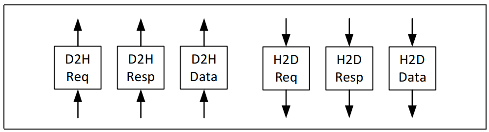
H2D Request从主机向设备发送请求。这些请求是用于保持一致性的snoops。设备可能会为snoops 返回数据。请求包含数据缓冲区的位置，任何返回数据都应写入该缓冲区。H2D Response携带ordering messages和写入数据。每个响应都带有原始设备请求中的请求标识符，以指示响应的路由。对于写入数据拉取响应，信息中包含应写入数据的位置。CXL.mem Overview
CXL.mem Overview
CXL Memory Protocol称为CXL.mem，是CPU与Device Memory之间的事务接口。它在跨Die通信时使用Compute Express Link(CXL)的Phy和Link Layer。该协议可用于多种不同的内存连接选项，包括Memory Controller位于Host CPU中、Memory Controller位于Accelerator设备中或Memory Controller移至内存缓冲芯片中。它还适用于不同的内存类型（Volatile， Persistent）和配置（Flat， Hierarchical）。
CPU Coherency Engine通过CXL.mem中的 Request和Response与设备内存进行通讯。在此配置中，CPU Coherency Engine被视为 CXL.mem Master， Mem Device被视为 CXL.mem Subordinate。CXL.mem Master负责发出 CXL.mem 请求（读取、写入等）， CXL.mem Subordinate负责响应 CXL.mem 请求（数据、完成等）。
当Subordinate Device是一个Accelerator时，CXL.mem Protocol假定设备中存在Device Coherency Engine(DCOH)。DCOH负责执行一致性相关指令，如根据 CXL.mem 命令窥探设备缓存。
CXL.mem将Master到Subordinate的交易称为 "M2S"，将Subordinate到Master的交易称为 "S2M"。
在 M2S 事务中，有两种报文类别：
• 不含数据的请求--通称为请求（Req）
• 带数据的申请--（RwD）
同样，在 S2M 事务中，也有两种报文类别：
• 无数据响应 -- 一般称为无数据响应 (NDR)
• 带数据的响应--一般称为数据响应（DRS）
不同版本CXL差异

固件职责
Firmware除了要完成Device的枚举之外，还需要完成以下任务。
-
对于CXL2.0 Device，要完成对Component Register中HDM Decoder的配置，同时使能Component Register中的CXL HDM Decoder Global Control Register (Offset 04h) ->HDM Decoder Enable来关闭DVSEC ID 0中Range Size和Range Base对Memory Address的解码。
-
对于CXL 1.1 Device，要完成对DVSEC ID 0中Range Size和Range Base的配置。
-
完成对CXL Root Port和CXL Switch Upstream Port中HDM Decoder的配置。
-
设置PCIe DVSEC for CXL Device和CXL 2.0 Extensions DVSEC for Ports上面的Mem_Enable。
CXL HDM Decoder 的作用
- 地址解码：HDM Decoder 的主要功能是将来自主机（Host）的内存访问请求解码为设备内存地址。这意味着当处理器发出内存读写请求时，HDM Decoder 会将这些请求转换为具体的设备内存地址，以便正确地访问数据。
- 内存管理：HDM Decoder 帮助管理主机与设备内存之间的地址映射，确保主机能够透明地访问设备内存，就像访问本地内存一样。
- 支持多种内存类型：HDM Decoder 可以支持多种内存类型，包括 DRAM、NVRAM 等，满足不同应用的需求。
CXL 寄存器
按照寄存器所在的位置进行分类，CXL 相关控制及状态寄存器可分为两类：
一类位于 PCIe 配置空间 （Configuration Space），只能通过配置读写请求来访问； 一类位于 MMIO 区域 （Memory Mapped Space），只能通过 Memory 读写请求进行访问。

DVSEC
在 PCIe 配置空间中，以 DVSEC 的形式实现了 CXL 相关的能力结构。这个原本是为厂商预留的，正好CXL可以使用，且为CXL分配了一个 vendor ID 0x1E98.
截至 CXL 3.0 共定义了以下 9 组 CXL 相关的 DVSEC：
-
PCIe DVSEC for CXL Devices ，又称 CXL PCIe DVSEC，所有 RCD、LD、SLD、FMLD 等 CXL Device 的 D0F0 必须实现该 DVSEC，软件根据 Device 配置空间中是否实现了该 DVSEC 来判断 Device 为 PCIe Device 还是 CXL Device 。
-
Non-CXL Function Map DVSEC ，用以指示多 Device、多 Function 设备中不支持 CXL.cachemem 的 Device 或 Function。
-
CXL Extensions DVSEC for Ports ，仅用于 RP、DSP 及 USP，在 PCIe 枚举层级之外维护一条 RCH-RCD 层级。
-
GPF DVSEC for CXL Ports ，用于 CXL Port 中的 GPF 相关能力，主要用以控制 GPF Phase1、Phase2 的 Timeout 值。
-
GPF DVSEC for CXL Devices ，用于 CXL Device 中的 GPF 相关能力，主要用以指示 GPF Phase2 的 Timeout 值及 Phase2 期间的功耗。
-
PCIe DVSEC for Flex Bus Port ，又称 Flex Bus Port DVSEC，用以控制及指示 Flex Bus 相关能力，是给 Multi-Device 场景预留的能力结构，CXL 1.1 以上所有 CXL Port/Device 均需实现该能力结构。CXL 链路训练期间 Modified TS 中的 Flex Bus 相关信息多来源于该能力结构中的寄存器，接收到对端发来的 Modified TS Info 也会记录在该能 DVSEC 相关寄存器中。对于实现了 RCRB 的 RCH/RCD，该 DVSEC 位于 RCRB 中。
-
Register Locator DVSEC ，该能力结构中存放有一个或多个 CXL 寄存器块的 Entry。
-
MLD DVSEC ，仅适用于 FM 所属的 LD，用于 MLD 相关 Capability，比如指示支持的 LD 数量、LD-ID 热复位向量。
-
PCIe DVSEC for Test Capability ，用于 CXL Compliance 测试，在 CXL Compliance 测试过程中对该 DVSEC 进行配置，并根据该 DVSEC 内容进行相关测试。
9 组 CXL DVSEC 之间通过 DVSEC ID 加以区分

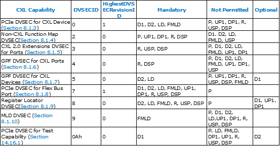
每个DVSEC里的寄存器


Reg in MMIO
上文提到了 9 组实现在 PCIe 配置空间的 CXL 相关 DVSEC。鉴于部分 CXL 组件不具备 PCIe 配置空间，且 PCIe 配置空间 4KB 较小难以满足 CXL Component Register 的 Size 要求，此时 CXL 相关的 DVSEC 及 Component Register 可以实现在 Memory Mapped 空间（MMIO），通过 Memory 读写请求进行访问。
截至 CXL 3.0，CXL 协议定义了 6 类位于 MMIO 中的寄存器：
-
RCH DP RCRB ，可视为 RCH 的 4KB 配置空间，跟其 MEMBAR0 范围不重叠，基地址由 ACPI 指定。
-
RCH DP Component Register ，包括 CXL 协议层、链路层、物理层及 ARB/MUX 等组件相关的寄存器，共 64KB，其位于 RCH DP RCRB 指定的 64b MEMBAR0 范围内 （物理上位于 RCH 端）。
-
RCD UP RCRB ，可视为 RCD 的 4KB 配置空间，跟 RCH DP RCRB 占用连续的两个 4KB 空间，其可以（不强求）跟 RCH DP 的 Memory 范围（非 MEMBAR0）重叠。RCD UP RCRB 的基地址采用 RCD 复位后收到的 RCH DP 发来的第一笔 MRd（CXL 1.1 时 MRd/MWr 均可）的地址。
-
RCD UP Component Register ，包括 CXL 协议层、链路层、物理层及 ARB/MUX 等组件相关的寄存器，共 64KB；对于实现了 RCRB 的 RCD，该寄存器块位于 RCD UP RCRB 指定的 64b MEMBAR0 范围内 （物理上位于 RCD 端），该范围同时处于 RCH DP 的 Memory 范围（非 MEMBAR0）之内；对于未实现 RCRB 的 RCD，该组寄存器的具体类型及位置 由 Register Locator DVSEC 来指定
-
Component Register for ALL Other CXL Components ，其他 CXL Component 相关寄存器。这组寄存器的具体类型及位置 由 Register Locator DVSEC 来指定 。
-
CXL Host Bridge Component Register (CHBCR)，CXL Host Bridge 组件寄存器，目前主要用于控制多 RP 之间的 Memory Interleaving，其基地址从 ACPI CEDT 中取得。
上述 RCRB 及 Components Register 在地址空间中的分布示意图如下。CHBCR 及 Register Locator DVSEC 指定的 Component Registers for All Other CXL Components 位置不定，未包含在此图中。
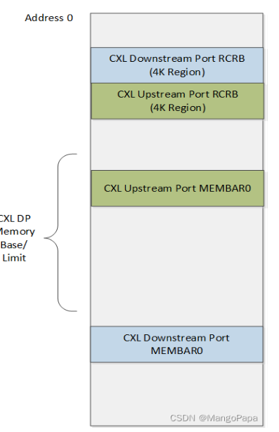
参考：
这个博主感觉很厉害，有很多PCIe和CXL相关文章，很详细，精彩。blog
https://blog.csdn.net/weixin_40357487/article/details/132553156
CXL in CMN
[toc]
CXS 控制器
ARM RD_N2 参考设计中，chip to chip互连的通信协议是CCIX2.0，CMN-700 TRM中使用的描述是ARM 私有协议CML_SMP。
S家的CXL控制器内部集成了一个CXS控制器，支持CCIX2.0，其实CML_SMP就是CCIX2.0的改良版，增加了一些新的不影响功能的信息。
CMN 上CCG节点负责连接外部的chip或者CXL设备。
Coherent Multichip Link (CML) device = CCG
A given multi-chip link can be used for: • SMP (CML_SMP) connection • CXL device attachment
A CML device (CCG) can be configured to be used for CML_SMP connection or CXL device attachment.
For SMP systems, CCG block is required to enable multi-chip SMP communications over a CXS issue B interface.
那么CXL就应该使用CXS issue A interface
CCG 结构

CCG 工作模式
The CML RA node type has the following MPAM modes:
-
SMP mode The CML RA passes the MPAM field on the USER field of the request. When snooped, the CML RA receives the MPAM field and passes it through the CHI SNP MPAM field.
-
Non-SMP mode The CML RA drops the MPAM field that is received on the CHI request. The CML RA also does not receive MPAM field on CML snoops in this mode.
-
CXSA mode The CML RA passes the MPAM field on the USER field of the request, even though CXSA is in non-SMP mode. You can use a configuration bit to enable passing of MPAM attributes when in CXSA mode.
The CML HA node type has the following MPAM modes:
-
SMP mode The CML HA receives MPAM fields through the USER field of the request and passes them through the CHI MPAM field. On incoming CHI transactions, the CML HA passes CHI MPAM values through on the USER field.
-
Non-SMP mode The CML HA drops the MPAM values that it receives on CHI snoop. The CML HA does not receive the MPAM attributes on CML requests.
当连接CXL 时候，就需要enable CXSA mode in RA。
LA 中也有相关寄存器，也需要enable CXL。
CCG SAM
CMN CCG节点是负责连接CXL的，目前CMN700支持type3类型的设备，因此，需要为CXL type3 设备的memory 预留一段内存。具体使用就是在配置CMN SAM时候配置，将一段内存映射到CCG 节点。
CXL in SCP and EDK2
SCP 固件中实现了对CXL功能的支持，基于开源的代码，学习相关的配置。
CCG 配置
-
SHA-1: bc14e780c120fc656ce905d6e219078a0006da88
- module/cmn700: configuring CCG for mapping Host address to CXL mem
A Memory region is reserved for CXL Memory. CXL.Mem (0x3fe_0000_0000) comes under 4TB Chip-0 memory and the whole region is by default configured as SCG. Configured CXL.Mem region in HNF-SAM HTG and CCG SA node IDs for HTGs in following order -
HNF_SAM_CCG_SA_NODEID_REG HNF_SAM_HTG_CFG3_MEMREGION HNF_SAM_HTG_CFG2_MEMREGION HNF_SAM_HTG_CFG1_MEMREGION
CXL Memory region is accessible as Normal memory with above configuration.
This patch maps Host address space to CXL device mem area through CCG node, based on the CXL device memory size, which is discovered by CXL module. CXL module invokes runtime CMN700 API for mapping the host address space and configuring CCG node.
This patch also adds a flag "cxl_mem" in CCG_Config structure for identifying host region and configuration reserved for CXL device memory purpose and thus differentiating from Remote chip memory.
Signed-off-by: Sayanta Pattanayak sayanta.pattanayak@arm.com Change-Id: I988f471db6a6a55f97320519413daedd8ea524fb
config_cmn700.c
N2 参考设计中，将0-0x40000000000全都设置为SCG 属性，
然后再从HNSAM中将0-0x3fe00000000设置为CCG-cxl_mem属性。
#if (PLATFORM_VARIANT == 1)
static const struct mod_cmn700_ccg_config ccg_config_table_chip_0[] = {
{
.remote_rnf_count = 0,
.remote_mmap_table = {
.base = UINT64_C(0x3fe00000000),
.size = UINT64_C(8) * FWK_GIB,
.type = MOD_CMN700_REGION_TYPE_CCG,
},
.ra_mmap_table = {
{
.base = UINT64_C(0x3fe00000000),
.size = UINT64_C(8) * FWK_GIB,
.remote_haid = 0,
},
{ 0 }
},
.remote_agentid_to_linkid_map = {
{
.remote_agentid_start = (RNF_PER_CHIP * CHIP_0),
.remote_agentid_end = (RNF_PER_CHIP * CHIP_0)
},
},
.smp_mode = false,
.cxl_mem = true,
},
};
#endif
增加了一个entry，一共8G，同时增加了一个flag cxl_mem。类型是CCG。
static int cmn700_setup_rnsam_ccg_regions(void)
{
const struct mod_cmn700_config *config;
const struct mod_cmn700_mem_region_map *region;
struct cmn700_rnsam_reg *rnsam;
unsigned int count;
unsigned int cxra_ldid;
unsigned int cxra_node_id;
unsigned int idx;
uint32_t bit_pos;
uint32_t group;
config = ctx->config;
/* Do configuration for CCG Nodes */
for (idx = 0; idx < config->ccg_table_count; idx++) {
region = &config->ccg_config_table[idx].remote_mmap_table;
if (region->type != MOD_CMN700_REGION_TYPE_CCG) {
return FWK_E_DATA;
}
FWK_LOG_INFO(
MOD_NAME " [0x%llx - 0x%llx] %s",
region->base,
region->base + region->size - 1,
mmap_type_name[region->type]);
/* If the region is for extended memory area like CXL.Mem
* and connected through CCG then the region shouldn't be
* marked as Non-Hash region. CXL.Mem region should be part
* of Hashed cache group area.
*/
if (config->ccg_config_table[idx].cxl_mem == true)
continue;
for (count = 0; count < ctx->internal_rnsam_count; count++) {
rnsam = ctx->internal_rnsam_table[count];
在配置CCG 时候，如果是CXL.Mem，就不应该用non-hash，而是用hash。
static int map_ccg_for_cxl_mem(uint64_t size)
{
uint32_t idx;
const struct mod_cmn700_config *config = ctx->config;
const struct mod_cmn700_ccg_config *ccg_config;
cmn700_rnsam_stall();
/* Do configuration of CCG Node for mapping remote CXL Mem area. */
for (idx = 0; idx < config->ccg_table_count; idx++) {
ccg_config = &(config->ccg_config_table[idx]);
if (ccg_config->cxl_mem == true)
ccg_setup_for_remote_mem(size, ctx, ccg_config);
}
cmn700_rnsam_unstall();
return FWK_SUCCESS;
}
这里新增了一个API，用来设置CCG CXL.Mem
同时，发现这里有个rnsam stall和unstall 函数，看起来是用来暂停rnsam的。不会产生路由地址，而是直接将所有的请求发给default node。
当前项目，直接将STATUS寄存器设置为了0x2，也就是unstall，enable RNSAM。
问题：如果需要online 更新RNSAM，是否就需要调用stall接口。
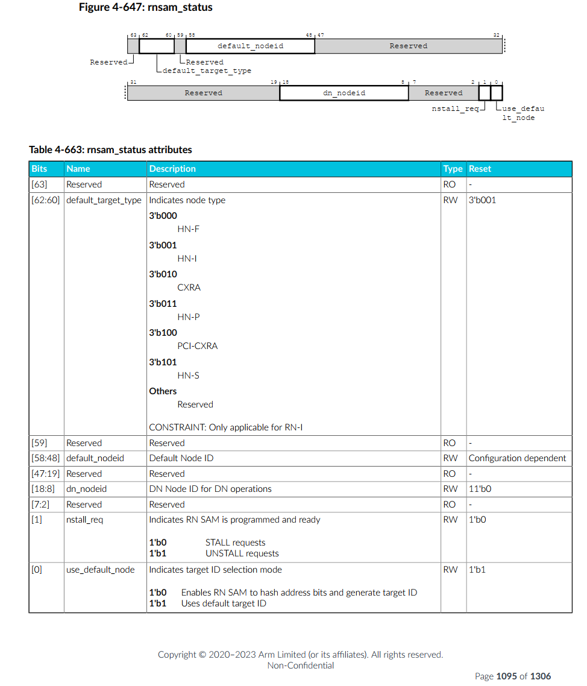

ccg_setup_for_remote_mem
int ccg_setup_for_remote_mem(
uint64_t size,
struct cmn700_device_ctx *ctx,
const struct mod_cmn700_ccg_config *ccg_config)
{
uint64_t reg_val;
unsigned int index;
unsigned int ccg_ldid;
struct cmn700_hnf_reg *hnf_reg;
struct cmn700_ccg_ra_reg *ccg_ra_reg;
cmn700_ccg_ctx.is_prog_for_port_agg = false;
/* Enable CXSA */
ccg_ldid = get_ldid(ctx, cmn700_ccg_ctx.is_prog_for_port_agg);
ccg_ra_reg = ctx->ccg_ra_reg_table[ccg_ldid].ccg_ra_reg;
for (index = 0; index < ctx->hnf_count; index++) {
/* Programming sequence to enable CXL.mem regions inside HNSAM */
hnf_reg = (struct cmn700_hnf_reg *)ctx->hnf_node[index];
/* Configuring CCG SA node IDs for HTGs in the HNSAM */
reg_val = hnf_reg->HNF_SAM_CCG_SA_NODEID_REG[0];
reg_val &= ~(CMN700_HNF_SAM_CCG_SA_NODEID_MASK);
reg_val |= get_node_id(ccg_ra_reg);
hnf_reg->HNF_SAM_CCG_SA_NODEID_REG[0] = reg_val;
/* CXSA/CXLSA aggregated SA selection function */
/* 用来指定这个region映射到几个SN NODE，如8SN node, 或者是CXSA 模式 */
hnf_reg->HNF_SAM_HTG_CFG3_MEMREGION[0] |=
(CMN700_HNF_SAM_HTG_MODE_CXSA <<
CMN700_HNF_SAM_HTG_SN_MODE_POS);
/* 64B interleaved */
/* CXSA 模式下的 interleaved 颗粒度，这里只清除了，没有置位，说明用的默认0，64B */
reg_val = hnf_reg->HNF_SAM_HTG_CFG3_MEMREGION[0];
reg_val &= ~(CMN700_HNF_SAM_HTG_SA_DEVICE_INTERLEAVE_CNTL_MASK <<
CMN700_HNF_SAM_HTG_SA_DEVICE_INTERLEAVE_CNTL_POS);
hnf_reg->HNF_SAM_HTG_CFG3_MEMREGION[0] |= reg_val;
/* 1 CXSA/CXLSA port used */
/* 这里只清除了，没有置位，说明用的默认0 */
reg_val = hnf_reg->HNF_SAM_HTG_CFG3_MEMREGION[0];
reg_val &= ~(CMN700_HNF_SAM_HTG_SA_PORTS_CNT_MASK <<
CMN700_HNF_SAM_HTG_SA_PORTS_CNT_POS);
hnf_reg->HNF_SAM_HTG_CFG3_MEMREGION[0] |= reg_val;
/* htg_region_end_addr[51:20] = end address of HTG region */
reg_val = ccg_config->ra_mmap_table[0].base +
(size - 1);
reg_val &= ~(CMN700_HNF_SAM_HTG_REGION_ADDR_RES_MASK);
hnf_reg->HNF_SAM_HTG_CFG2_MEMREGION[0] |= reg_val;
/* htg_region_base_addr[51:20] = start address of HTG region */
reg_val = ccg_config->ra_mmap_table[0].base;
reg_val &= ~(CMN700_HNF_SAM_HTG_REGION_ADDR_RES_MASK);
hnf_reg->HNF_SAM_HTG_CFG1_MEMREGION[0] |= reg_val;
/* Configuring HTG region as Valid */
hnf_reg->HNF_SAM_HTG_CFG1_MEMREGION[0] |=
(UINT64_C(0x1) << CMN700_HNF_SAM_HTG_REGION_VALID_POS);
}
/*
* Program the CXRA SAM with the address range and the corresponding
* remote HAID.
*/
program_ccg_ra_sam_addr_region(ctx, ccg_config);
update_cxl_mem_region(ccg_config->ra_mmap_table[0].base,
ccg_config->ra_mmap_table[0].size);
return FWK_SUCCESS;
}
实际应用
link前
主要是寻址范围，cxl 类型，cxsa enable等。
- RA 的 SAM region: 范围
- RA 的 SAM valid：valid有效位

- CCLA的flex bus control： MEM CACHE
- CCLA的config control： MEM CACHE
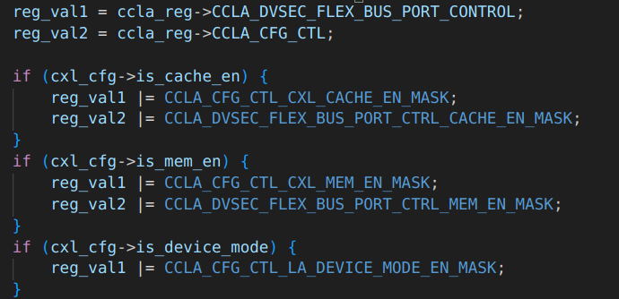


link后


CXL 枚举
[toc]
CXL 协议判断
判断当前链路上跑的是CXL还是PCIe，需要读取寄存器。


PCIe DVSEC for CXL Devices ，又称 CXL PCIe DVSEC，所有 RCD、LD、SLD、FMLD 等 CXL Device 的 D0F0 必须实现该 DVSEC，软件根据 Device 配置空间中是否实现了该 DVSEC 来判断 Device 为 PCIe Device 还是 CXL Device 。
CXL2.0
与PCIe 一致。
CXL1.1
RCiEP
HDM Decoder
DDR Introduction
[toc]
Introduction
SDRAM vs. SRAM
-
Synchronous Dynamic Random Access Memory
-
Static RAM
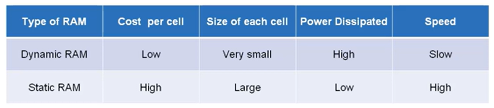
片内通常用SRAM，片外用SDRAM。

DDR3 SDRAM电路结构高清图

- 左上是命令信号，下面是地址，18b长度；
- 地址存到地址寄存器；
- 8个bank -> BA[2:0], 3个bit表示8个结果；
- 行选择，地址A，15b长度；
- 列选择，长度10b;
- 8192： 一行存储的电荷容量；
行地址（Row Address）：16位（A0-A15）
列地址（Column Address）：10位（A0-A9）
Bank地址（Bank Address）：3位（BA0-BA2）
4个时钟周期，上升下降都传输，8比特。

256Mb Configuration
| 参数 | 256Mb x 4 | 128Mb x 8 | 64Mb x 16 |
|---|---|---|---|
| # of Banks | 8 | 8 | 8 |
| Bank Address | BA0 - BA2 | BA0 - BA2 | BA0 - BA2 |
| Auto precharge | A10/AP | A10/AP | A10/AP |
| BC switch on the fly | A12/BC# | A12/BC# | A12/BC# |
| Row Address | A0 - A13 | A0 - A13 | A0 - A12 |
| Column Address | A0 - A9,A11 | A0 - A9 | A0 - A9 |
| Page size | 1 KB | 1 KB | 2 KB |
2Gb Configuration
| 参数 | 512Mb x 4 | 256Mb x 8 | 128Mb x 16 |
|---|---|---|---|
| # of Banks | 8 | 8 | 8 |
| Bank Address | BA0 - BA2 | BA0 - BA2 | BA0 - BA2 |
| Auto precharge | A10/AP | A10/AP | A10/AP |
| BC switch on the fly | A12/BC# | A12/BC# | A12/BC# |
| Row Address | A0 - A14 | A0 - A14 | A0 - A13 |
| Column Address | A0 - A9,A11 | A0 - A9 | A0 - A9 |
| Page size | 1 KB | 1 KB | 2 KB |
DDR4 SDRAM电路结构高清图

行地址（Row Address）：16位（A0-A15）
列地址（Column Address）：10位（A0-A9）
Bank地址（Bank Address）：2位（BA0-BA1）
Bank组地址（Bank Group Address）：2位（BG0-BG1）
DDR5 SDRAM电路结构高清图

行地址（Row Address）：16位（A0-A15）
列地址（Column Address）：10位（A0-A9）
Bank组地址（Bank Group Address）：2位（BA0-BA1）
Bank地址（Bank Address）：3位（BG0-BG2）
命令地址（Command Address）：统一使用CA总线
存储层次
- Channel：处理器的内存控制器的通道数量
- Module：内存条，可以有多个内存条连接到同一个 Channel 上
- Rank：多个 DDR SDRAM 芯片在宽度上拼接起来，一个 Module 上可以放下一到四个 Rank，这些 Rank 共享总线，每个 Rank 都有自己的片选信号 CS_n，实际上就是在深度上拼接 SDRAM 芯片
- Chip：也就是一个 DDR SDRAM 芯片，例如一个数据位宽是 64 位的 Rank，是使用 8 个 x8 的 Chip 在宽度上拼接而成
- Bank Group：DDR4 引入，通过 Bank Group 掩盖 DDR4 同一个 Bank Group 内连续读的延迟 tCCD_L
- Bank：每个 Bank 同时只有一个 Row 被激活，通过多个 Bank 掩盖 Activate/Precharge 的延迟
- Row：Activate/Precharge 的单位
- Column：每个 Column 保存 n 个 Cell，n 是 SDRAM 的位宽
- Cell：每个 Cell 保存 1 bit 的数据
一些概念
Page的概念
- 行（Row）和列（Column）：DDR内存被组织成一个二维数组，分为行和列。每个单元格存储一个位或几个位的数据。
- Page（页）：一次性可以被同时激活的行称为一页。当一行被激活后，内存控制器可以快速访问该行内的所有列数据，这样可以减少访问延迟。
- 页大小：页的大小通常由行的宽度和列的宽度决定。例如，如果一行有1024个单元格，每个单元格存储一个字节，那么这一页的大小就是1024字节。
为什么上面表格中有一个是2K page呢，因为它一行中1024个单元，但是是x16的，也就是2个B，所以是2KB。
8N预取
内部总线是32位，外部是4位；8倍的关系，就是8N；
读操作，一下取32位，由并转串，发出去；
内部时钟是慢的，外部时钟是快的；
内存训练
地址和控制信号使用的是菊花连，数据信号（DQ、DQS 和 DM）使用的是并行。

fly-by的方式导致不同DRAM看到波形不同，有不同的延迟，越远延迟越大。需要在控制器侧加一些延迟，让数据对齐。
CLK/CLK#、DQS、AD和CMD信号不需要同时传递，改善了信号完整性，使更高频率成为可能。
DQ走的是并行。
地址行有效，列有效以后，第一颗芯片很快就准备好了数据，放到DQ上了，第8颗需要等很久才准备好。如果都准备好了，kua的一下，DQ去采样，就好了。就需要训练。
Write Leveling
这部分解决 Fly-by Topology 带来的延迟不一致问题。
让 SDRAM 芯片接受到的 DQS 信号与 CK 信号同步。也就是确保所有数据线（DQ）和数据选通信号（DQS）在到达内存模块时是同步的。
DQS（Data Strobe）信号和CK（Clock）信号是关键的时钟和数据同步信号，用于确保数据的准确传输和接收。
DQS信号：是数据选通信号，用于同步数据传输，确保数据在正确的时刻被锁存，用于在数据传输过程中指示数据有效时刻。它在读写操作中分别由内存模块和内存控制器生成，并与数据一起传输。
CK信号：提供时钟基准，控制所有同步操作。数据在时钟信号的上升沿和下降沿都被传输，实现双倍数据速率。
DQ信号：负责传输内存读写操作中的实际数据。每一条DQ信号线对应一个数据位。
简单来说，就是内存控制器不停的发送不同时延的DQS 信号，内存 颗粒在DQS-DQS#的上升沿采样CK 的状态，并通过DQ 线反馈给DDR3 控制器（一组01010101的数据）。控制器端反复的调整DQS-DQS#的延时，直到控制器端检测到DQ 线上0 到1 的跳变控制器就锁住此时的延时值，此时便完成了一个Write leveling过程。
过程：
- 设置 SDRAM 进入 Write Leveling 模式，此时 SDRAM 会使用 DQS 对 CK 采样，把结果输出到 DQ
- 控制器枚举 DQS 的延迟，读取出每个 DQS 延迟下的 DQ 结果，得到一个 0-1 串，例如：
001111111111111111110000，即随着延迟增大，先采样到 0，再采样到 1，最后又采样到 0 - 找到一个 DQS 延迟，使得 DQ 出现一个从 0 到 1 的变化，那么按照这个延迟输出，DQS 就会与 CK 同步
- 设置 SDRAM 结束 Write Leveling 模式
Read Leveling
对于读操作，数据是从 SDRAM 发送给控制器，不同的数据到达控制器的时间可能也不同，因此也需要对读操作进行校准。
为了判断读取的数据是否正确，做法是首先写入已知的数据，然后再读出来，如果读取的数据和写入的数据完全一致，就说明可以正确地进行读操作。
过程：
- 写入数据（或者用 SDRAM 的生成固定 Pattern 输出的功能）
- 设置延迟从 0 开始循环，不断增大
- 在每个延迟的设定下，读取出数据，把读取的结果与之前写入的数据进行比较
- 统计出哪些延迟条件下，读取数据是准确的，准确的记为 1，不准确的记为 0
- 找到表示准确的 1 的范围，取中点作为最终的校准结果
注意这里不再是找到 0-1 的变化的地方，Write Leveling 找 0-1 变化是为了同步，同步的地方正是 0-1 变化的地方；而 Read Leveling 的目的是要读取出正确的数据，已知有一段连续的延迟区间，区间内都可以读出正确的数据，那么取其中点，即使因为温度等条件变化，区间出现移动，因为保留了足够的余量，所以依然可以工作。取中点这一步也称为 Read Centering。
Spec
SDRAM 相关标准由 JEDEC 制定：
- JESD79F: DDR SDRAM
- JESD79-2F: DDR2 SDRAM
- JESD79-3F: DDR3 SDRAM
- [JESD79-4D: DDR4 SDRAM](https://www.jedec.org/document_search?search_api_views_fulltext=jesd79-4 ddr4)
- JESD79-5B: DDR5 SDRAM
除了 DDR 系列，还有低功耗的 LPDDR 系列：
- JESD209B: LPDDR SDRAM
- JESD209-2F: LPDDR2 SDRAM
- JESD209-3C: LPDDR3 SDRAM
- JESD209-4D: LPDDR4 SDRAM
- JESD209-5B: LPDDR5 SDRAM
高性能常用的 HBM 也基于 SDRAM 技术：
还有 GDDR SGRAM 系列：
- SDRAM3.11.5.8 R16.01: GDDR4 SGRAM
- JESD212C.01: GDDR5 SGRAM
- JESD232A.01: GDDR5X SGRAM
- JESD250D: GDDR6 SGRAM
参考：
https://www.cnblogs.com/sky-heaven/p/15948268.html
https://zhuanlan.zhihu.com/p/26327347
ACPI
ACPI Introduction and Overview
[toc]
History of ACPI
ACPI是在1990年代中期通过英特尔、微软、东芝、惠普、Phoenix 之间的合作开发的。在ACPI出现之前，操作系统主要使用BIOS(基本输入输出系统)接口进行电源管理以及设备的发现和配置。这种电源管理方法利用操作系统调用系统BIOS的能力来进行电源管理。BIOS还用于发现系统设备并基于探测输入/输出(I/O)尝试将正确的驱动程序匹配到正确的设备(即插即用，plug and play)来加载驱动程序。设备的位置也可以在BIOS中硬编码，因为平台本身是不可枚举的。
这些解决方案在三个关键方面存在问题。首先，操作系统应用程序的行为可能会受到BIOS配置的电源管理设置的负面影响，导致系统在演示期间或其他不方便的时间进入睡眠状态。其次，电源管理接口在每个系统上都是专有的，这要求开发人员学习如何为每个单独的系统配置电源管理。最后，各种设备的默认设置也可能相互冲突，导致设备崩溃、行为不正常或无法发现。
开发ACPI就是为了解决这些问题和其他问题。
What is ACPI?
ACPI首先可以理解为一种独立于体系结构的电源管理和配置框架，它在主机操作系统内表现为一个子系统。该框架建立了一个硬件寄存器集来定义电源状态(睡眠、休眠、唤醒等)，硬件寄存器集可以容纳对专用硬件和通用硬件的操作。
标准ACPI框架和硬件寄存器集的主要目的是启用电源管理和系统配置，而无需直接从操作系统本地调用固件。ACPI作为系统固件(BIOS)和操作系统之间的接口层，具有一定的限制和规则。如"图1"所示：

从根本上说，ACPI定义了两种在系统固件和操作系统之间共享的数据结构：数据表(data table)和定义块(definition block)。这些数据结构是固件和操作系统之间的主要通信机制，数据表存储原始数据并由设备驱动程序使用，定义块由解释器可执行的字节码组成。如"图2"所示：
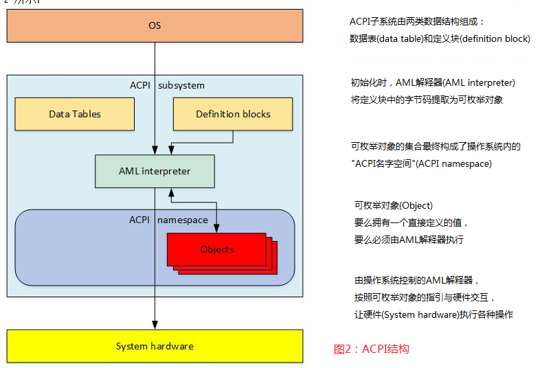
此定义块字节码是从 ASL(ACPI Source Language) 代码编译而来的。ASL是用于定义ACPI对象和编写控制方法的语言。ASL编译器将ASL翻译成 AML(ACPI机器语言) 字节码。AML是 ACPI AML 解释器处理的语言，如"图3"所示：
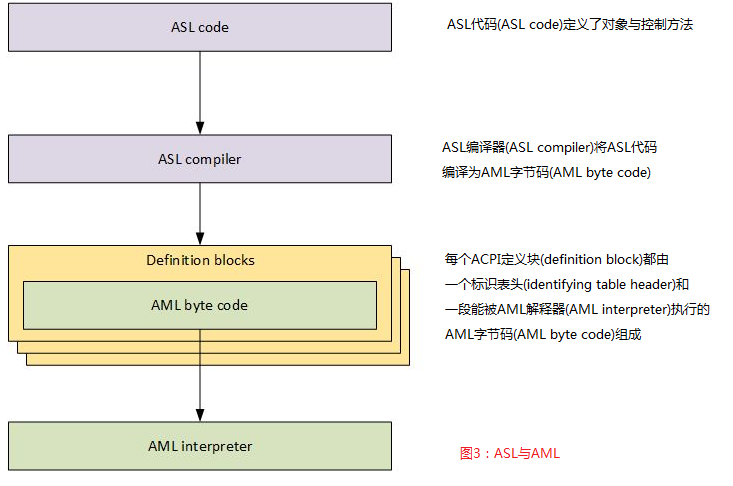
AML解释器执行字节码并评估定义块中的对象，以允许字节码执行循环结构、条件评估、访问定义的地址空间以及执行应用程序所需的其他操作。AML解释器对定义的地址空间具有读/写访问权限，包括系统内存、I/O、PCI配置等。它通过定义称为"对象"的入口点来访问这些地址空间。对象要么有一个直接定义的值，要么能够由AML解释器执行。
这个可枚举对象的集合是一个称为"ACPI命名空间"的操作系统结构。命名空间是系统上ACPI设备的分层表示。系统总线是这些ACPI设备的枚举根。在其他总线上可枚举的设备(如PCI或USB设备)通常不会在命名空间中枚举。相反，它们自己的总线会枚举设备并加载驱动程序。但是，所有可枚举的总线都有一种编码技术，允许ACPI对设备的总线特定地址进行编码，以便可以在ACPI中找到它们，即使ACPI通常并不加载这些设备的驱动程序。
通常，具有 _HID 对象(硬件识别对象)的设备会被枚举并由ACPI加载其驱动程序。具有 _ADR 对象(物理地址对象)的设备通常不会被ACPI枚举，并且通常不会被ACPI加载其驱动程序。_ADR 设备通常可以在不涉及ACPI的情况下执行所有必要的功能，但是在设备驱动程序无法执行功能的情况下，或者如果驱动程序需要与系统固件通信，ACPI可以评估对象以执行所需的功能。
例如，PCI不支持本机热插拔。但是，PCI可以使用ACPI来评估对象并定义允许ACPI填充在PCI上执行热插拔所需功能的方法。
ACPI也是一个运行时模型，它处理系统运行期间发生的ACPI中断事件。ACPI继续根据需要评估对象以处理这些事件。这种基于中断的运行时模型在下面的运行时模型部分有更详细的讨论。
ACPI initialization
了解ACPI如何工作的最好方法是按时间顺序来了解。在用户启动系统的那一刻，系统固件完成其设置、初始化和自检。如"图4"所示:

然后，系统固件使用固件初始化期间获得的信息，根据需要使用各种平台配置和电源接口数据更新ACPI表，然后再将控制权传递给引导加载程序。扩展根系统描述表(XSDT)是ACPI子系统使用的第一个表，包含系统上大多数其他ACPI表的地址。XSDT指向固定的ACPI描述表(FADT)以及操作系统在初始化期间处理的其他主要表。操作系统初始化后，FADT将ACPI子系统引导到差异化系统描述表(DSDT)，这是命名空间的开始，因为它是第一个包含定义块的表。
ACPI子系统然后处理DSDT并开始从ACPI定义块构建命名空间。XSDT还指向辅助系统描述表(SSDT)并将它们添加到命名空间。ACPI数据表提供有关系统硬件的操作系统原始数据。
操作系统从ACPI表构建命名空间后，它开始遍历命名空间并为它在命名空间中遇到的所有 _HID 设备加载设备驱动程序。

ACPI 在EDK2中存储的位置
system table -> system configuration table -> ACPI table
system table 会作为启动参数传递给OS，这样OS就知道了系统信息。
而ACPI table 是作为system configuration table的一个entry，entry的结构包括一个GUID和一个指针，如下所示：
///
/// Contains a set of GUID/pointer pairs comprised of the ConfigurationTable field in the
/// EFI System Table.
///
typedef struct {
///
/// The 128-bit GUID value that uniquely identifies the system configuration table.
///
EFI_GUID VendorGuid;
///
/// A pointer to the table associated with VendorGuid.
///
VOID *VendorTable;
} EFI_CONFIGURATION_TABLE;
ACPI 使用的GUID定义在 MdePkg\Include\Guid\Acpi.h
#define ACPI_TABLE_GUID \
{ \
0xeb9d2d30, 0x2d88, 0x11d3, {0x9a, 0x16, 0x0, 0x90, 0x27, 0x3f, 0xc1, 0x4d } \
}
#define EFI_ACPI_TABLE_GUID \
{ \
0x8868e871, 0xe4f1, 0x11d3, {0xbc, 0x22, 0x0, 0x80, 0xc7, 0x3c, 0x88, 0x81 } \
}
#define ACPI_10_TABLE_GUID ACPI_TABLE_GUID
//
// ACPI 2.0 or newer tables should use EFI_ACPI_TABLE_GUID.
//
#define EFI_ACPI_20_TABLE_GUID EFI_ACPI_TABLE_GUID
extern EFI_GUID gEfiAcpiTableGuid;
extern EFI_GUID gEfiAcpi10TableGuid;
extern EFI_GUID gEfiAcpi20TableGuid;
ACPI table 结构
包括1.0和2.0 版本。
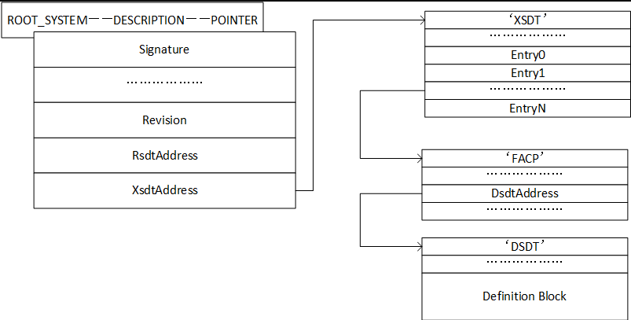


在ACPI table entry 中，存的就是RSDP的指针。RSDP 中又存储了多个指针，其中一个指针，指向XSDT。
RSDT与XSDT区别
指针大小：
- RSDT使用32位指针，因此只能指向4GB地址空间内的ACPI表。
- XSDT使用64位指针，能够支持更大的地址空间，适用于64位系统。
兼容性：
- RSDT在ACPI 1.0版引入，主要用于32位系统。
- XSDT在ACPI 2.0版引入，主要用于64位系统，但仍然需要向下兼容32位系统。
表结构：
- RSDT的指针列表由32位地址指针组成。
- XSDT的指针列表由64位地址指针组成。
Linux Kernel 如何查找ACPI
和创建过程类似，找系统表，找配置表，找ACPI 表。
实际ACPI table
我的笔记本上的ACPI table，在XSDT下，共挂了36个entry。其中RSDP，XSDT，FADT（Fixed ACPI Description Table），DSDT（Differentiated System Description Table），FACS（Firmware ACPI Control Structure）是必须存在的，其他可选。
Signature "XSDT"
Length 0x00000144 (324)
Revision 0x01 (1)
Checksum 0x34 (52)
OEM ID "LENOVO"
OEM Table ID "CB-01 "
OEM Revision 0x00000001 (1)
Creator ID " "
Creator Revision 0x01000013 (16777235)
Entry0 0x0000000044BC3000 (FACP)
Entry1 0x0000000044B2E000 (UEFI)
Entry2 0x0000000044BF3000 (SSDT)
Entry3 0x0000000044BF2000 (SSDT)
Entry4 0x0000000044BEC000 (SSDT)
Entry5 0x0000000044BE8000 (SSDT)
Entry6 0x0000000044BE4000 (SSDT)
Entry7 0x0000000044BD6000 (SSDT)
Entry8 0x0000000044BD5000 (SSDT)
Entry9 0x0000000044BD4000 (TPM2)
Entry10 0x0000000044BD3000 (SSDT)
Entry11 0x0000000044BD2000 (SSDT)
Entry12 0x0000000044BD1000 (MSDM)
Entry13 0x0000000044BCF000 (SSDT)
Entry14 0x0000000044BCE000 (LPIT)
Entry15 0x0000000044BCD000 (WSMT)
Entry16 0x0000000044BCC000 (SSDT)
Entry17 0x0000000044BC9000 (SSDT)
Entry18 0x0000000044BC8000 (DBGP)
Entry19 0x0000000044BC7000 (DBG2)
Entry20 0x0000000044BC4000 (NHLT)
Entry21 0x0000000044BFD000 (ECDT)
Entry22 0x0000000044BC2000 (HPET)
Entry23 0x0000000044BC1000 (APIC)
Entry24 0x0000000044BC0000 (MCFG)
Entry25 0x0000000044B58000 (SSDT)
Entry26 0x0000000044B56000 (SSDT)
Entry27 0x0000000044B55000 ($H2O)
Entry28 0x0000000044B54000 (DMAR)
Entry29 0x0000000044B53000 (SSDT)
Entry30 0x0000000044B4F000 (SSDT)
Entry31 0x0000000044B4B000 (SSDT)
Entry32 0x0000000044B4A000 (SSDT)
Entry33 0x0000000044B49000 (FPDT)
Entry34 0x0000000044B48000 (BGRT)
Entry35 0x0000000044B47000 (PHAT)
RSDP（Root System Description Pointer）
- 用于定位RSDT或XSDT表。
- 存储在系统内存的特定位置。
RSDT（Root System Description Table）或XSDT（Extended System Description Table）
- 包含指向其他ACPI表的指针。
- RSDT使用32位地址，XSDT使用64位地址。
FADT（Fixed ACPI Description Table）
- 包含硬件的固定描述信息。
- 包含一些关键的系统状态和电源管理信息。
DSDT（Differentiated System Description Table）
- 包含系统的具体配置信息和控制方法（AML代码）。
- 用于描述系统的设备和电源管理操作。
FACS（Firmware ACPI Control Structure）
- 提供了固件与操作系统之间的同步机制。
- 包含全局锁和固件控制操作的相关信息。
与Memory相关的ACPI table
系统内存信息通过ACPI中的SRAT（System Resource Affinity Table）和SLIT（System Locality Information Table）表传递给操作系统。
MCFG（Memory Configuration Table）
- MCFG表格是用于描述系统中内存地址空间布局的主要ACPI表格之一。它提供了关于DRAM（Dynamic Random Access Memory，即动态随机存取存储器）和MMIO（Memory-Mapped I/O，即内存映射输入/输出）区域的详细信息。操作系统可以通过解析MCFG表格来确定哪些内存地址范围属于DRAM，用于存储数据和程序，以及哪些属于MMIO，用于设备寄存器和外设访问。
SRAT（System Resource Affinity Table）
SRAT 表包含了系统内存、CPU和I/O设备的资源亲和性信息。这些信息对于支持NUMA（Non-Uniform Memory Access）架构的系统非常重要。具体来说，SRAT表提供了以下信息：
- 系统内存的节点拓扑。
- 每个内存节点的开始地址和长度。
- 每个CPU的亲和性节点。
- I/O设备的资源亲和性信息。
SRAT 表的示例结构：
struct ACPI_TABLE_SRAT {
struct ACPI_TABLE_HEADER Header; // ACPI表头
uint32_t Reserved1; // 保留
uint64_t Reserved2; // 保留
struct ACPI_SRAT_ENTRY Entries[]; // 资源亲和性条目数组
};
struct ACPI_SRAT_ENTRY {
uint8_t Type; // 条目类型（如CPU、内存等）
uint8_t Length; // 条目长度
// 具体类型条目的详细字段根据Type决定
};
// 内存亲和性条目的示例结构
struct ACPI_SRAT_MEM_AFFINITY {
uint8_t Type; // 条目类型（0x01表示内存）
uint8_t Length; // 条目长度
uint32_t ProximityDomain; // 亲和域
uint16_t Reserved1; // 保留
uint16_t Flags; // 标志
uint64_t BaseAddress; // 基址
uint64_t Length; // 长度
uint32_t Reserved2; // 保留
uint32_t Reserved3; // 保留
};
SLIT（System Locality Information Table）
SLIT 表描述了系统中不同内存节点之间的本地性信息。这些信息用于优化内存访问和分配策略。SLIT 表的示例结构：
struct ACPI_TABLE_SLIT {
struct ACPI_TABLE_HEADER Header; // ACPI表头
uint64_t LocalityCount; // 本地性条目数
uint8_t Entry[]; // 本地性条目矩阵
};
与CXL相关的ACPI table
CEDT 是 ACPI 中的一个表格，它代表 CXL Early Discovery Table（CXL 早期发现表）。
CEDT 表是为了支持 CXL 设备和架构而引入的，它提供了系统中 CXL 设备和相关资源的信息。
CEDT 表的作用
CEDT 表的主要作用是在系统启动时，为操作系统和固件提供与 CXL 相关的信息，以便正确配置和初始化 CXL 设备。这些信息包括但不限于 CXL 设备的位置、配置和特性。
CEDT 表的内容
CEDT 表的具体内容可能因系统和 CXL 设备的配置而异，但通常包含以下几种条目（Entries）：
- CXL Host Bridge Structure：描述了 CXL 主桥的信息，包括其内存地址范围和其他相关配置。
- CXL Device Structure：描述了各个 CXL 设备的信息，如设备 ID、设备类型、内存配置等。
- CXL Switch Structure：如果系统中有 CXL 交换机（Switch），该结构提供了交换机的配置信息。
这些结构和信息允许操作系统在引导过程中识别、初始化和配置 CXL 设备，以充分利用 CXL 技术提供的高性能互连能力。
CEDT结构
struct cedt_header {
uint32_t signature; // 'CEDT'
uint32_t length; // Length of the entire table
uint8_t revision; // Revision of the CEDT table
uint8_t checksum; // Checksum of the entire table
char oem_id[6]; // OEM ID
char oem_table_id[8]; // OEM Table ID
uint32_t oem_revision; // OEM Revision
uint32_t creator_id; // Creator ID
uint32_t creator_rev; // Creator Revision
};
struct cxl_host_bridge {
uint16_t type; // Entry type (CXL Host Bridge)
uint16_t length; // Length of this entry
uint32_t host_bridge_id; // Host Bridge ID
// Additional fields specific to the CXL Host Bridge
};
struct cxl_device {
uint16_t type; // Entry type (CXL Device)
uint16_t length; // Length of this entry
uint32_t device_id; // Device ID
// Additional fields specific to the CXL Device
};
// Main CEDT Table containing multiple entries
struct cedt_table {
struct cedt_header header;
struct cxl_host_bridge host_bridge;
struct cxl_device device;
// Other entries as needed
};
定义块
定义块都挂在DSDT和SSDT上。
ACPI 中也有namespace，及层次结构。

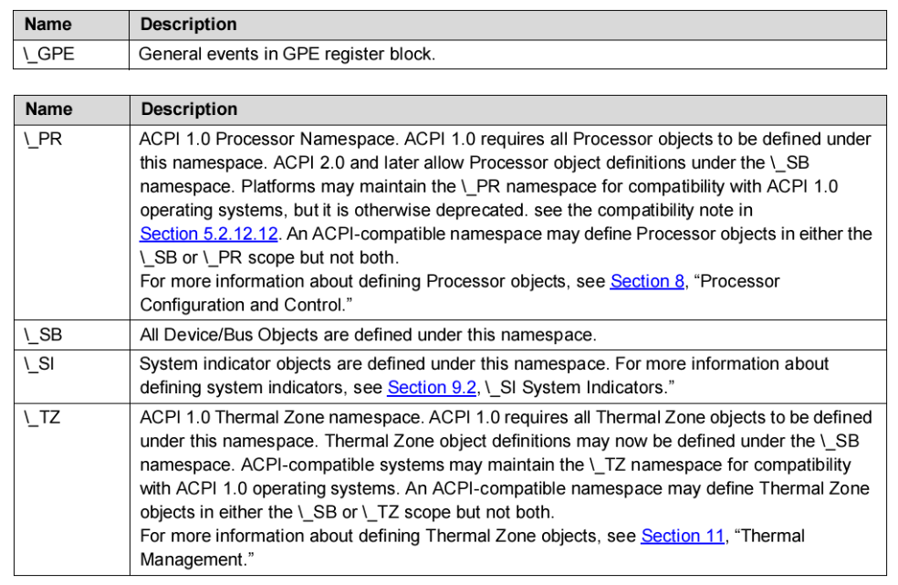
自定义一个table
asl 编译成aml文件，aml打包成raw，raw打包成ffs
从ffs中找到aml块，保存到memory中，然后调用protocol去install。
// Example SSDT: SSDT_MYCUSTOM.aml
DefinitionBlock ("SSDT_MYCUSTOM.aml", "SSDT", 1, "YOURID", "YOURID", 1)
{
// Insert your ACPI table content here
// Example:
Method (_STA, 0, NotSerialized) // _STA: Status
{
Return (0x0F) // indicate device is present and working
}
}
- DefinitionBlock：
DefinitionBlock用于定义ACPI表格文件的开头。它指定了文件名（SSDT_MYCUSTOM.aml）、表格类型（SSDT表示Secondary System Description Table）、ACPI规范版本（1）、OEM ID（"YOURID"）、OEM 表格 ID（"YOURID"）。
- Method (_STA)：
- 在ACPI表格中，可以定义方法来提供功能。这里，
Method (_STA, 0, NotSerialized)声明了一个名为_STA的方法，没有参数（0），并且不需要原子执行（NotSerialized）。 _STA通常用于指示设备的状态。在这个例子中，Return (0x0F)用于返回一个状态字节（0x0F），通常表示设备存在并且正常工作。
- 在ACPI表格中，可以定义方法来提供功能。这里，
EDK2 protocol
Status = gBS->LocateProtocol (&gEfiAcpiTableProtocolGuid, NULL, (VOID **) &AcpiTable);
Status = AcpiTable->InstallAcpiTable ( AcpiTable, Table, TableSize, &TableKey ); 还有个uninstall，用来卸载ACPI table。
如果想更新某个table，需要先获取，卸载，最后再重新安装，和device tree 类似。
工具
https://www.nirsoft.net/utils/firmware_tables_view.html
RW
UEFI Shell 下 https://acpica.org/downloads/uefi-support
acpi windwos tool download link: https://acpica.org/downloads/binary-tools
UEFI Shell 下 https://github.com/andreiw/UefiToolsPkg/tree/master/Applications
UEFI Shell 下原生acpiview from UefiShellAcpiViewCommandLib.inf
参考：
Advanced Configuration and Power Interface (ACPI) Introduction and Overview
ACPI Spec
https://www.lab-z.com/revmem/
ACPI Source Language (ASL) Tutorial
OS
FreeRTOS
[TOC]
实时性，优先级高的先做，优先级一样的交替做。
实时性
实时性主要体现在以下几个方面：
1. 确定性（Determinism）
RTOS能够在严格规定的时间内完成任务。无论系统负载如何，RTOS都能保证任务在预定的时间内完成。这种确定性对于控制系统和安全关键应用（如航空航天、医疗设备等）至关重要。
2. 低延迟（Low Latency）
RTOS能够迅速响应外部事件。低延迟意味着系统能够在很短的时间内从中断处理切换到任务处理，这对于需要快速反应的应用（如自动化控制、实时数据处理等）非常重要。
3. 优先级调度（Priority Scheduling）
RTOS通常采用优先级调度算法，确保高优先级任务能够优先获得CPU资源。常见的调度算法包括优先级抢占调度（Priority Preemptive Scheduling）和循环优先级调度（Round-Robin Scheduling）。
4. 中断处理（Interrupt Handling）
RTOS优化了中断处理机制，使得中断服务程序（ISR）能够迅速响应硬件中断并迅速切换到相应的任务。这种快速的中断处理能力使得系统能够及时响应外部事件。
5. 时间管理（Time Management）
RTOS提供精确的时间管理功能，包括定时器和延迟机制，确保任务能够在指定时间内启动或延迟执行。这对于周期性任务和延迟任务的管理至关重要。
6. 资源管理（Resource Management）
RTOS通过提供互斥锁、信号量、消息队列等同步机制，确保多个任务之间的资源访问不会导致竞争和冲突，从而维持系统的稳定性和实时性。
Linux 为什么不是实时操作系统
详细原因：
1. 内核的设计
- 抢占性和优先级反转问题：虽然 Linux 支持内核抢占，但它的抢占并不完全适合实时应用。内核态的代码可能会禁用中断或锁住资源，导致高优先级任务被低优先级任务阻塞，产生优先级反转问题。
- 中断处理：在 Linux 中，中断处理有时是不可抢占的，某些关键部分可能会长时间禁用中断，这会增加系统的响应时间。
2. 调度器
- 调度策略：Linux 的调度策略设计是为了公平和高效地利用 CPU 资源，而不是为了实时性。虽然 Linux 提供了实时调度类（SCHED_FIFO 和 SCHED_RR），但整体调度器并不是为确定性的实时性设计的。
- 上下文切换：Linux 的调度器在处理上下文切换时，可能引入不可预期的延迟，无法保证实时任务在严格时间内被调度。
3. 内存管理
- 内存分配延迟：Linux 的内存管理子系统在分配和释放内存时，可能会引入不可预期的延迟，特别是在内存紧张时。
- 页交换（Swapping）：Linux 使用虚拟内存和交换空间，这意味着在高负载情况下，内存页面可能会被交换到磁盘，进一步增加延迟。
4. 内核锁和同步机制
- 锁争用：Linux 内核中大量使用锁来保护共享资源，但在高负载或并发访问时，锁争用会增加延迟和不确定性。
- 不可中断的部分：某些内核代码在运行时不能被中断或抢占，这会导致高优先级的实时任务不得不等待，增加延迟。
5. 设备驱动
- 驱动模型：Linux 的设备驱动模型并不是为实时性优化的，某些设备驱动可能会长时间占用 CPU，导致高优先级任务的延迟。
- 中断处理延迟：设备驱动的中断处理机制可能会引入额外的延迟，无法保证及时响应硬件中断。
6. 缺乏硬实时保障
- 软实时 vs 硬实时：Linux 能够满足某些软实时要求（即任务通常能在规定时间内完成，但不保证每次都能完成），但不能满足硬实时要求（即任务必须在规定时间内完成）。硬实时系统需要严格的时间约束，Linux 无法提供这种保障。
LeetCode
记录自己做过的一些题，方便复习。
C basic
[toc]
C语言关键字
static 作用
extern 作用
结构体联合体区别
C语言压栈过程
C语言内存布局
C语言定义全局变量冲突
如果你在头文件中定义一个全局变量，并在多个源文件中包含该头文件，那么每个源文件都会创建该变量的一个副本。这将导致编译错误，因为 C 语言不允许多个定义同名的全局变量。
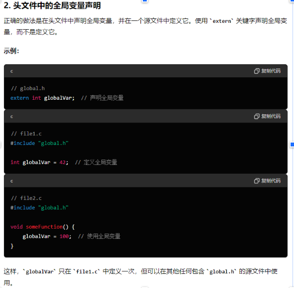
C语言区分大小端
#include <stdio.h>
int check_endianness() {
union {
unsigned int i;
unsigned char c[4];
} test_union;
test_union.i = 0x01020304;
if (test_union.c[0] == 1) {
return 1; // 大端
} else {
return 0; // 小端
}
}
int main() {
if (check_endianness()) {
printf("大端 (Big-endian)\n");
} else {
printf("小端 (Little-endian)\n");
}
return 0;
}
test_union.i 被赋值为 0x01020304。这是一个32位的整数，包含4个字节。
如果系统是大端序（Big-endian），那么内存中存储的顺序为：01 02 03 04。
如果系统是小端序（Little-endian），那么内存中存储的顺序为：04 03 02 01。
统计64无符号整形中0、1的个数
Brian Kernighan算法可以用于清除二进制数中最右侧的1。
Brian Kernighan算法的做法是先将当前数减一，然后在与当前数进行按位与运算。
x=x&(x-1)
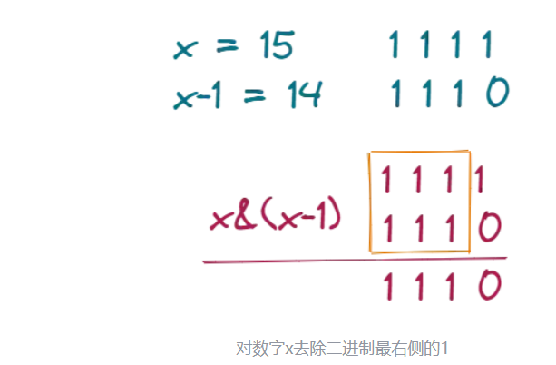
#include <stdio.h>
#include <stdint.h>
void count_bits(uint64_t number, int *count_zeros, int *count_ones) {
*count_ones = 0;
while (number) {
number &= (number - 1);
(*count_ones)++;
}
*count_zeros = 64 - *count_ones;
}
int main() {
uint64_t number = 0b11010101; // 示例数
int count_zeros, count_ones;
count_bits(number, &count_zeros, &count_ones);
printf("Number of 0s: %d, Number of 1s: %d\n", count_zeros, count_ones);
return 0;
}
MSB LSB
统计64位无符号整数中最高有效位（Highest Significant Bit, MSB）和最低有效位（Least Significant Bit, LSB）的位位置
#include <stdio.h>
#include <stdint.h>
// 找到最低有效位（LSB）的位置
int find_lsb(uint64_t number) {
if (number == 0) return -1; // 如果数是0，没有有效位
int position = 0;
while ((number & 1) == 0) {
number >>= 1;
position++;
}
return position;
}
// 找到最高有效位（MSB）的位置
int find_msb(uint64_t number) {
if (number == 0) return -1; // 如果数是0，没有有效位
int position = 63;
while ((number & (1ULL << position)) == 0) {
position--;
}
return position;
}
int main() {
uint64_t number = 0b11010101; // 示例数
int lsb_position = find_lsb(number);
int msb_position = find_msb(number);
if (lsb_position != -1) {
printf("LSB position: %d\n", lsb_position);
} else {
printf("The number has no LSB (number is 0).\n");
}
if (msb_position != -1) {
printf("MSB position: %d\n", msb_position);
} else {
printf("The number has no MSB (number is 0).\n");
}
return 0;
}
memory copy
561 void *memcpy(void *dest, const void *src, size_t count)
562 {
563 char *tmp = dest;
564 const char *s = src;
565
566 while (count--)
567 *tmp++ = *s++;
568 return dest;
569 }
Bit 运算
[toc]
vector<int> ans;
int countOnes(int nums) {
int numOnes = 0;
while(nums){
nums &= (nums - 1);
numOnes++;
}
return numOnes;
}
vector<int> countBits(int n) {
for (int index = 0; index <= n; index++) {
ans.push_back(countOnes(index));
}
return ans;
}
Brian Kernighan算法可以用于清除二进制数中最右侧的1。
Brian Kernighan算法的做法是先将当前数减一，然后在与当前数进行按位与运算。
x=x&(x-1)
LeetCode
[toc]
记录自己做过的一些题，方便复习。
二分法
35. 搜索插入位置
while 循环，有四中情况，在左、在右、找到了，没找到。
-
注意mid的特殊计算方法。
-
注意区间折半时候加一减一。
class Solution {
public:
int searchInsert(vector<int>& nums, int target) {
int left = 0;
int right = nums.size() - 1;
while(left<=right) {
// 防止整数溢出，left + right 可能超过int max
// 使用这种算法想到与，左边加上二者一半的差值
int mid = left + ((right -left) >> 1);
if (nums[mid] > target) {
// 在左边
right = mid - 1;
} else if (nums[mid] < target) {
// 在右边
left = mid + 1;
} else if (nums[mid] = target) {
return mid;
} else {
//
return left + 1;
}
}
//没找到
return left;
}
};
74. 搜索二维矩阵
方式一：直接两层for循环，注意先行后列；
方法二：二分查找，注意将mid换算成二维位置；
class Solution {
public:
bool searchMatrix(vector<vector<int>>& matrix, int target) {
int left = 0;
int right = matrix.size() * matrix[0].size() - 1;
while (left <= right) {
int mid = left + ((right - left) >> 1);
int mid_value = matrix[mid/matrix[0].size()][mid%matrix[0].size()];
// printf("%d \n", mid_value);
if (target == mid_value) {
return true;
} else if (target > mid_value) {
//right
left = mid + 1;
} else {
right = mid - 1;
}
}
// for (int x = 0; x < matrix.size(); x++) {
// for (int y = 0; y < matrix[0].size(); y++) {
// // printf("x-y: %d - %d ： %d\n", x, y, matrix[x][y]);
// if (target == matrix[x][y]) {
// return true;
// }
// }
// }
return false;
}
};
34. 在排序数组中查找元素的第一个和最后一个位置
数组有序，用二分；
找两个位置，用两次二分，注意如果中间的就是目标值，需要继续往左或者右寻找，因为这个不一定是最靠边的；
class Solution {
public:
vector<int> ans;
vector<int> searchRange(vector<int>& nums, int target) {
int left = 0;
int right = nums.size() - 1;
int first = -1;
int last = -1;
// 这段不用也行
if (nums.size() == 0) {
ans.push_back(-1);
ans.push_back(-1);
return ans;
}
while (left<=right)
{
/* code */
int mid = left + ((right - left) >> 1);
if (nums[mid] == target){
first = mid;
right = mid -1;
} else if (nums[mid] > target) {
//
right = mid -1;
} else {
left = mid + 1;
}
}
left = 0;
right = nums.size() - 1;
while (left<=right)
{
/* code */
int mid = left + ((right - left) >> 1);
if (nums[mid] == target){
last = mid;
left = mid +1;
} else if (nums[mid] > target) {
//
right = mid -1;
} else {
left = mid + 1;
}
}
ans.push_back(first);
ans.push_back(last);
return ans;
}
};
33. 搜索旋转排序数组
部分有序，也可以用二分法；
先判断哪部分有序，在么一部分内部继续二分查找；
注意要包括左右两边的数字；
class Solution {
public:
int search(vector<int>& nums, int target) {
int left=0,right=nums.size()-1;
while(left<=right){
int mid=left+(right-left)/2;
if(target==nums[mid]) return mid;
// 左边是有序的
if(nums[left]<=nums[mid]){
// 在左半部分，继续应用二分查找
if(target>=nums[left]&&target<nums[mid]){
right=mid-1;
}else{
// 在右半部分
left=mid+1;
}
}else{
// 右边是有序的
if(target>nums[mid]&&target<=nums[right]){
left=mid+1;
}else{
right=mid-1;
}
}
}
return -1;
}
};
链表
找到相交的点，返回。
使用双指针，同时向前走，遇到末尾的空指针，从另一个接着遍历，这样两个指针相等的时候，就是两个链表相交的时候。
例如，一个长，一个段，相交，短的先到终点，然后从长的那边继续遍历，而长的还没到终点，到了以后也开始从短的开始遍历，最终相交时候两个走的路程是一样的。
- 注意判断空指针；
class Solution {
public:
ListNode *getIntersectionNode(ListNode *headA, ListNode *headB) {
if (headA == NULL || headB == NULL) {
return NULL;
}
ListNode *pa = headA;
ListNode *pb = headB;
while (pa != pb) {
pa = (pa == NULL ? headB : pa->next);
pb = (pb == NULL ? headA : pb->next);
}
return pa;
}
};
一共需要三个指针，一个头，一个尾（也就是空指针），一个临时指针（临时的头）
断开，反指；
两个指针向前移动；
暂存后继节点；
修改引用指向；
暂存当前节点；
访问下一节点；
ListNode* reverseList(ListNode* head) {
ListNode *pre = nullptr;
ListNode *curr = head;
while (curr) {
ListNode * temp = curr->next;
curr->next = pre;
pre = curr;
curr = temp;
}
return pre;
放进数组里，前后进行比较；数组可以按照index访问。
vector<int> nums;
ListNode* p = head;
while (p != nullptr) {
nums.push_back(p->val);
p = p->next;
}
for (int i = 0, j = (int)nums.size() - 1; i < nums.size()/2; i ++, j--) {
if (nums[i] != nums[j]) {
return false;
}
}
return true;
相同跳出循环，不相同继续绕圈圈，如果遇到空的，就说明到头了，返回false.
if (head == NULL || head->next == NULL) {
return false;
}
ListNode * fast = head->next;
ListNode * slow = head;
while(fast != slow) {
if (fast == NULL || fast->next == NULL) {
return false;
}
fast = fast->next->next;
slow = slow->next;
}
return true;
Tool
Git
解决git bash 中git status不能显示中文
将git 配置文件 core.quotepath项设置为false。
quotepath表示引用路径
加上--global表示全局配置
git bash 终端输入命令：
git config --global core.quotepath false
工作中的好习惯
[toc]
以前在英子工作的时候有很多我觉得很好的工作习惯，但是目前的公司使用的不太多，总结记录一下，以防忘记。
邮件
- 不想留底的内容不要写；
- 想留底的内容一定要写；
- 要写经过深思熟虑的内容；
- 一个邮件只讲一件事；
- 情绪化的内容尽量不要写；
- 通知、工作安排、进度交流要用邮件；
- 邮件要规整，比如加一些圆点标记符号等，条理清晰；
会议纪要Meeting Minutes
记录会上讨论了什么，有什么结论，哪些事情没有结论等，方便与下一次会议衔接。同时，明确职责划分，防止会议上讨论的地方互相有误解，尤其是和老外开会。
同时可以站在全局视角看部门内的事务。
英文会议
提前了解会议议题，要对讨论的内容熟悉。
在老外说完以后，可以重复、总结他们的观点，防止理解的有偏差。
功能开发
-
写代码；
-
在Jira或者是HSD上记录自己做了哪些unit test，覆盖了哪些功能；
-
回归测试，在入库之前，自己先做一些回归测试，确保自己的这个功能不会对其他功能有影响。比如，无论改了什么功能，要测试BIOS 能正常开机进OS，能修改选项，能升级其他版本的BIOS等最基础的功能。
One on One
这个功能还是挺好的，可以增进了解，增强信任。不限于manager，也可以是任何人。记得以前除了manager，还会和second manager，arch，Jun等人one one，收获很多。
2024 读书
[toc]